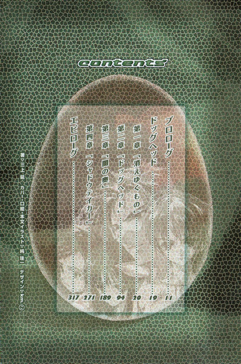
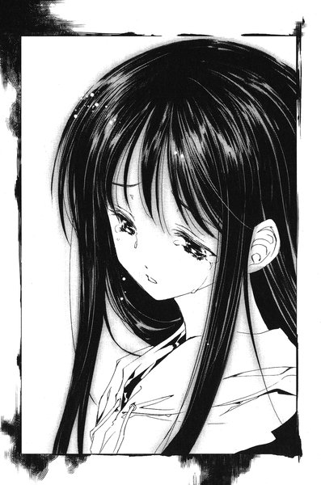
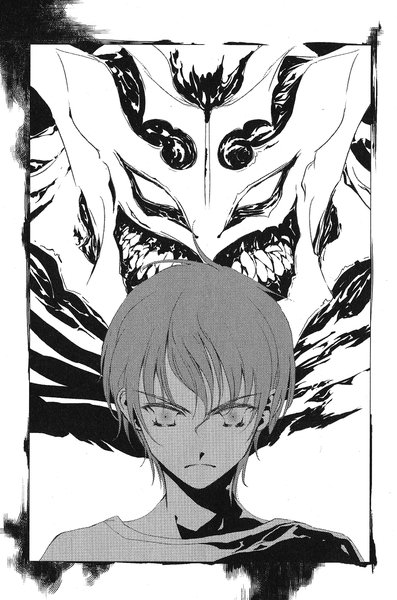

| [三上延] シャドウテイカー5 | |
| 三上延 | |
| (2015) | |
|
シャドウテイカー５ ドッグヘッド
著 三上 延
イラスト 純 珪一
|

プロローグ
ドッグヘッド
第一章「消えゆくもの」
第二章「ドッグヘッド」
第三章「闇の奥」
第四章「シャドウテイカー」
エピローグ
プロローグ

目を開けると彼女は電車のシートに腰を下ろしていた。電車はレールを響かせながらどこかへ走っている。彼女の目の前には乗客たちが壁のように立ち並んでいた。既に太陽はほとんど沈んでいるおり、かすかな光の名残が車内に射し込んでいた。
「わたし......」
彼女は口の中で小さくつぶやく。その後に続くはずの疑問がいくつも頭をよぎった──どうしてここにいるの？どこへ行こうとしているの？なにをしていたの？
霧がかかったように頭がはっきりしない。彼女はそれらの疑問をひとまず隅に追いやった。
その前にまず思い出さなければならないことがある。
（わたしの名前）
彼女は記憶を探る。まだそこまでは忘れてはいないはずだった。
「......よう」
すぐ耳元で誰かの声が聞こえた。懐かしくて心が安らぐ声。
「葉？」
水をかぶったように我に返る。聞こえているのは自分の名前だった。
雛咲葉。わたしの名前。
葉は顔を上げる。声の主は隣に座っている少年だった。柔和な優しげな顔立ちだが、影が射しているせいかどことなく疲れているように見える。
「......裕生ちゃん」
彼の名前を思い浮かべるのにほんの少し努力が必要だった。口に出すとその呼び名はかすかに引っかかる。以前は別の名前で呼んでいた気がした。
「今、電車出たところだよ」
少しかすれた声で藤牧裕生は言った。
彼の着ているシャツのあちこちが黒く汚れている。髪の毛は土か砂でもかぶったようにばさばさになっていた。さんざん地面の上を這いずり回った後、という様子だった。
彼女の胸の奥で不安が広がる。なにか良くないことが起こったのかもしれない。
「あの、わたしたち、今なにしてるんですか？」
おそるおそる葉が尋ねると、
「えっ？」
裕生は大きく目を見開いた。そして、なにかに思い当たったようにちらりと自分の腕時計を見た。
「そうか......結構、時間が過ぎたから」
自分に言い聞かせるようにつぶやき、葉に向かって笑みを浮かべた。心からの笑顔にはほど遠い。彼女を安心させるためだけに笑っている気がした。
「今日は十月五日」
と、裕生は言った。日付を教えられて初めて、今日が何日なのか思い出せない自分に気づいた。
「これから加賀見に帰るところ」
加賀見、という記憶にない言葉に彼女は戸惑った。しかし、「帰る」という言葉で自分たちの住む街の地名だと分かった。
葉えているのかも自分ではよく分からない。失った記憶が多すぎるのだ。時間の感覚もはっきりしなくなっていた。
「......手帳」
忘れてはいけないことを記した手帳をいつも持ち歩いているはずだ。一体どこにしまっただろう。自分の体を探ろうとして、ふと右手の甲に黒いマジックペンでなにか書いてあることに気づいた。
手帳はスカートの左のポケット
前にも自分はこんな風に手帳を探したことがあったに違いない。そのための注意書きなのだろう。ポケットを探ろうとして、ふと彼女は自分の服を見下ろした。
「え......？」
彼女は長袖のブラウスにロングスカートを身につけているが、裕生と同じように彼女の服も黒く汚れている。ブラウスの右の袖は根本から破りとられ、むき出しの白い肩が見えていた。
スカートの膝のあたりをこすってみると、指先が灰のようなもので汚れる。
彼女は目を上げて、立っている乗客たちを見た。皆、葉たちと同じように服を汚している。
「葉」
と、裕生は言った。
「ぼくと一緒に、死ぬのは怖い？」
葉は目を瞠った。どうしてそんなことを尋ねるのか、聞き返すのがはばかられるような真剣さが裕生の声にはこもっていた。
彼女は心の深い部分に問いかけるように目を閉じた。
死ぬのはあまり怖くない。一人になる方が恐ろしかった。
「一緒だったら、いいです」
裕生はなぜかほっとしたような顔をした。
「......そっか。良かった」
裕生の額には汗がにじんでいる。それなのに、体はかすかに震えていた。体調が悪いのかもしれない。
ふと、葉は裕生の膝に投げ出されている左手に目を留めた。
背中にぞくりと震えが走った。
「その手は......？」
裕生の左手には細長い布が巻き付けられている。包帯の代わりらしかった。布の隙間から、紫色に腫れ上がった指が何本か見えている。
指同士が編まれたようによじれ合い、でたらめな方向を向いていた。布に包まれた手の甲もあり得ない場所がぼこりと盛り上がっていた。
「あ、これ？」
裕生は軽く左手を持ち上げながら、無関心に言った。
「大した怪我じゃないよ。骨が折れてるだけだから」
「どうして病院に」
行かなかったの、という言葉を彼女は呑み込んだ。裕生の左手に巻かれている布には見覚えがある。葉の着ているブラウスと同じ柄──破りとられている右の袖だった。
これを巻いたのは彼女自身らしい。
「病院に行くどころじゃなかったんだよ。ほら」
裕生は肩越しに窓の外を見る。彼にならって葉も窓を振り返った。
オレンジ色に染まったビルの群れが見える。建物の中からも、その周囲からも無数の黒煙が立ちのぼっていた。黒煙は上空で一つの塊となって雨雲のように空を汚していた。何機ものヘリコプターが煙を迂回するように空を飛び回っていた。
一つの街が燃やされていた。
「......ゆめ？」
無意識のうちに彼女はつぶやいていた。今見ているこの光景が、現実のものとは思えなかった。
「夢じゃない」
すぐ耳元で裕生が囁いた。かすかに震えているその声には、まぎれもない恐怖がこもっていた。
「夢じゃないんだ」
来るはずのない目覚めを待っているかのように、葉は呆然とその光景を見つめていた。
ドッグヘッド
第一章 「消えゆくもの」
１
十月四日。加賀見高校。
下校のチャイムが鳴っている。昇降口まで来た時、藤牧裕生は下駄箱で靴を履き替えている見慣れた女子生徒の姿に気づいた。
裕生には背を向けているが、腰まで伸びたロングヘアといい、すらりとした体型といい、見間違いようがない。
「西尾！」
と、裕生は言う。同じクラスの西尾みちるだった。一瞬、声に反応して足を止めたように見えたが、振り返らずに玄関から小走りに出て行ってしまう。裕生もあわただしく靴を履き替えると、人混みをすり抜けて校舎の外へ走り出た。
あたりをきょろきょろと見回したが、もう見失っていた。
「どした？」
振り返ると小太りの男子生徒が立っている。友人の佐貫峻だった。ギプスに固められた右腕を首から吊っている。まだ帰るつもりはないのか、バッグは持っていない。
「今、西尾がいたんだけど、声かけたのに行っちゃったんだよ」
「......なんか用事でもあったんじゃねえのか？」
「うん......まあ、そうかもしれないけど」
裕生は納得が行かなかった。みちると佐貫と三人で一緒にいることが多かったが、最近教室でみちるに話しかけられた記憶がほとんどない。
「最近、西尾に避けられてる気がするんだけど」
佐貫の顔にちらりと困った表情が浮かんだ気がした。
「......そうだったか？」
「なんか変だよ、最近」
と、裕生は言った。
「ぼく、なにか怒らせるようなことしたかな」
みちるはさっぱりした性格で、なにか言いたいことがあればきちんと言うはずだ。そうしないのはよほどの事情があるのではないかと思う。
「それはないないないない。絶対あり得ない」
なぜかきっぱりと佐貫は否定する。
「怒ってるとかじゃなくて、どっちかっていうと......」
一瞬、佐貫は口をつぐんだ。
「......色々あったからな。ちょっと元気ないだけじゃないか」
「そうかなあ」
確かにみちるは裕生や佐貫と一緒している。精神的なショックが残っていてもおかしくはないのだが、どうしてそれが裕生を避けるという行動に結び付くのかよく分からなかった。それに佐貫とは以前と変わりなく接している気がする。
「お前、もう帰るんだろ？」
佐貫は話題を変えるように言い、裕生はうなずいた。
「うん......団地で葉が待ってると思うし」
裕生の幼馴染みの雛咲葉には秘密がある。
彼女は「カゲヌシ」という異世界の怪物に取り憑かれている。カゲヌシは人間の秘めた「ねがい」に呼ばれて現れ、それを叶える代わりに宿主以外の人間を捕食する。しかし、人間を食べるたびにカゲヌシの力も増し、やがて人間の自我を完全に乗っ取ってしまう。
葉に取り憑いているカゲヌシの名前は「黒の彼方」。双頭の犬の姿をしている。この「黒の彼方」だけは人間ではなく他のカゲヌシを餌としており、そのために「同族食い」と呼ばれて同じ種族からも忌み嫌われていた。
今、葉は学校を休学している。一ヶ月前に負った怪我の治療という名目になっているが、退院した後も学校へ戻っていない。葉の精神は少しずつ「黒の彼方」に浸食され、記憶を失いつつある。もう通学して授業を受けられる状態ではなかった。
裕生の目的は葉をカゲヌシから解放することにあった。
「佐貫はこれから部活行くの？」
と、裕生は言った。佐貫はまた微妙な表情を浮かべる。
「いや、そうじゃないけど......ちょっと人と待ち合わせしてたんだ。お前は早く帰って雛咲さんに顔見せてやれよ。なんかあったら連絡するから」
佐貫とみちるは葉の事情を知っている。二人とも裕生たちに協力してくれていた。
「うん......分かった」
裕生は戸惑っていた。なんとなく追い立てられている気もするが、急いで帰りたいのは本当だった。
「じゃあ、また明日」
背中に佐貫の視線を感じつつ、裕生は歩き出した。
裕生が校門を出るまで見送った佐貫は、軽くため息をついた。
校舎の玄関からはコンクリートの屋根が張り出していて、太い柱がそれを支えている。佐貫は柱へ近づいて行き、反対側を覗き込んだ。
「もう行ったぞ」
と、無愛想に言った。
「......ごめん」
みちるが柱にぴったりと背中を預けて立っていた。裕生に見つからないよう隠れていたのだった。
「ま、別に謝らなくていいんだけどよ......」
佐貫が校舎の前にいたのは、みちると待ち合わせをするためだった。彼女に話しておきたいことがあった。
「なにも隠れることねえだろ」
と、佐貫は言った。うつむいたみちるの顔は真っ赤になっている。
「裕生の奴、ニブいけど、いくらなんでもバレるぞ。もっと普通にしてろよ」
「......うん」
蚊の鳴くような声でみちるは答えた。
「とにかく行こうぜ」
佐貫は彼女を促して歩き出した。体育館裏の部室棟に、佐貫の所属する部活の部室がある。邪魔が入らないのでそこで話すつもりだった。二人は校舎の角を曲がった。
佐貫はみちるの横顔を見る。彼女の長い髪は一房だけ白くなっている。今月の初めに起こった事件でそうなったのだが、彼女の心の方にはもっと別の変化が起こっていた。
「この際だから聞くけどよ」
と、佐貫は言った。
「なに？」
暗い声でみちるは言う。佐貫はどう尋ねようか迷ったが、みちるとは遠回しの話をするようなよそよそしい間柄ではない。性別を超えた「親友」である。ずばっと言うことにした。
「お前と裕生って中学ん時からずっと仲いいだろ？いくら好きだからって今さら......」
「お、おっきな声で言わないでよっ」
慌てたようにみちるが言った。すぐそばをサッカー部の部員たちがかけ声と一緒に走って行く。佐貫は咳払いをして少し声を低めた。
「......今さらそんなに顔合わせにくいか？」
みちるの様子がおかしいと真っ先に気づいたのは佐貫だった。ひょっとするとみちる本人よりも早かったかもしれない。自覚してからのみちるは徐々に裕生を避けるようになっていた。
「しょうがないでしょ。顔見てると話せなくなっちゃうの」
正直なところ、佐貫は驚いていた。みちるは言いたいことをはっきり言う性格の持ち主だとずっと思ってきたからだ。
「お前、女の子だったんだな......」
しみじみと佐貫は言う。途端にみちるににらまれた。
「なんだと思ってたの？」
「え？......いや別に悪い意味じゃなくてよ」
俺、どうしたらいいんだ、と佐貫は思った。黙っていれば裕生に嘘を付くことになるし、もちろんみちるの気持ちを裕生に言ってしまうわけにもいかない。
「もうちょっと待ってて」
「え？」
「そのうちちゃんと慣れて、元通り藤牧と話すようにするから」
「お前それじゃ......」
問題の解決にはなっていない気がする。みちるの状況はなにも変わらない。
「告白しようとか考えないのか？」
「無理だよ」
みちるは首を振った。
「佐貫にも分かってるでしょ」
「......そうか。そうかもな」
おそらく、雛咲葉に気を遣っているのだろう。周りから見れば明らかに葉の好きな相手は裕生だった。裕生の態度は今ひとつはっきりしないが、彼女の心の支えになっているのは間違いない。みちるが下手な行動を起こせば、葉にも動揺を与えてしまうかもしれない。そもそも、今の裕生にはみちるの告白を聞く余裕はないだろう。
プレハブの部室棟の前に二人は辿りついた。一階建ての細長い建物にいくつものドアが並んでいる。どこかの部室の方からかすかにギターの音色が聞こえた。
「それで話ってなんなの？」
と、みちるが尋ねる。一番端のドアの前で佐貫は立ち止まり、ポケットから部室の鍵を出した。
「昨日、裕生にはもう話したんだけど、俺の調査結果の報告みたいなもんだ」
佐貫はドアの鍵を開けながら言った。昨日みちるも誘ったのだが、裕生と同席したがらなかったので、今日待ち合わせをしたのだ。
「『皇輝山文書』のことなんだけど」
『皇輝山文書』──二ヶ月前、皇輝山天明というカゲヌシの元契約者から手に入れた偽の古文書である。奇妙な記号に埋め尽くされた内容を、解読出来る者は今まで誰もいなかった。
「あれがどうかしたの？」
「なにが書いてあるか分かったかもしれない」
みちるは目を瞠った。
裕生は団地に向かって急ぎ足で歩いていた。
なるべく長い時間葉のそばにいようと心に決めていた。本当は自分も学校を休学するつもりだったが、周囲に止められて思いとどまっていた。その代わり、兄の雄一が葉と一緒にいてくれている。
彼女のそばにいると以前から決めていた。それに、葉の父の清史とも約束を交わしている。娘を一人にしないでほしい、と。
清史もまたカゲヌシの犠牲者の一人だった。一ヶ月前、失踪していた清史が四年ぶりに加賀見に戻ってきた。清史は「リグル・リグル」というカゲヌシに取り憑かれていた。結局、葉の「黒の彼方」がリグル・リグルを倒したが、葉のそばにとどまることなく去って行った。
カゲヌシに操られていたとはいえ、自分の妻を初めとする多くの人々を犠牲にしたことを彼は悔いていた──おそらくはもうこの世にいない。
裕生の胸がきりきりと痛んだ。
以前、葉は「同族食い」の力を使って、カゲヌシに取り憑かれた人々を助けたいと言ったことがある。裕生もそのつもりだった。今まで「黒の彼方」は五匹のカゲヌシを食っているが、「助ける」ことが出来たと言える契約者はほとんどいない。カゲヌシを倒しても、彼らの周囲の人々が「カゲヌシ」の犠牲になっている事実は残るからだ。
カゲヌシを食うにつれて「黒の彼方」の力は大きくなってきている。あと一度でもカゲヌシを食わせれば、おそらく葉は完全に「黒の彼方」の支配下に入ってしまうだろう。
もうあまり時間は残っていなかった。
国道沿いを歩いていた裕生は、コンビニの前にさしかかっていた。ここを過ぎればもうすぐ団地に着く。そのまま通り過ぎようとして、ふと足を止めた。
ワンピース姿の小柄な少女がしゃがみ込んで、緑色の金網フェンスに背中を預けていた。膝に顔を埋めているが、肩ぐらいまでの不揃いな髪ですぐに誰か分かった。
「葉？」
遠慮がちに声をかけると、彼女は顔を上げた。黒目がちの瞳が裕生の前で止まり、金網から跳ね返るように立ち上がった。そして、笑顔で裕生の方へ走ってきた。
「こんなとこでなにして......」
裕生の言葉は途中で止まった。葉は裕生の右腕を両手でぎゅっと抱え込んだ。やわらかい髪の毛が裕生の鼻のあたりをくすぐっている。
「待ってたの」
裕生の頬が熱くなっていた。あたりを見回すと、コンビニの前にいる小学生たちが微妙な目つきで自分たちを見ている。それに抱き付かれているせいで、ちょうど肘のあたりに葉のふくらみがぐいぐい押し付けられている。
「あの、ちょっと、胸......じゃなくて、ちょっと歩きにくいんだけど」
慌てて裕生は言い直した。葉すと、それでも裕生の手を探り当ててしっかりと握りしめる。裕生もおそるおそる握り返して歩き出した。
「怪我、大丈夫？」
二日前に退院したものの、肩に負った傷はまだ完全には治りきっていないはずだ。
「......だいぶ」
この数週間で葉は変わってきていた。子供の頃ならともかく、こんな風に自分から手を握ることなど以前は絶対になかったことだ。不安なせいなのか、あるいは記憶をなくしていることがなにか関係しているのかもしれない。
人間の記憶にはいくつかの種類があるらしい。医師の診断ではものごとの意味や形についての葉の記憶はさほど失われておらず、ものごとに関するエピソードが消えていっている。
例えば「時計」や「バス」を見た時に、それが時間を計るものであり、交通機関であることは認識出来る。しかし、自分が実際に時計を見た時のことや、バスに乗った時のことは忘れている。
つまり彼女の脳からは「思い出」が失われつつある。それに加えて、新しく見聞きしたことを憶えようとしても、うまく行かないようだった。
「兄さんは一緒じゃなかったの？」
「......一人で来ました」
「心配させるから、離れちゃ駄目だよ」
退院してから葉はあまり雄一えているものの、同じ団地に住んでいることは忘れている。
「ちょっと、怖かったから」
どうやら外見の印象で怖いと感じているらしい。仕方のないこととはいえ、雄一が聞いたらがっかりするだろう。
「大丈夫だよ。今頃、捜し回ってると思う」
生まれた時から近所に住んでいる雄一の記憶がなくなってしまったのは大きなショックだった。もうどんな知人の記憶を失ってもおかしくないことになる。もちろん裕生のこともいつ忘れられるか分からない。
「葉を一人にしない」という約束の意味を裕生は噛みしめていた。もし完全に記憶を失えば、葉は一人になるのと同じだ。そうさせないためには、彼女を「黒の彼方」から解放するしかない。清史もそのことを言いたかったに違いなかった。
２
部室、というよりも佐貫の部屋に上がり込んだ気分だった。壁際のスチールの棚にも中央の古いテーブルにも床にも雑多ながらくたが溢れている。マンガやＣＤが塔のごとく積まれているかと思えば、得体の知れない楽器や古いパソコンが投げ出してある。ほとんど足の踏み場もなかった。隅の方の大きな段ボールから大きな斧のようなものが見えている気もするが、見間違いだと思うことにした。
「そういえば、お前はここに来んの初めてだったよな。裕生は何回か来たことあるけど。そこらへん座れよ」
みちるはテーブルのそばの椅子に腰かけた。
「コーヒーでいいだろ？」
佐貫はどこかからかマグカップを二つ出してきて、ギプスをしていない片手だけで器用にインスタントコーヒーを淹れ始めた。もちろんポットもテーブルの上に置いてある。
「ここ、なんの部室？」
「なにって......色々だけど？ マンドリン部とか、中国将棋同好会とか、中世武器研究会......」
「なにそれ。全部聞いたことないよ......」
ふと、みちるは校内のどこかに「佐貫の巣」と呼ばれる部屋があるという噂を思い出した。佐貫は十以上の部活や同好会を掛け持ちしているが、そのうちの半分は彼以外に部員・会員のいない瀕死の団体らしい。それらの団体の「部室」という名目でどこかの部屋を使う許可を取り、私物を持ち込んでほとんど一人だけで独占している。学校側も快く思っていないが、一人でもきちんと活動しているので文句は言えない......という話だった。
「すごい。本当にあったんだ......」
「なんか言ったか？」
マグカップを差し出しながら佐貫は言った。
みちるは首を振りながらカップを受け取った。ふと、テーブルの上に書名も作者名もない小さな和装本が置いてあることに気づいた。表紙の色は真っ黒で、四隅がすり切れて綴じ糸もほどけかかっている。
皇輝山文書だった。みちるも何度か中身を見せてもらったことがある。
「ほんとに古い本みたいに見えるよね」
「作ったのは雛咲さんの親父さんだけど、皇輝山天明がわざとボロくしたんじゃねえかな」
これにはかつてこの町に住んでいた三人のカゲヌシの契約者が関わっている。階位に属していない、特殊なカゲヌシ──「レインメイカー」に取り憑かれた船瀬智和がこの本の内容を夢で見て、雛咲清史がこの本を作り、皇輝山天明がその所有者となった。奇妙なことに誰もこの本の内容をはっきりと分かっていなかった。
みちるは本を開く。最初のページにはまるで題名のように大きく×が書かれている。その後のページには四角や三角を組み合わせた記号がびっしりと書いてある。ちょうど真ん中まで来ると、また最初のページと同じように×が大書されたページにぶつかる。そして、そこからまたびっしりと記号が書き込まれたページが続く。
どうやら、前半と後半で二つに分かれているらしかった。
「今のところ、俺たちが分かってる『サイン』は全部で五つ......ボルガ、アブサロム、龍子主、リグル・リグル、それに『黒の彼方』」
佐貫は左手の指を順々に折りながら言った。
「五つの『サイン』はそれぞれ前半に一ヶ所、後半に一ヶ所ずつ書いてある。全部で十ヶ所ってことだよな。『黒の彼方』だけちょっと外れたところに書いてあるけど」
みちるはうなずいた。『黒の彼方』のサインは×印だった。
「『サイン』が含まれてる以上、この本の内容がカゲヌシに絡んでるのは間違いない。そこで問題になるのは、全部の記号がカゲヌシの『サイン』なのか、それとも『サイン』は全体の一部で、他はなにかの文章になってるのかってことなんだけど......」
「それは調べようがないから、考えないようにするって言ってなかったっけ？」
みちるが口を挟む。この本を手に入れた時、佐貫自身がそう言っていた気がする。
「ああは言ったんだけど、やっぱり気になってさ。あの後ずっと調べてたんだ」
「どうやって？」
「もしこれがカゲヌシの『サイン』を含んでる文章だったら、『サイン』以外の記号の部分は組み合わさって意味のある文章になってるわけだろ。だったら、よく使う記号とそうじゃない記号の差が絶対出てくるはずなんだ。本の中に出てくる回数の偏りを調べたら、ひょっとして意味が分かるかもしれないと思って......でも、全然偏りがない。どの記号も二回......前半に一回、後半に一回出てくるだけ」
「......ごめん。なんかよく分からないんだけど」
みちるは首をかしげながら言った。
「だから、この本の中でどの記号がどこに何回ずつ出てくるか最初から最後まで全部チェックしてったんだよ」
「え......？」
みちるは思わず『皇輝山文書』を見下ろした。薄い本とはいえ、百ページ近くあるはずだ。
「ホントに大変だった。一個ずつ書き写して調べていったんだけど、見分けるのが微妙なのもあってさ」
「......全部でどれぐらい？」
「記号の数か？ 全部で一万七千九百十二。種類にすると八千九百五十六。どれも二回ずつしか出てこないからな」
一万七千......とみちるは口の中でつぶやいた。気の遠くなるような作業だった。
「でもそれでだいたい分かった。全部の記号に偏りがないっていうことは、この本には多分意味のある文章は含まれてない。カゲヌシの『サイン』の一覧表になってる可能性がすごく高いってこと」
それが正しければ、カゲヌシは全部で八千九百五十六種類いる、ということになる。
「そんなに多いの？ カゲヌシって」
みちるがそう言うと、佐貫は軽く肩をすくめた。
「日本だけにいるとは限らないだろ？ もし、世界中に散らばってたら、決して多い数じゃない」
「でも、これが『サイン』の一覧表だったら、なんで前半と後半で二回出てくるの？」
「もちろんそれも考えた」
と、佐貫は言った。
「多分、この本には前半と後半で二つの一覧表が入ってるんだと思う。前半と後半だと『サイン』の並び方が全然違う。ただの一覧表じゃなくて、並び方になにか意味があるんだよ。それで雛咲さんが病院で言ってたことを思い出したんだ。『皇輝山文書』には、なにかの順番が書いてあるって」
「でも、雛咲さんのお父さんってリグルに......」
みちるは言いよどんだ。あの時の清史はカゲヌシの支配下にあったはずだ。どこまで本当のことを言っていたか分からない。
「ま、そうだけど、あそこであのカゲヌシが『皇輝山文書』のことで嘘をつく必要なかったと思う。どっちかっていうと、俺たちに知ってることを教えて謎を解かせた方がリグルにも有利だったはずだろ。レインメイカーと会うのに役に立つかもしれなかったんだし」
リグル・リグルの目的はレインメイカーを支配下に置くことだった。あのカゲヌシは清史だけではなく船瀬の娘の千晶まで操り、大勢の犠牲者を出していた。佐貫が腕に怪我をしたのも、みちるの髪の毛が少し白くなってしまったのも、リグル・リグルのせいだった。
「だから、順番っていうのは信用していいんじゃないかと思った。で、今のところ分かってるカゲヌシの『サイン』が一覧表の中でどういう順番になってるのか書き出してみた」
佐貫は一枚の紙をテーブルの上に置いた。そこにはこんなことが書いてあった。
一覧表Ａ（前半） ボルガ→アブサロム→リグル・リグル→龍子主
一覧表Ｂ（後半） リグル・リグル→龍子主→アブサロム→ボルガ
「一応、この本の前半を一覧表Ａ、後半を一覧表Ｂっていう風に考えてる」
「『黒の彼方』が入ってないけど」
「『黒の彼方』の『サイン』はどっちの一覧表からも離れたとこに書いてある。あいつはカゲヌシの中でも異質だし、例外だろうと思ってとりあえず外したんだ」
みちるはうなずきながらぬるくなったコーヒーを一口飲んだ。佐貫もそれにつられたようにマグカップを口に運んで、再び話を続けた。
「一覧表Ａの方はすぐに意味が分かった。ボルガよりもアブサロムが後、アブサロムよりも龍子主が後......多分、これはカゲヌシの『階位』を示してる。後になればなるほど格が上なんだよ」
みちるは二ヶ月前に鶴亀神社で龍子主と「黒の彼方」が戦った時のことを思い出した。確か「黒の彼方」は龍子主がアブサロムたちよりも高位にある、と言っていた。
「で、問題は一覧表Ｂの方。こっちの方はちょっと悩んだ」
みちるは順番を見る。彼女にはさっぱり分からなかった。
「でも、手がかりはちゃんとあったんだ。本の方を見ると」
佐貫は『皇輝山文書』を開いた。リグル・リグルの『サイン』は後半の一覧表の一ページ目に入っている。そこからしばらくページをめくっていくと、龍子主とアブサロムとボルガのサインが現れた。その三つはすべて同じページにあり、アブサロムとボルガの『サイン』に至っては完全に連続していた。
「......どこが手がかりなの？」
「リグルがこっちの世界に現れたのが四年前。それ以外の三匹が現れたのが全部四ヶ月前......今年の五月頃なんだ。特にアブサロムとボルガはほとんど連続して現れてる」
みちるたちは実際に見ていないが、アブサロムとボルガの話は裕生から聞いていた。蔵前司という連続殺人犯がマンションの一室で親子三人を惨殺した後、アブサロムに取り憑かれた。そのすぐ後、自分の家族の死体を発見した天内茜がボルガに取り憑かれたらしい。殺人事件そのものは大きく報道されたからよく憶えていた。
「あ......」
みちるにも佐貫の言おうとしていることが分かった。
「こっちの表は、カゲヌシたちがこの世界に現れた時期を現してるっていうこと？」
「そうだと思う」
佐貫はうなずいた。
「今まで裕生たちが会ったカゲヌシのうち、この時期に現れたカゲヌシがやけに多いのが気にはなるんだけど。ひょっとすると、この頃にカゲヌシが一気にこっちの世界に来たのかもしれない。例のカゲヌシの噂が流れ始めたのもこの頃だし」
佐貫は本を閉じると、コーヒーの残りを一気にぐっと飲んだ。みちるは改めて佐貫に感心していた。今までこの本に関わった人間たちの誰にも分からなかったことを、佐貫は一人で解き明かしてしまった。
「まあ、今話したのは全部仮説だけどな。一応筋は通ってると思うけど、ひょっとしたら間違ってるかもしれない」
「でも、すごいと思うよ」
少し沈んだ声でみちるは言った。彼女は佐貫と違って、こんな風に裕生の役に立つことは出来ない。それを察してくれたのか、佐貫は慌てたように首を振った。
「いや、それにこれが分かったからってなんの役に立つかは分からないしな」
みちるはもう一度『皇輝山文書』をぱらぱらめくり始めた。ここに記されているカゲヌシたちは、この世界のどこかにいるのだ。
「......あれ？」
一通りめくり終えたみちるは、ふと声を上げた。そして、二つの一覧表の最後をもう一度見比べる。
「どうかしたのか？」
「どっちの一覧表でも、一番最後に来る『サイン』が同じだね」
「そうだったか？」
「ほら」
みちるは前半と後半の一覧表の最後を代わる代わる開いてみせた。どちらも最後は正六角形の『サイン』だった。少し大きめに描かれた正六角形の中に、一回り小さな正六角形が描かれている。
「ほんとにそうだな。俺、チェックしたのに今まで気が付かなかった」
感心したように佐貫が言う。
「一番強いカゲヌシは、最後にこっちの世界に来るってことか」
みちるはなんとなくその『サイン』に触れた。このカゲヌシももうこの世界のどこかにいるんだろうか、とふと思った。
３
その日の夜。
『おかけになった電話は電波の届かない場所にあるか、電源が入っていないため......』
携帯の向こうから無機質なメッセージが流れてくる。裕生はぱたんと携帯を閉じた。裕生は団地のベランダに立っていた。最近、夜風の冷たさがはっきり分かるようになった。夏の名残も完全に消え、秋になったのを改めて感じる。
裕生が電話した相手は天内茜──ボルガの元契約者だった。カゲヌシから解放された後も、家族を殺した蔵前司を探し続けている。
二日に一度は必ず彼女と連絡を取ることにしていたが、昨日から電話にもメールにも返事がない。最後に話した時には、蔵前と茜の故郷である北海道に行くと言っていた。
（また忘れてるのかな）
裕生の方からしなければ、茜は連絡を忘れがちだった。彼女はボルガと契約していたせいで、一部の記憶を失っているが、どちらかというとルーズな性格のせいだろう。今までにも返事がかえってこなかったことはある。心配するほどのことではないのかもしれない。
定期的に茜と連絡を取るようになったのは理由がある。
一ヶ月前、裕生はレインメイカーの契約者・船瀬智和の体に奇妙な現象が起こっていることに気づいた。彼の頭の一部はカゲヌシの能力によって金属化されていた。
金属化の能力を持つカゲヌシを、裕生はアブサロム以外に知らない。
蔵前のカゲヌシ・アブサロムは「黒の彼方」によって倒されている。「黒の彼方」がアブサロムを捕食するところを裕生自身も確かに見ていた。カゲヌシが死ねばその能力も解除されるはずである。しかし、船瀬の体にその効果が残っているということは、アブサロムは生きており、どこかで船瀬と戦ったということになる。
蔵前は裕生と葉と茜を憎んでいる。もし、アブサロムが生きているとすれば、間違いなく裕生たちはその標的になるはずだ。カゲヌシを持たずに単独で蔵前を追っている茜が最も危険だった。
背後の窓が開いて兄の雄一がのっそりと姿を現した。手にはタバコとライターを持っている。
「ん、なんだ、電話すんのか？」
「ううん、今終わったところ」
居間の方をちらっと振り返ると、誰もいなかった。
「葉なら自分の部屋にいるぞ」
先回りするように雄一は言い、タバコに火を点ける。一瞬だけ口元が炎に照らし出された。最近、雄一は部屋の中で喫煙するのをやめた。葉への配慮のつもりらしい。
裕生は先月の出来事を思い出した。このベランダで雄一と話しているところを、カゲヌシに操られた警官に撃たれたのだった。その夜の襲撃で船瀬千晶が死に、葉を初めとして何人もの人間が怪我を負った──しかし、カゲヌシの存在は表沙汰になっていない。操られていた警官たちはカゲヌシを見ているが、一様に「幻覚」を見たということで片づいたらしい。
雄一は暗闇の少し先をぼんやりと見つめている。なにか言いたいことがあるような気がする。彼は裕生の視線に気づくと、ゆっくりと口を開いた。
「さっき親父から電話があって、今日は帰らねえってよ」
「は？」
裕生は戸惑った。こんな真面目な顔でする話なんだろうか。
「それでな......」
沈黙が流れ、裕生は心の中で身構えた──また、兄がとんでもないことを言い出す気がする。
「昼間は悪かったな」
「なにが？」
「いや、ちょっと目ェ離したスキに葉がいなくなっちまってよ」
「別に兄さんが悪いんじゃないよ」
と、裕生は言った。話の繋がりが多少おかしい気もしたが、神妙な態度はそのせいかもしれないとなんとなく納得した。
雄一の表情は晴れなかった。
「やっぱ俺じゃ安心出来ねえ......っていうか裕生、もうお前じゃねえとダメだな。お前以外の人間をもうあいつはロクに憶えてねーんだ」
痛みを感じているかのように、雄一はかすかに眉をしかめた。
「お前、あいつの態度が変わったの気が付いたか？」
裕生はうなずいた。父親の清史が去ってから、葉は自分から離れまいとしている。父親と再会したことも憶えていないはずなのだが。
「うん......色々と不安なんだと思うけど......」
「バッッッカだなお前は」
押し殺した低い声で雄一いた。
「見て分かんねーか？ あれが葉の本音だ」
「本音？」
ああ、と大きく雄一はうなずいた。
「あいつはお前が好きなんだよ。今までずっとガマンしてきたのが、記憶がなくなって抑えがきかなくなってんだ。本音じゃお前と色々やりてーんだ。手ェ繋いだり抱き合ったり」
「ちょ、ちょっとなに勝手なこと言ってるの」
裕生は兄の言葉を遮った。以前、記憶をなくし始めたことで取り乱した葉と、キッチンで「抱き合った」時のことが脳裏をよぎる。
「好きって、兄さんに葉の気持ちが分かるわけないじゃないか」
「おいおいおい。本気で言ってんのか？ 俺に分かんねーワケねえだろ？」
呆れ果てたように雄一は首を振る。
「そんな自信、一体どこから......」
突然、はっと我に返った。今、雄一はみちるの姉の西尾夕紀と付き合っているが、何年もの間ずっと自分の気持ちを胸に秘めてきた。夕紀に好意を持っていることすら、告白するまで誰も気づかなかった。
「葉はな、ずっと自分の気持ちにフタしてきたんだ。そういうこと考えたらお前に悪いとか思ってたんじゃねーか？俺にゃそういう気持ちが分かる。人の気持ちを分かってねーのはお前だ、裕生」
雄一はぴしっと人差し指を裕生の鼻先に突き付けた。
「お前は葉をどう思ってんだ？」
「どう......って......」
返事のしようがなかった。葉には信頼されていると思っているし、それに応えたいと思う自分もいる。それは恋愛などではなく、妹に対するような気持ちだとずっと思ってきたはずだった。
最近それが少し変わってきたような気がする。葉が成長するにつれて、妹として見る気持ちは薄れていた。考えてみれば裕生と一つしか年は変わらないのだ。もう公園で遊んでいた小さな女の子ではない──。
（なに考えてるんだよ）
裕生はうろたえた。
「で、でも今はそんなこと考えてる場合じゃないよ。葉はあんな状態なんだから、元に戻ってからじっくり」
「お前、そう簡単に葉が元に戻るって思ってんのか？」
一瞬、裕生は絶句した。
「なに言ってるんだよ。このまま葉がカゲヌシに乗っ取られるって思ってるの？」
「思ってねえよ」
と、雄一はきっぱり言った。
「でも、そう簡単には元に戻らねえ。これっていう方法でもありゃ話は別だけどな。違うか？」
「でも、うまくレインメイカーの能力を使えたら......」
船瀬智和に取り憑いているレインメイカーは、「黒の彼方」と同じく、階位の中にいるカゲヌシではない。階位の中にいるカゲヌシを人間から引きはがし、卵の状態に戻す能力を持っているという。
「『黒の彼方』には直には関係ねえ能力じゃねえか」
「でも、あいつは他のカゲヌシを食って生きてるんだ。餌がなくなれば、あいつだってこの世界にいる必要も......」
雄一は呆れ顔で首を振った。
「お前、あの船瀬ってオッサンが自分のカゲヌシを呼び出せる状態に見えんのか？自分の命が危ねえ時だって呼ばなかったじゃねえか。お前だって見ただろ？」
裕生は立ち尽くしていた。兄の言う通りだと思った。他のカゲヌシに襲われ、銃で撃たれた時も船瀬は身を守ろうともしなかった。船瀬はレインメイカーを呼び出さないのではなく、呼び出せないのだ。
レインメイカーは「同族食い」と同じく、他のカゲヌシたちによる通称でしかない。船瀬と契約を結んだ時の名前は他に存在する。アブサロムによって頭部に損傷を受けている船瀬は、自分のカゲヌシの名前を思い出せないらしい。
そして、その名前を知る者は誰もいなかった。
「今の葉は色んなことを忘れてってる」
雄一は一度も吸わないまま、根本まで燃え尽きているタバコをベランダの手すりに押し付けて消した。
「葉が今まで持ちこたえてきたのは、お前がいたからだろ。今すぐに葉をカゲヌシから解放すんのは難しい。だったら、あいつが元気になるようなことをしてやってもらいてえんだ。それはお前にしか出来ねえ。まあ、お前にその気がねーんだったらムリにとは言わねえけどよ」
「そ、その気って......急に言われても......」
雄一は裕生を一瞥すると、また暗闇の方へ目を戻した。
「ま、確かに急だな。だから、今夜一晩じっくり考えろ。さっきも言ったけど今日は親父も帰ってこねえし......」
うなずきそうになって、裕生は首をかしげた。そういえばどうして父の話が出てきたのだろう──なんとなく嫌な予感がする。
「......俺はこれから出かけっから」
と、雄一は付け加えた。
「え？」
今夜は父もいない。兄もいない。ということは。
この部屋に葉と二人っきりになる。
「ちょっと待ってよ。それって......」
「大丈夫だって。安心しろよ。俺も朝まで帰らねえから」
「だ、大丈夫じゃないよ！」
裕生の声はほとんど裏返りそうになっていた。前にも二人っきりになりそうな夜はあった。多少危ない場面もあった気もしたが、結局父の吾郎が帰ってきてくれた。もしあの時、二人っきりのままだったらどうなっていたか。
「そんな......もしなにかあったら......」
なにか、の中身を考えるのは避けていた。
「......なんかあったら？」
雄一はなぜか晴れ晴れした笑顔でぽんと裕生の肩を叩いた。
「なんかあるといいよな。がんばれ！」
裕生にはもう言い返す気力も残っていなかった。
４
止める間もなく兄が出て行ってから、裕生はおそるおそる葉の部屋へ向かった。
廊下から覗き込むと、彼女は膝の上に置いた目覚まし時計を真剣な眼差しで見下ろしていた。
「なにしてるの？」
葉ははっと顔を上げて、困ったように微笑んだ。
「......なんでもないです」
沈黙が流れる。
「あの、雄一......さんは？」
と、葉が言った。雄一が出て行くのには気づいていたらしい。
「出かけたよ」
今日は帰らないと言った方がいいのか悪いのか、裕生は迷った。そうしたら彼女はどんな顔をするだろう。にわかに裕生の緊張が増した。
その時、葉が立ち上がった。裕生はぎょっとして思わず一歩下がる。葉はドレッサーの上に目覚まし時計を置いてから、怪訝そうに裕生の様子を見つめる。
急に家の中が息苦しくなったような気がした。家の中に二人っきりでいるのはまずい。
「ちょっと散歩しない？」
言った瞬間に後悔した。こんな時間にどこに行くんですか、と質問されたら答えようがない。しかし、葉は無言でドレッサーのそばにかかっていたカーディガンを羽織った。
出かけるつもりらしい。
「あの......ほんとに行く？」
自分から誘っておいてと思ったが、つい確認してしまった。彼女はこくりとうなずいて、それから口を開いた。
「わたし、行きたいところがあるんですけど」
どこに行きたいのか尋ねても、葉ははっきり答えなかった。何度目かの質問で諦めて、なにも考えずに彼女の後について行くことにした。
夜更けの道ではすれ違う人もまばらだった。曲がり角で時々自信なさそうに考え込むが、すぐにまた歩き出す。十五分ほど歩き続けて、葉は不意に立ち止まった。
「......ここ？」
裕生が尋ねると、彼女はうなずいた。
目の前には加賀見高校の校門があった。
「どうしてここに来たかったの？」
意外な行き先だった。葉が学校という場所を特別に気に入っているようには見えなかったからだ。
「まだ、憶えてるかどうか確かめたかったの」
裕生は胸を衝かれる思いがした。葉にとっても通い慣れた場所のはずなのに、辿り着くまでに何度か迷うそぶりを見せていた。通学路も忘れかけているのだ。
彼女は鉄の門の隙間に顔を近づけて、校庭を覗き込んだ。ところどころに立っている水銀灯が、人気のない校舎を青白く照らしていた。校舎の時計を見ると、夜の十時を回ったところだった。
「中に入ろうか」
と、裕生は言った。
校門の高さは葉の身長と同じぐらいだが、肩の傷が治りきらない葉が乗り越えるには裕生の助けが必要だった。門の上にまたがった裕生が、手を引いて引っ張り上げる。それから裕生は門の内側に降り、後に続く葉の体を支えた。
葉は裕生の手をずっと握りしめたままだった。二人はそのままで校舎に向かって歩き出した。校庭の固い土を踏みしめるたびに足音が響く。
裕生はちらりと葉の横顔を見た。
（兄さんが言ってたこと、本当かな）
葉は裕生を好きで、ずっと待っていた──正直なところピンと来ない。小学生の頃はよく一緒に過ごしていたが、中学に入った頃から葉の態度はよそよそしくなった。避けられている気がして、それ以来裕生も距離を置くようになった。
校舎の窓の明かりはすべて消えている。中に入ることは出来そうもなかった。裕生たちは渡り廊下をくぐって、新校舎と旧校舎の間にある中庭に入った。背の高い水銀灯が庭の真ん中にぽつんと立っている。あまり手入れのされていない植木のシルエットがぼんやりと見える。
彼らを取り囲んでいる暗がりからはなんの物音も聞こえなかった。こうして人気のない学校の中を歩いていると、この世界に二人っきりになってしまったような気がした。
明かりの下を通り過ぎようとした時、
「裕生ちゃん」
と、不意に葉が言った。裕生ははっとして思わず足を止める。
驚いたのは急に呼びかけられたせいではなく、葉が自分を名前で呼んだからだった。ここ何年かはずっと「先輩」で通してきたのに。
葉はポケットを探る。なにかを探しているらしい。
「......ちょって待ってて」
彼女は照れたように笑った。
そういえば、最近は葉の言葉遣いも変わってきている。記憶をなくし始める前と違って、敬語をあまり使わなくなってきていた。それも子供の頃に戻ったようだった。
やがて、彼女は小さな手帳とボールペンを取り出した。そこに記憶代わりに大事なことを書き留めている。彼女は一番新しいページを開き、不自由そうに右手のペンを動かし始めた。
隠しているわけではなかったので、手帳の中身がはっきり見えた。
裕生ちゃんと学校に来る、とゆっくり丁寧に書き込んでいた。それから、ふと顔を上げた。
「今、何時ですか？」
裕生は自分の腕時計を見た。
「十時十分」
葉はうなずいてまたペンを走らせる。たった今書いた文章の後ろに、日付と時間も付け加えていた。
「時間まで書いてるんだ」
以前はそこまで細かく書いていなかった気がする。葉はなにも言わなかった。
再び歩き出そうとした途端、ふらりと彼女の体が傾いた。
「疲れた？」
「ううん......大したことないんですけど」
水銀灯の光では顔色はよく分からなかったが、退院したばかりで疲れやすいのかもしれない。すぐそばのベンチへ連れて行って彼女を座らせた。隣に腰を下ろした裕生の肩に、葉はぐったりと頭を預けてきた。
緊張のあまり裕生の体が固まる。意味もなく空を見上げると、月も星も出ていなかった。二人はしばらくそのままじっとしていた。
「もうすぐ、ここもわたしの知らない場所になる」
ふと、葉は独り言のようにつぶやいた。
「知らない人、知らない場所......どんどん増えていくんです。もう一度憶えようとしてもうまく行かなくて。何時間かで元に戻るんです」
「......え？」
「わたし、今日の昼間にあったことをよく憶えてないの」
裕生はぶるっと体を震わせた。さっき団地の部屋で時計を見ていたのはそういう意味だったのだ。そういえば、雄一も葉は時間の感覚が分からなくなりつつあると言っていた。
「コンビニの前まで、ぼくを迎えにきたのも憶えてない？」
葉はうなずいた。
「今は何時間かだけど、そのうちもっと短くなると思う。ここに来たことも、明日には忘れちゃうんです。手帳に書いておかないと」
葉はまだ手に持ったままの手帳を握りしめた。
「遠くへももう行けないかも。行き先も帰り道も分からなくなっちゃうから」
淡々とした声からは、不思議と悲しみや恐れは感じられなかった。かえって裕生は不安になった。
「わたし、昔のことももうあまり憶えてない。もともと憶えていたこともどんどん消えていってるんです。はっきり分かるのは、あのカゲヌシのこと。それに、裕生ちゃんのこと」
「黒の彼方」にまつわる記憶だけは残っているらしい。それ以外の記憶が消え続ければ、それだけ葉の中で「黒の彼方」の存在は大きくなっていくだろう。
「それから、書いてくれたあのお話のこと」
「『くろのかなた』？」
頭をもたせかけたまま、葉はうなずいた。
「忘れないように、いつも読み返してるの」
「黒の彼方」の名前の由来は、裕生の書いたその物語だった。無人島にいた女の子が男の子と旅に出る。とある王国に流れついた二人は、女の子の父親と出会う。そこで筆が止まっていた。
「どうなるんですか、あの後」
「まだ最後まで書いてないんだけど......」
裕生は今まで書いたところを、頭の中で整理した。
「......あの二人は王国を離れて旅を続けるんだ。王さまは二人を見送ってくれる。女の子は色々な人に出会って、どんどん賢くなっていくんだけど......」
葉身動き一つしなかった。眠っているのでなければ、真剣に耳を傾けているらしい。裕生は申し訳ない気持ちになった。結末はハッピーエンドにするつもりだったが、どうしてもその後を続けることが出来ない。今の裕生が抱えている不安と関係しているのかもしれない。
「ごめん。そこで止まってるんだ」
と、彼は言った。葉は口をつぐんだままだった。
ふと、ひやりとした風が吹いた。彼の腕を握りしめている葉の力が、痛いほど強くなった。腕越しに彼女の心臓の鼓動がはっきりと伝わってくる。
「......葉？」
覗き込もうとすると、彼女はぎこちなく顔を上げた。どんな表情をしているのか、近すぎて見ることが出来ない。かすかに開いた唇から温かい息が洩れて、裕生の頬をくすぐっている。彼は吸い寄せられるように自分の唇を近づけていった。
もう少しで二人の唇が重なろうとした瞬間、かすかに唸り声が聞こえた。まるではるか彼方から聞こえる獣の遠吠えのようだった。
はっと裕生は我に返る。それは葉の喉の奥から洩れる声だった。
裕生は葉から体を引き離すと、弾かれるように立ち上がった。背筋に冷たい汗が流れている。怪訝そうに葉は裕生を見上げた。
「......どうしたんですか？」
先ほどまでとは表情や声に微妙な違いがある。その目に浮かんでいる冷たい嘲りの色を裕生は見逃さなかった。
「お前は雛咲葉じゃない」
裕生はかすれた声で言った。
「『黒の彼方』だな」
葉の口元に酷薄な笑みが浮かんだ。
「よく気づきましたね」
葉の口を借りたカゲヌシが言った。相変わらずベンチに座ったままだったが、口を開くたびにぴくりと肩を震わせている。
「どういうことなんだよ」
と、裕生は言った。契約者が名前を呼ばない限り、カゲヌシは封じ込められたままのはずだ。
「わたしの力は徐々に大きくなっています......この娘の自我はやがて消えます。わたしを縛りつける『契約』も壊れかかっている」
葉──「黒の彼方」は精神を集中するように目を閉じ、ふと口を開いた。
「黒のかな......」
しかし、その言葉は途中で立ち消えになる。どうやら、最後まで唱えることが出来ないらしい。相手は口元に苦笑を浮かべた。
「さすがに、まだわたしの意思でわたしの『本体』を出現させることは出来ませんね。契約者の意志が介在しなければ」
裕生はほっと息をついた。
「じゃ、ぼくが葉の名前を呼べば目を覚ますんだな」
一瞬、相手は沈黙する。
「そうです。あなたとこの娘との間に交わされた『契約』のようなものですから。それもやがては途切れるでしょうが」
裕生はこのまま話を聞き続けるべきか、葉の名前を呼んで目覚めさせるべきか迷っていた。「黒の彼方」が裕生にとって有利なことを話すはずがない。なにかの企みがあるに違いなかった。このカゲヌシは彼を強く憎んでいる。
しかし、その企みがなんにせよ、話を聞かなければ対策の立てようがなかった。
「......どういう意味だよ？」
「さっき本人が言っていたように、この娘の脳内には、大きな記憶の区画のいくつかがさほど侵されずに残っています。一つはわたしに関すること。それに付随するあの物語のこと。そして、その作者であるあなたのこと。大まかに言えば、これらはわたしに関係する記憶です。だから残っているとも言える」
裕生はやりきれない思いだった。葉が裕生のことを憶えているのは、『黒の彼方』のついでだと言われている気がした。
「この娘が『本体』を呼び出せば呼び出すほど、わたしの支配力は増す......この娘の記憶の欠落はより速くなる。次に消えるのはあなたに関する記憶でしょうね」
唇を噛みしめたまま、裕生は相手をじっと見つめていた。膝の上に投げ出された右手には、まだ先ほどの手帳が握られていた。
「自分を忘れられたくなければ、なるべくわたしを呼び出さないようになさい。もう他のカゲヌシにわたしをぶつけて、共倒れを狙うなどということは考えないことです......それに、あなた方の生命も意味もなく危険にさらされる」
（なにが言いたいんだろう）
確かにそれが危険だということは、わざわざ念を押されるまでもなく裕生にも分かっている。わざわざ念を押すことが、このカゲヌシにとってなんの得になるのだろう。
「黒の彼方」の真意は分からなかったが、ふと裕生はまったく別のことに気づいた。葉の体は先ほどからほとんど身動き一つしていない。
「......喋るだけなんだな」
と、裕生は確認するように言った。葉の頬がかすかに歪んだ。
「お前の力が強くなってきてるのは本当だけど、まだ契約はちゃんと生きてる。今は大したことが出来るわけじゃない。葉を少しの間眠らせて喋れるだけなんだ。その体を動かすことも出来ないんだろ？」
相手はなにも言わなかった。おそらく、当たってるからだろう。
「お前の力がまだ不完全ってことは分かった。もう話を聞かなくてもいい」
裕生は葉の名前を呼ぶそぶりを見せる。急かして相手に要点を喋らせるつもりだった。もし喋らなかったとしても、その時は本当に葉を起こせばいいだけの話だ。
相手は小さく舌打ちをした。
「急かさなくてもわたしの方から消えますよ。ただ、わたしの言ったことをお忘れなく。手を組む相手を間違えると命取りになりますよ」
彼女は目を閉じると、力が抜けたように背中をベンチに預けた。
「葉！」
びくっと彼女は体を震わせる。そして、再び目を開けて裕生を見上げる。もう普段の彼女に戻っていた。
「わたし......どうしてました？」
「ちょっとうとうとしてたんだよ。起こしたら悪いと思ったけど、風邪引くかもしれないから」
葉は顔を赤くしながら立ち上がった。裕生は「黒の彼方」の話の内容について考えていた。結局、「手を組む相手を間違えるな」と言いたかったらしい。そう言った時の様子が気になっていた。まるで手を組んではいけない危険な相手が、本当にどこかにいるかのような──。
「どうかしました？」
葉が上目遣いに裕生を見ている。そういえば、さっきキスしかけていたのを思い出して恥ずかしくなった。どうかしていたのではないかと思う。
そもそも、葉と「黒の彼方」はいつも一緒にいる──さっきのようなことをする気にはもうなれそうもなかった。
「なんでもない。そろそろ行こうか」
と、裕生は言った。
５
雄一が団地に戻ったのは朝の七時前だった。
音がしないようにゆっくりとドアを開ける。あくびを噛かみ殺しながら廊下を歩いて行った。葉と裕生の部屋のふすまは両方とも開いていた。
葉の部屋を覗き込むと、廊下に背中を向けて眠っている葉の姿が見えた。寝相があまりよくないせいか、布団をはねのけてしまっている。
（しょうがねえな）
部屋の中に入ってき、布団をかけてやる。振り向くと廊下を挟んで裕生の部屋が見えた。ベッドの上に弟の姿はない。
廊下に戻ったところで、キッチンの方から裕生がひょいと顔を出した。
「あ、お帰り」
「早えな」
と、雄一と一晩どう過ごしたか聞きたくなったが、すぐに思いとどまった。必要なことは言ったし、あとは弟たちが決めればいいことだった。
とにかく眠くて仕方がない。知り合いの家に泊めてもらうつもりだったが、行ってみると不在で、朝まで駅前のファミリーレストランで時間をつぶすはめになった。
雄一はキッチンの前を通り過ぎて居間に入った。裕生もその後ろからついてきた。
「とにかく俺ァ寝るわ。お前は学校行くんだろ？」
弟の返事はなかった。振り向くと裕生は制服ではなく着古したジーンズとシャツを着ている。どう見てもこれから学校に行くところではなかった。
「しばらく行くのよそうと思う。ちょっと葉のそばにいようと思って」
「でも、学校ぐらい行った方がいいんじゃねえか？俺もいるんだしよ」
「兄さんだって大学休みっぱなしじゃないか」
そういやそうだな、と雄一は思った。夏休みが終わってからもう一ヶ月近く経っている。
今までほとんど欠席したことがないので、まだ単位を落とすことにはならないだろうが、休んでいることで誰かに心配をかけているかもしれない。
「別に俺のことは構わねーけどな」
「ぼくだって構わないよ。学校なんか」
なにか言い返そうと思ったが、言葉の前に大あくびが出た。
「ま、いっか。とにかく寝るわ」
雄一は和室へのふすまを開ける。背中から裕生が声をかけてきた。
「そういえば、携帯忘れてったよね。夜中に誰かからかかってきてたよ」
確かに畳の上に携帯が投げっぱなしになっている。拾い上げて着歴を見ると、かけてきたのは恋人の西尾夕紀だった。
（後で連絡すっか）
とにかく今は眠くて仕方がなかった。
裕生と葉が朝食を食べ終えた後も雄一は部屋から出てこなかった。奥の部屋でいびきをかきながら眠り続けていた。
キッチンで洗い物をしている裕生の隣で、葉が皿を拭いていた。ふと目が合うと、彼女はにっこり笑った。
裕生がしばらく学校に行かないと知って、葉は嬉しそうにしているが、裕生は複雑な気持ちだった。裕生は「黒の彼方」と話したことを言っていない。葉自身が言った通り、学校に忍び込んだ時の記憶はもう消えているようだった。
「後で一緒に出かけたいんだけど、大丈夫？」
と、裕生は言った。葉はふきんを止めて首をかしげた。
「どこへですか？」
「うん......ちょっと」
この町のどこかに船瀬智和がいる。幽霊病院にいることが一番多いのだが、彼を捜し出して、レインメイカーを呼び出すことが出来ないかを確かめたかった。もしうまく行けば、階位の中にいるカゲヌシは消え、「黒の彼方」もこの世界で葉に取り憑いている必要もなくなる。
可能性は低いが、他にするべきことを思い付かなかった。
「悪いけど、今はちょっと言えない」
葉に教えればそのまま「黒の彼方」の知ることになってしまう。彼女と離れたくはないが、船瀬を捜そうとしているのは出来るだけ「黒の彼方」には伏せておきたかった。
「分かりました」
葉は一度皿をテーブルの上に置くと、スカートのポケットを次々と探って、例の手帳を取り出した。今、裕生が言ったことを書くつもりらしい。
その時、電話が鳴った。
裕生は水を止めて、ジーンズの腿のあたりで手を拭きながら居間へ行き、受話器を取った。
「はい、藤牧です」
相手は無言だった。
「もしもし？」
『............喜嶋ですけど』
反射的に背筋がびしっと伸びた。葉の叔母の喜嶋ツネコだった。新宿で小さなバーを経営している。
「あ、こ、こんにち......」
『おはよう、でしょ』
反射的に時計を見る。まだ九時を少し回ったところだった。
「おはようございます」
と、慌てて言い直す。裕生はツネコが苦手だった。ツネコの方も葉と同居している裕生を警戒しており、再三「葉に手を出すな」と厳命していた。
「あの、葉に代わりますか」
『今、あたしの店にあんたの知り合いが来てるんだけど』
吐き捨てるようにツネコは言った。どうやらかなり機嫌が悪いらしい。
「......知り合いですか？ ぼくの？」
『そう言ってるわよ。今、代わるから』
電話の向こうでかすかに人の動く気配がする。続いて、誰かの苦しげな息づかいが聞こえてきた。
「もしもし？」
『......裕生ちゃん？』
かすれてはいるが若い女性の声だった。誰なのか思い出すまでに少し時間がかかった。
「天内さん？」
『うん......あたし』
と、天内茜は言った。どうしてツネコの店に茜がいるのだろう。
「昨日、携帯にかけたんだけど」
『......携帯』
茜は疲れきった声で繰り返した。
『ごめん。なくしちゃったの......それで裕生ちゃんの電話番号も分からなくなっちゃって。裕生ちゃんを知ってそうな人がいるところって、ここしか思い浮かばなかったから』
そういえば、茜は加賀見へ来たことはない。裕生はにわかに緊張し始めた。そこまでして連絡を取ろうとしたということは、ただごとではない。
「なにがあったの？」
沈黙。裕生はごくりと唾を呑み込んだ。あまり想像したくはなかったが、可能性は一つしか思い浮かばなかった。
「蔵前に会ったの？」
また沈黙が流れた。本当に電話が繋がったままなのか、分からなくなるほど長い時間だった。
『会ったよ。北海道で。あいつ、前と全然』
茜はそこで言葉を途切れさせた。よほどショックを受けているらしい。裕生は覚悟を決めた。ぐずぐずしてはいられない。
「葉と一緒に今すぐそっちに」
『待って』
と、茜が言った。
『裕生ちゃん一人で来て』
「えっ？」
思わず裕生は聞き返した。
『葉ちゃんには来ないでほしいの。あたしたち、三人揃わない方がいいと思う』
「どういうこと？」
裕生は廊下の方を振り向いた。葉がキッチンから顔を覗かせて、不思議そうに自分の方を見ていた。
『後で説明するから』
なにか深いわけがあるらしい。今、葉と離れたくないが、まず裕生一人で彼女に会って、事情を聞くのが一番良さそうだった。
「......分かった。とりあえずぼく一人で行くよ」
声を低くして裕生は言った。
『うん......ごめんね。待ってるから』
茜がそう言った途端、また電話の相手が交代した。
『そういうことだから、早く来なさい。あんた一人でね』
ツネコが氷のように冷たい声で言った。
『この子とあんたがどういう関係なのか、後でじっっっっくり聞かせてもらうから』
「どうって......」
どういう関係でもありません、と言おうとした時には、ぶつっと電話は切れていた。なにかとんでもない誤解をされている気もしたが、それどころではなかった。とにかくここを出なければならない。
裕生は葉の前を通り過ぎて自分の部屋に入り、出かける時に使っているショルダーバッグを掴んだ。茜の話が頭の中をぐるぐると回っている。廊下に戻ったところで、葉とぶつかりそうになった。
「ぼく、ちょっと出かけてくる。今日中には戻るから」
返事を待たずに玄関で靴を履いた。
「どこへですか？」
葉が裕生の背中に声をかけてくる。答えようとした裕生は、ぎりぎりのところで思いとどまった。葉に話せば「黒の彼方」にも知られてしまう。どういう事情か分からないのに、あのカゲヌシに情報を与えたくなかった。
「今はちょっと言えないんだけど......」
ふと、既視感に襲われる。先ほども同じような質問をされて、同じような答えをしてしまった。
「ほんとにごめん。とにかくここで待ってて」
そう言い残して、裕生はドアを開けた。
西尾夕紀は加賀見駅の改札を抜けた。
彼女は都心で一人暮らしをしながら女子大に通っている。通りすがりの人が振り返るほどの美貌の持ち主だが、今日は浮かない顔つきだった。
加賀見の町に帰ってきたのは数週間ぶりだった。わざわざ授業を休んでここに来たのは、恋人の藤牧雄一に会うためだった。
一ヶ月前、加賀見で立て続けに起こった怪事件に西尾家と藤牧家は巻き込まれていた。夕紀の両親とみちるが一晩自宅で監禁され、次の日に雄一たちの住む加賀見団地が襲われた。どちらの事件も船瀬千晶という少女が深く関わっていたらしいが、逮捕される前に警官に射殺されてしまった。彼女には催眠や暗示のような能力が備わっており、その力で他の人間を操って事件を起こしたのではないかという話だった。
両親も妹のみちるも入院を余儀なくされ、夕紀は慌てて実家へ戻った。そして、家族が無事退院したのを見届けてから、都心のマンションへと戻った。
雄一も夕紀と同じように都心の大学へ通うために一人暮らしをしているが、もうしばらく家族の様子を見ると言って加賀見に残った。しかし、それっきりいつまで経っても加賀見を離れようとしない。彼の通う都心の大学の授業はとうに始まっている。いつ戻るのか電話で尋ねても、「そのうちな」という返事が返ってくるだけだった。
不審に思った彼女は、直接会って話すことにしたのだった。
駅舎の前にはタクシー乗り場がある。そこに向かおうとして、ふと彼女は立ち止まった。
（急に訪ねて行ったら迷惑かな）
急にと言っても、昨日から何度か携帯にかけているし、メールも送っている。それでも一向に彼から反応はなかった。わざと無視しているのかもしれない。そう思うと、夕紀はますます不安になった。
「西尾先輩？」
振り返ると、藤牧裕生が立っていた。
「あ、裕生くん。偶然だね」
そう言いながら、夕紀は首をかしげた。裕生は制服を着ていない。ここにいるということは、電車に乗ってどこかへ行くつもりなのだろう。
「ねえ、今日学校じゃないの」
妹のみちるとは昨日電話で話したが、今日が休みとは言っていなかったと思う。
「ちょっと用事がで出来、出かけなきゃいけなくなったんです」
「どこに行くの？」
一瞬、裕生は迷ったようだった。
「新宿です。新大久保の方」
なにしに行くの、と聞きかけたが、さすがにお節介の気がしてきた。高校の部活で面倒を見ていたせいか、なんとなく弟のように扱ってしまいたくなる。
「西尾先輩こそどうしたんですか。今日、平日ですよね」
今度は夕紀が迷う番だった。しかし、自分の質問に裕生は答えてくれたのに、裕生の質問に答えないのも悪い気がした。
「雄一さんに会いに来たの。最近、連絡取れなかったから」
雄一さん、と言うと裕生は微妙な表情を浮かべた。夕紀の頬が紅潮する。最近、二人きりの時はそう呼んでいるのだが、他の人の前で口にしたことはない。
「兄さんならうちにいますよ」
「......会いに行っても大丈夫？」
裕生は困ったように目を伏せる。その態度に夕紀はうろたえた。やっぱり、避けられているのかも──。
「まだ、寝てると思います。徹夜したみたいだから」
申し訳なさそうに裕生が言う。彼女はほっと胸をなで下ろした。
「じゃあ、午後になってから行けば大丈夫かな」
「それなら、多分......どうもすいません」
「ううん。わたしが勝手に来たんだもの」
彼女はちらりと時計を見る。時間もあることだし、一度実家に顔を出しておこうと思った。多分母親は家にいるはずだ。
「......ぼく、そろそろ行かないと」
と、裕生が言った。
簡単な挨拶を交わして二人は別れた。急いでいるらしく、裕生は切符の自動販売機に向かって走って行った。
（なにしに行くのかしら）
後ろ姿を見送りながら夕紀は心の中でつぶやいた。やっぱり、聞いた方が良かったかもしれない。
６
裕生は「喜嶋バー」と書かれた看板の前に立っていた。ステンドグラスをはめ込んだドアには「準備中」のプレートがかかっており、店内の明かりも消えている。
喜嶋バーは新大久保の駅のすぐそばの、小さな二階建ての一階にある。二階はツネコの住まいになっていた。
ドアを開けるのになんとなく抵抗感がある。さっき電話した時のツネコの怒りを思い返すと、どうしても気後れしてしまうのだった。
（ここで立ってるわけに行かないんだから）
裕生は意を決して、静かにドアを開けた。
「店の前でなにやってたの」
いきなり声をかけられて、裕生は飛び上がりそうになった。
喜嶋バーはカウンターだけの小さな店なのだが、そのカウンターの向こうに紺の縞柄の着物を着たツネコが腕組みをして立っていた。外にいる裕生をドア越しに観察していたらしい。
「こ、こんにちは......いえ、別に」
ふうん、とツネコは鼻を鳴らす。電話で話した時と同じように不機嫌そうだった。といっても、機嫌のいいツネコを見たことはほとんどない。
「あの、天内さんは？」
「二階。今、眠ってるわよ」
「怪我はしてないですか？」
蔵前に会ったのだとしたら、無事で済むとは思えなかった。
「別に怪我はないみたいだけど。かなり疲れてるみたいね」
「そうですか......」
裕生は少しほっとした。今すぐ話を聞きたいところだったが、目を覚ますまで待った方がいいかもしれない。
「そうですかじゃなくて、あの女の子はあんたのなんなの？ひょっとしてうちの姪っ子とあの子で両手に花でよろしくやってるわけ？」
「ち、違いますよ！ ただの知り合いです」
ツネコは、葉に手を出すな、と釘を刺す一方で、葉以外の女の子に手を出すな、とも釘を刺していた。二本の太い釘に挟まれて裕生は身動きが取れなかった。
「へええ？ 『裕生ちゃん』とか呼ばせてたけど？」
「あれは天内さんが勝手に......」
「あー、そう。女のせいにする気？」
裕生は口をつぐんだ。どう答えても地雷を踏みそうな気がした。
「とにかく、そこに座んなさい」
ツネコは顎でカウンターの反対側を指し示した。裕生は背筋を伸ばしてスツールの端に腰を下ろす。ぐっとツネコが裕生の方へ上半身を乗り出してきた。
「まあ、ゆっくり聞かせてもらうわ。時間はたっぷりあるんだし」
裕生の背筋に冷や汗が流れた。刑事に問いつめられる容疑者の気持ちが少し分かった気がした。
カゲヌシのことを口に出さずに茜との関係を語るのは困難をきわめた。葉と一緒に雄一の大学へ行った時に「偶然知り合った」女の子で、それ以来連絡を取り合っている、と説明したのだが、我ながら疑わしいと思った。
「さっき、葉を連れてこないでって言ってたのはなんなの？」
「それはぼくにもよく分からないんです。本人に聞かないと......」
「へえ」
ツネコは不信の目を裕生に向けている。確かに言い訳にしか聞こえない。どう切り抜けようか思いを巡らせていると、裕生の携帯が鳴った。慌ててバッグから携帯を出す──佐貫からだった。
「すいません、ちょっと......」
裕生は逃げるように外へ出ると、通話ボタンを押した。
「もしもし」
『よう。今日どうしたんだよ、お前』
佐貫の声が聞こえてきた。
「え？」
『いや、学校休んだから、なんかあったのかと思って。病気か？』
そういえば、佐貫たちには休んだ理由をまだ説明していなかった。
「ううん。病気じゃないよ。ちょっと用事があって」
『そっか。ま、どうせ後で連絡来るんだしって思ってたんだけど、西尾が心配して電話しろしろってうるさくてよ』
やめてよ、というみちるの声がかすかに聞こえた。どうやら佐貫のすぐそばにいるらしい。どうしてわざわざ佐貫にかけさせるんだろう、と裕生は思った。
その時、電車の発車ベルが聞こえた。喜嶋バーの裏には電車のホームがある。
『ん、お前今外にいるのか？ なにやってんだ？』
「それが......色々あって」
裕生は一瞬ためらった。茜には葉に秘密にしろと言われたが、他の人間に隠せと言われたわけではない。
「天内さんのこと話したの、憶えてる？」
『ああ、当たり前だろ。『ボルガ』の元契約者だっけ？』
「天内さんが蔵前に襲われたらしくて、今新宿の葉の叔母さんの家に来てるんだよ。話があるって言うから、ぼくがここに来たんだけど」
『へえ。じゃあ、俺も行く』
いきなり佐貫は言った。時計を見るとまだ一時前だった。昼休みが終わる少し前。
「でも、まだ午後の授業あるよね？」
『こっちの方が大事だろうが。俺も天内さんって人と直接話してみたいって思ってたし』
裕生は喜嶋バーのドアを振り返った。中ではツネコが待ち構えているはずだ。もし佐貫が一緒なら、ツネコにあれこれ追求されずに済むかもしれない。
「うん......ありがとう。場所知ってたっけ？」
『新大久保の駅のそばだろ？駅に着いたらまた連絡するから』
そう言って佐貫は電話を切った。はあ、と裕生はため息をついた。今から来ると言っても、かなり時間がかかることには変わりがなかった。少なくともそれまではツネコの話をじっと聞かなければならない。
「......ちょっと」
背中から声をかけられて、裕生は慌てて振り返った。細めに開いたドアから、ツネコが顔を出していた。
「す、すいません。友達から電話かかってきて......」
長く席を外しすぎたかも、と思った。
「そうじゃなくて」
と、彼女は言った。
「あの天内って子、目を覚ましたわよ。あんたと話したいって」
ふと、葉は我に返った。
彼女は団地のベランダにもたれて、建物の下の道路を見ていた。通行人はほとんどいない。薄手の緑色のコートを着た、髪の長い女性が一人だけこちらに歩いてくるのが見えるだけだった。
（わたし、ここでなにしてるの）
まるで誰かが来るのを待っている気もしたが、はっきり思い出せなかった。空を見上げると太陽は真上からかすかに動いている。窓越しに居間の時計を振り返る──午後一時過ぎ。
（裕生ちゃんは？）
ふと、急いで玄関から出て行こうとする裕生の姿がかすかに頭をかすめた。あれはなんだったのだろう。
記憶代わりの手帳を見なければならない。どこに置いたのか憶えていなかった。彼女は居間に戻ろうとして、思い直してスカートのポケットを探った。手帳は左のポケットに入っていた。
彼女は最初から順番にページをめくっていった。今日の日付、自分のいる場所、自分の周囲にいる人たち、置かれている状況を五分ほどかけておおまかに把握する。
今日は十月五日。
裕生はしばらく学校を休むことにしたらしい。
雄一は奥の部屋で寝ている。
最後のページに行き着いた時、葉は首をかしげた。一番新しい書き込みの意味がよく分からなかった。
これから裕生ちゃんと一緒に出かける。
これから裕生ちゃんの帰りを団地で待つ。
まるで反対のことが書いてある。自分は今、どちらのことをしようとしていたのだろう。ベランダにいたということは、裕生の帰りを待っていた気もする。しかし、それならどうしてすぐ上に反対のことが書かれているのか。
時間をかけたところで思い出せそうにない。彼女は部屋の中に戻った。
後ろ手にサッシを閉めた瞬間、奥のふすまががらりと開いた。寝ぐせのついた頭をがりがりかきながら、雄一らした。
「おお、葉か」
雄一は白い歯を見せて、それから大あくびをした。
「......おはようございます」
葉はやっとそれだけ言った。彼について憶えていることはほとんどない。ほとんど見知らぬ他人と言ってよかった。
雄一が彼女の方へ近づいてくる。慌てて後ろに下がろうとしたが、背中が窓ガラスにぶつかった。
「まー、そうビビんなって。なんにもしねーよ」
笑顔のままで雄一は言い、それから葉の頭をぐりぐりと撫でた。一瞬、葉は肩をすくませたが、思ったよりも嫌な感じはしない。なんとなく懐かしい気分ですらあった。前にもこんなことがあったのかもしれない。
「お前は忘れてっかもしんねーけど、俺ァお前がオムツしてる頃から知ってんだぞ？はっきり言って俺の妹みてーなもんだ」
ふと、雄一は部屋の中を見回した。
「で、俺の弟はどこ行ったんだ？ 裕生の奴は？」
「どこかに行ってる......みたい」
雄一は不審げに眉をひそめた。
「っかしーな。あいつ、学校休むって言ってたぞ。しばらくお前のそばにいたいんだってよ」
葉は顔がほころぶのを必死に我慢した。そばにいたい──しかし、同時に不安も覚えた。だとしたら、どうして裕生は一人で出かけたのだろう。
（わたしも出かけなきゃいけなかったのかも）
なにか大事なことを忘れてしまったせいで、ここに取り残されたのかもしれない。
そう思うといても立ってもいられなくなった。
「裕生の奴、どこに行ったんだろーな」
と、雄一は言った。それは葉の考えていることと一緒だった。
その時、チャイムが鳴った。葉は急いで玄関に走って行く。ドアを開けると、先ほど団地の下を歩いていた、髪の長い女性が目の前に立っている。
葉を見た途端、彼女は戸惑った表情を浮かべた。
「あの、わたし西尾といいますけど、雄一さんは......？」
「......夕紀」
いつの間にか葉の後ろに立っていた雄一がつぶやいた。
７
居間に通された夕紀は、雄一と向かい合って座っていた。
「悪かったな。こっちから電話かけ直さなくってよ。今起きたとこなんだ」
雄一は派手な柄のシャツに袖を通しながら言った。
「......別にいいですけど」
本当はあまり良くはない。この人に悪気がないし、なにか事情があるのは分かっている。それでも、連絡がないと不安になってしまう。
「家の中でもちゃんと服を着た方がいいですよ......女の子も一緒に住んでるんだから」
夕紀はいつになく強い口調で言った。雄一は戸惑ったように、ああ、とうなずく。彼女はなぜか苛立っていた。
「......まだ、大学には戻らないんですか？」
雄一の表情がかすかにくもった。
「まあ、そうだな。もうしばらくここにいるつもりだ」
一緒に住んでいる雛咲葉が病気にかかっていて、その世話をしなければならない、というのが彼の説明だった。しかし、夕紀はもっと別の理由があるような気がしていた。どうして他人の雄一が大学を休んでまでそうしなければならないのか、理解出来なかった。
「でも、休みすぎると進級できないかも......」
その時、葉が日本茶の載ったお盆を手に部屋へ入ってきた。無言で夕紀の前に湯飲みを置いた。
「ありがとう」
夕紀は顔を上げて言い、まじまじと葉の横顔を見つめる。黒目がちの瞳と白い肌が印象的な、整った顔立ちだった。噂には聞いていたが、確かに可愛らしい。
「そういや、お前ら顔合わせんの初めてじゃねーか？」
湯飲みを受け取りながら、屈託なく雄一が言う。葉と夕紀の目が合い、お互いに軽くお辞儀をした。
「わたし、西尾夕紀です。聞いてると思うけど、加賀見高校ではわたしも茶道部にいたの」
「......茶道部？」
葉は不思議そうにつぶやいた。
「え、あなたも茶道部にいるんじゃ......」
夕紀は口をつぐんだ。葉の「病気」が記憶に関係したものだということを思い出した。
「葉、お前も挨拶しな」
と、雄一が口を挟んだ。
「こんにちは......雛咲葉です」
それだけ言って、彼女は居間から出て行った。
「ま、俺の妹みてーなもんだ。裕生と結婚すりゃホントに妹なんだけどな」
突然、廊下を歩いていた葉がお盆を落とした。
「大丈夫？」
夕紀は声をかける。葉の顔は耳まで真っ赤になっている。よほど恥ずかしいのか、お盆を拾うとキッチンへ駆け込んで行った。どうも「裕生と結婚」という言葉に反応したらしい。
（やっぱり、裕生くんの彼女だったんだ）
夕紀はほっと胸を撫で下ろし──そういう自分に驚いた。ここへ来るまでに抱えていた不安の原因も分かった気がする。心のどこかで、雄一と葉の関係を疑っていたのだ。
彼女は膝の上でぎゅっと両手を握りしめた。
（わたし、嫌な女だ）
急に自分が恥ずかしくなった。こういう感情を雄一には知られたくない──。
「ん、どうかしたのか？」
「い、いえ、なんでもないです」
慌てて夕紀は言った。なにか話さなければ、と思った。
「そういえば、駅前で裕生くん見ましたよ」
「裕生に？ いつ？」
「今日の十時ぐらいかな......」
いつの間にかキッチンから葉が顔を出して、じっとこちらを見ていた。
「どこ行ったんだ、あいつ」
「さあ......あ、新宿の新大久保に行くって言ってました」
半ば葉の方を向いて答えた。葉はこの話にかなり興味があるようだった。
「新大久保？」
と、雄一が首をひねった。
「喜嶋バーにでも行ったのかな」
なんのことを言っているのか夕紀にはよく分からなかった。ただ、それを聞いた途端、葉がすっとどこかの部屋へ入って行くのが見えた。
「十時って結構前だろ。今までなにしてたんだ？」
「実家に帰ってました。ちょっと母の様子も見たかったし」
「お袋さん、元気か？」
と、雄一が言った。
「はい。うちはもうみんな元気です」
一ヶ月前の監禁事件のショックも薄れ、西尾家ではほとんど普段通りの生活に戻っていた。
「この家の人たちは......？」
と、夕紀は尋ねた。あの一連の事件では、この家の人々も大きな被害をこうむっている。操られていた警官に襲われた雄一は全身に傷を負い、葉に至っては船瀬千晶に拳銃で肩を撃たれていた。
「俺の怪我は大したことねえし、すぐ治ったけどな。後は......まあ......」
雄一は言葉を濁した。葉のことを言っているらしい。さっきもお茶を持ってきた時、少し右手を不自由そうにしていた。まだ彼女の傷は完治していないのだろう。
そういえば、船瀬千晶とともに葉の父親も加賀見に現れたと聞いている。数日ですぐに姿を消してしまったということだったが。
「なんであんな事件、起こったんでしょうか」
夕紀の両親は「監禁」されたとはいえ、その間ずっと眠らされているだけだった。しかし、妹のみちるはなにか恐ろしい目に遭ったようだった。本人ははっきり語ろうとしないが、髪の毛が一房白くなってしまっていた。
「......なんでだろうな」
雄一はそう言って日本茶を一口すすった。この事件の話になると、雄一の口がやけに重くなるのを以前から不思議に思っていた。自分たちがどうして襲われたのかも分かっていないはずなのに、関心がなさそうな態度を取っている。
（この人、知ってるのかも）
一ヶ月前の事件だけではない。その前から自分たちの周りでは奇妙なことが起こっている。茶道部の後輩の飯倉志乃が自殺した頃から、なにかがおかしくなっていた。
そういえば、雄一はそのことについてもほとんど話をしなくなった。自分への配慮だろうと思っていたが、言うに言えない事情があるのかもしれない。葉の世話というのはただの口実で、大学に戻ろうとしないのもそのせいではないのか。
「わたしもしばらくこの町にいます」
と、夕紀は言った。
本当はずっと以前からその「なにか」の気配を、夕紀も察していたのかもしれない。目を背けていただけで。
「大学はどうすんだ？」
その時音もなくふすまが開いて、小さなトートバッグを肩から提げた葉が現れた。雄一のいる場所からは葉の姿は見えていない。夕紀は気付いたが、葉の様子が自然だったので、大して気にも留めていなかった。近所に買い物に行くのかな、と思っただけだった。葉は玄関で靴を履いて、静かにドアを開けて出て行った。
「大学はしばらく休みます」
「でもよ......」
「わたし、雄一さんのそばにいたいんです」
雄一は困りきった表情を浮かべた。
佐貫は加賀見駅に向かって歩いていた。裕生と電話で話し終えてすぐに教室を出たのだった。できれば一度家に帰って私服に着替えたかったが、その時間もなさそうだった。なるべく急いで歩いていたが、右腕のギプスのせいで体が揺れて妙に疲れる。
彼は車の行き来の激しい大通りを渡って、閉鎖された高いビルの前を通り過ぎて行った。ＪＲの加賀見駅はそのすぐ先にある。
（西尾も来ればよかったのに）
いくら誘ってもみちるは首を縦に振らなかった。授業をサボりたくないという理由でもない。裕生と顔を合わせるのがどうしても恥ずかしいのだという。
（そういうもんかな）
と、佐貫は思う。好きな相手に気持ちをぶつければ済むと考えるほど無神経ではないつもりだが、具体的にそれでどう済まなくなるのかが分からなかった。そもそも、どうして好きな相手の前で照れたり臆したりするのだろう。
佐貫には好きな女の子はいない。もちろん、女の子に興味はあるのだが、無理に誰かと付き合おうとは思っていなかった。恋愛よりも面白いことが彼にとっては多すぎるのだ。
タクシー乗り場の前にある入り口から駅舎に足を踏み入れて、切符の自動販売機の方へ向かった。
「......お？」
佐貫は目を瞠った。販売機の列の前で、デニムのロングスカートと白のブラウスを着た小柄な女の子が路線図を見上げていた。
「雛咲さん？」
一瞬の間を置いて、葉がくるっと振り返った。
「なにしてんの、こんなとこで」
葉は困ったように佐貫を見返しているだけだった。どうも、彼の顔を憶えていないらしい。
「あ、俺は佐貫。手帳に俺のこと書いてあると思うよ」
葉はトートバッグを開けてごそごそと中を探り始めた。しかし、左のスカートのポケットから、かすかに手帳の角が覗いている。
「それじゃないか？」
と、佐貫は手帳を出してめくり始める。身体的特徴も書いてあるのか、何度か手帳と佐貫を見比べている。
その間、佐貫の方もじっと葉を見ていた。可愛いよなあ、と素直に感心していた。特にそれ以上の感情はない。やっぱり昔っから裕生にホレてたのかなあ、などと無駄なことを考えていた。
やがて、葉は納得してくれたらしい。手帳を閉じてまたポケットにしまった。
「......すいません。こんにちは」
と、彼女は言った。
「どこに行くの？」
葉がどこかに行く時は、必ず雄一か裕生が一緒にいると聞いていたが。
「裕生ちゃんのところ。わたしの叔母の家にいるみたいなんです」
「あ、なんだ。実は今から俺も......ん？」
裕生は先ほどの電話では一言も葉のことを口にしなかった。そもそも葉に一人で行動させるぐらいなら、最初から一緒に連れて行くはずだ。
「裕生が来いって言ったの？」
葉はうつむいて答えなかった。はっきり憶えていないのかもしれない。
「分かりません......けど」
一応、裕生に確認した方が良さそうだった。携帯を出して裕生にかけようとすると、葉が消え入りそうな声で言った。
「......わたし、裕生ちゃんと一緒にいたい」
佐貫は電話をかけるのをやめて、まじまじと葉の顔を見つめた。
（こういうもんなんだな）
誰かがここまではっきりと好意を口にするところを、佐貫は初めて見た。新鮮な感動のようなものを感じる。さすがに裕生が羨ましくなった。
「分かった。じゃ、俺と一緒に行こう」
裕生に電話をかけて家に帰してくれと言われても、残酷すぎて実行する気になれない。葉ははい、と小さな声で答えた。
（なんか言われたら、俺が連れてきちまったってことにすればいいや）
と、彼は自分に言い聞かせた。
第二章 「ドッグヘッド」
１
天内茜はそのバス停に一人降り立った。
彼女は明るい色の髪を長く伸ばし、赤いミニのワンピースの上に襟のあるジャケットを羽織っている。走り去って行くバスをちらりと見送って、彼女は背筋を伸ばして歩き出した。
太陽は西の空に傾きかけていた。もっと早く来るつもりだったが、最初乗るはずだったバスがこの近くで事故を起こしたとかで、時間が遅れてしまった。
この時期の北海道の日射しは、東京とあまり変わらない気がする。ただ、時折吹く風は驚くほど冷たかった。彼女は北海道の道南に位置する小さな町にやって来ている。
何軒か先に小さな教会の尖塔が見える。そこがこの旅の目的地だった。
茜がこの近くに住んでいる親戚の連絡を受けたのは二日ほど前のことだった。車で教会の前を通りかかった時、窓に人影のようなものが見えたという。そこは連続殺人犯の蔵前司が生まれ育った家だった。
（蔵前はきっと生まれ故郷に戻る）
以前から茜はそう確信していた。蔵前にとって「家」と呼べるのは実家の教会以外には存在しないはずだ。蔵前にとっても茜にとってもこの土地がすべての始まりの場所だった。
教会の隣家の前で彼女は立ち止まる。そこはかつて茜が子供の頃に住んでいた家だった。遠い昔、彼女と蔵前は隣の家に住む幼馴染みだった。
フェンス越しに中を覗き込むと芝生の庭があり、その奥に大きな窓が見える。彼女が住んでいる頃とは違って、窓には白いレースのカーテンがかかっていた。
（住んでる人、いるんだ）
淡い日の光を浴びた芝生の上で、首輪を付けた白い犬がサッカーボールにじゃれついていた。灰色の髪をした初老の男が、窓の向こうの縁側で安楽椅子に腰かけて自分の飼い犬を眺めている。レースのカーテンに遮られてはっきり見えないが、うとうと眠っているのかもしれない。
幸せな午後の光景だった。茜は体を引きはがすようにフェンスから離れて、再び歩き出した。
教会は子供の頃の記憶よりも一回り小さく見えた。古い木造の二階建てで、長年の雨風にさらされているせいか、白く塗られていたペンキはすっかり剥げ、どの窓も土埃で曇っている。
石段を三段ほど上がったところに観音開きの扉がある。彼女は肩からかけたポーチを押さえつけるようにぎゅっと掴んだ。ポーチは奇妙に重たげにふくらんでいた。
（あたしは家族のカタキを討ちに来たんだ）
彼女は自分に言い聞かせた。
蔵前のカゲヌシ・アブサロムが生きているかもしれない、と聞いた時、茜はちらりと裕生が自分に嘘をついているのかもしれないと思った。アブサロムが生きていたとすれば、カゲヌシを失った茜が敵討ちをするのは一層難しくなる。
もっとも、裕生がそんな嘘をつくはずもない。しかし、彼が茜に復讐を思いとどまらせようとしているのは確かだった。彼女は耳を貸さない風を装っていたが、内心では決意が揺らいでしまいそうで恐ろしかった。そのせいか、最近ではあまり自分から連絡を取らないようになってきていた。
茜は扉の前に立った。昔に比べるとこれも縮んだような気がする。本当に同じ場所なのか、疑いたくなるほどだった。もちろん、建物が小さくなったわけではない。茜があの頃のような子供ではなくなっただけだ。
扉に鍵はかかっていない。彼女は建物の中へ入った。
「......あ」
そこには昔のままの礼拝堂があった。奥の壁には十字架が飾られ、講壇には説教卓が据えられている。すぐそばの会衆席の椅子に目を近づけると、埃一つ落ちていなかった。建物の外見に反して、中はきれいに掃き清められている。誰かが最近ここに入り込んだのは間違いない。
茜は木の床を踏んで講壇の方へ進んだ。子供の頃の日曜礼拝の記憶が蘇る。一番前の席に座って、お尻が痛くなるのを我慢しながら牧師の説教を聞いていたものだ。蔵前司の父は信者たちから慕われていた。その息子の司がまさか何十人もの人間を手にかける殺人鬼になろうとは、誰も思ってもいなかったはずだ。
茜は講壇の脇のドアを開ける。今はなにもない小さな小部屋で、その隅には二階へ上がる階段がある。両側の壁に軽く指を触れながら、彼女は急な階段を上がって行った。
二階の廊下には北向きの小さな窓があるだけで、昼間だというのに薄暗かった。窓の反対側にはドアがいくつか並んでいる。
一番奥のドアだけが来る者を誘うように半開きになっていた。確か、そこがかつての蔵前の部屋だったはずだ。
茜の動悸が速くなり始めた。彼女は立ち止まってしばし耳を澄ませた。家の中からはなんの物音も聞こえない。かすかに隣家で遊んでいた子犬の鳴き声が聞こえるだけだった。しかし、この建物には何者かの気配を感じる。それは先ほどここに入った時よりも強くなっていた。
彼女はポーチを開けた──口径の小さな護身用のオートマチックが入っている。何人もの知り合いを辿って違法で手に入れたものだった。弾丸は装填されている分だけで、試し撃ちをする余裕はなかった。教えられた通り、安全装置を外してスライドを引く。乾いた金属音が家中に響き渡った気がした。
慎重に廊下を進み、ドアの隙間から部屋の中を覗き込んだ。薄暗い廊下とはうって変わって、午後の日射しに満ちた明るい部屋だった。家具はなにも残っていない。出窓から入り込んだ光が、床の中央を四角く切り取っている。
茜は部屋の中に入り、その光の上に立って周囲を見回す。部屋の隅にクローゼットがあった。
「......え？」
床の上に点々と赤黒い染みのようなものが落ちていた。それは彼女の立っているあたりからまっすぐに部屋を横切って、クローゼットの前で消えていた。
それは血だった。
いつの間にか口の中がからからに乾いていた。茜はクローゼットの扉に向けて拳銃を構えながら、一歩ずつ前へ進んで行った。扉の手前で彼女は足を止める。
拳銃を持っていない左手で扉を勢いよく開けた。
「うっ」
食い縛った歯の間から思わず声が洩れた。クローゼットの中の床にも壁にもべっとりと赤黒い血がこびり付いている。まだ完全に乾ききっていなかった。
（この部屋で、誰かかが殺されたんだ）
部屋の真ん中で傷を負い、このクローゼットまで追いつめられてとどめを刺されたのだろう。死体が忽然と消えているのは、カゲヌシが食ったからに違いない。
（アブサロム）
裕生の言う通りだった。あのカゲヌシは生きている。茜は銃を手にしたままドアを振り返った。ここにいれば、蔵前も戻ってくるはずだ。
茜の肩が小刻みに震え始めた。恐怖と期待と歓喜が同時に胸の中で荒れ狂う。
もうすぐあいつに会える。家族を殺したあいつに。他にもあいつはたくさんの人を殺してきた。ここでもまだ人を殺して──。
「......誰なんだろう」
と、茜はつぶやいた。ここは空き家だった。ということは、今までそうしてきたように、外からこの家へ犠牲者を連れてきたはずだ。一体どこから連れてきたのだろう？
クローゼットの血だまりの中に、男物のサンダルの片方がべったりと貼り付いていた。茜は膝を折って、おそるおそる目を近づける。
血に染まってはいるが、ごく普通の安物のサンダルだった。いかにも隣近所に履いて出かけるような──。
彼女は立ち上がって振り向いた。いつの間にか隣家から犬の鳴き声が聞こえなくなっている。茜はぎくしゃくした足取りで出窓へ向かった。
ガラス越しに隣家の庭を見下ろすことができた。いつの間にか、隣家の男は縁側から庭に出ており、茜のいる場所から背を向けるようにうずくまっていた。
白いシャツを着た背中を見た瞬間、茜はふとあり得ない既視感に襲われた。前にもあの庭にはあんな風にうずくまっている男がいて、それをここから誰かが見下ろしていたはずだと思った。彼女自身がこの窓から外を見たことなどないはずなのに、なぜかその光景をくっきりと思い浮かべることが出来る気がした。
男の灰色の髪がふわりとそよぐ。その顔がゆっくりとこちらを振り返った時、茜はようやくその男が老人でないことに気づいた。頬がこけ、目も落ちくぼんでいるが、その顔は見覚えのある若い男のものだった。
「蔵前......」
一瞬のうちに茜はすべてを理解した。あのクローゼットの大量の血。あれはあの家の住人の血だ。蔵前がいることに気づいて、この部屋まで来てしまったに違いない。
蔵前は立ち上がりざまに、彼女のいる窓に向かってなにかを放り投げた。それは黒い影となって見る間に迫ってくる。体をよじりながら顔をかばった瞬間、窓ガラスを突き破って部屋の中に飛び込んできた。
その物体は彼女の肩をかすめて床の上で跳ね返り、反対側の壁にぶつかって停止した。
「きゃあっ」
思わず茜が悲鳴を上げた。それは血に染まった白い犬の生首だった。半ば飛び出した眼球が物言いたげに彼女の方を見つめていた。
「天内、茜！」
突然、鼓膜が震えるほどの大声が聞こえた。まるではるか彼方に向かって叫んでいるかのようだった。茜は体を隠しながら、目だけを出して窓の外を見る。その途端、彼女は吐き気を催しそうになった。
立ち上がった蔵前の全身は赤く染まっていた。右手には犬の胴体を掴んでぶら下げている。別人のようにやせ細ったその体は病人のようだった。しかし、顔には満面の笑みを浮かべていた。
（前と違う）
茜はみぞおちのあたりに冷たい氷を押し付けられた気がした。単にアブサロムが生きていたというだけではない。想像もつかないことがこの男に起こり、以前と違う存在に生まれ変わった気がした。
「蔵前！」
茜は叫びながら銃を窓の外に向ける。それは攻撃のためというよりも、全身を呑み込んでしまいそうな恐怖を抑え込むためだった。
銃口に気づいた蔵前は笑顔のままで大きく目を見開いた。茜は反射的に引き金を絞りそうになる──その刹那、蔵前は空を仰いで、太く低い声で絶叫し始めた。
「......えっ」
彼女は呆然と立ちすくむ。その声はいつまでも経っても途切れなかった。やがて、茜はそれが笑い声だと気づいた。
この男は笑っている、と思った途端、茜の体を落雷のように直観が突き抜けた。逃げなければいけない。ここであの男と向き合っていてはいけない。今すぐこの場を離れなければいけない──。
しかし、その時にはもう蔵前は走り出していた。やつれきった外見にもかかわらず、その動きは信じられないほど敏捷だった。フェンスを跳び越えて教会の敷地に入り、茜の視界から消えた。次の瞬間、一階で扉の開く音が聞こえた。あっという間に階下を足音が走り抜け、階段を駆け上がり、茜のいる部屋へ近づいてきた。
彼女は凍り付いたように動けなくなっていた。血まみれの蔵前が部屋のドアを開け放った時、ようやく我に返って銃を構え直した。しかし、引き金を引くことは出来なかった。既に蔵前は彼女の目の前に迫っていた。
唐突に蔵前の顔が視界を覆い尽くし──それから、気を失った。
目を開けた時には、既に日が暮れかけていた。茜は先ほどと同じ部屋でうつぶせに倒れている。床の上に散らばった無数のガラスが鈍く光っていた。
彼女は体を動かそうとして、ようやく自分が後ろ手に縛られていることに気づいた。
（......なんでまだ殺されてないんだろう）
ほとんど驚きに近い気持ちだった。部屋の隅にはまだ例の犬の首が転がっている。ちょうど彼女と目を合わせているかのようだった。両目はかっと見開かれたままで、開いた口からは赤い舌がだらりと垂れ下がっている。
茜はそれが自分の末路のような気がした。
（でも、きっとこれから殺されるんだ）
彼女は再び目を閉じる。蔵前は茜たちに殺意を抱いているはずだし、温情をかけるような性格など持ち合わせていない。おそらくはなぶり殺しにでもするつもりだろう。
（裕生ちゃんたちに迷惑かからないようにしなきゃ）
自分が死んだ後、間違いなく狙われるのはあの二人だった。ひょっとすると茜を生かしているのも、裕生たちのことを聞き出すためなのかもしれない。
その時は舌を噛んででも死のうと思った。一度覚悟を決めると、恐怖心はどこかへ消えていた。
視界の外からざりっとガラスを踏む音が聞こえた。彼女は眠ったふりをすることにした。足音は彼女の顔のすぐそばで止まった。むせるような血の臭いが漂ってくる。茜はつい眉をしかめた。
「天内茜」
頭上から老人のようにしゃがれた声が降ってきた。
「報いを受けてもらう、と前にも言ったね？」
来るべきものが来たらしい。ようやく彼女は目を開けた。どうせ殺されるとしても、どんな風に死ぬのか分からないまま死ぬのは嫌だった。
蔵前は茜のすぐそばに跪いて、冷ややかに彼女を見下ろしていた。先ほどのような不気味な笑顔は影を潜めている。ただ、大きく見開いた両目が夕闇の中でぎらぎら輝いていた。
「......だからなに？」
「君にはもうすぐ死んでもらう」
「そう」
彼女は目を逸らした。そんなことをわざわざ言うために、目を覚ますのを待っていたのだろうか。
「ぼくは新しいアブサロムを手に入れた」
茜は聞き流すつもりでいたが、ふとその言葉が引っかかった。
「新しいアブサロム？」
思わず聞き返していた。確か裕生の話では、前のアブサロム──人間型のカゲヌシが生きている可能性があるということだったはずだ。
「あんたのカゲヌシは死んでないんじゃなかったの？」
その途端、蔵前の目がすっと細くなった。
「誰からそれを聞いた？」
いけない、と茜は思った。船瀬というカゲヌシの契約者が、裕生と会っていることを蔵前は知らないのだ。
彼女は体を固くする。これ以上追求されたらどうしようと思った瞬間、蔵前が再び異様な笑い声を上げた。哄笑というよりは獣の遠吠えを思わせた。
ひとしきりその発作が過ぎ去った後で、蔵前は言った。
「まあ、いい。どうせ分かることだからね」
茜はほっと力を抜いた。
「そう。確かに前のアブサロムも生きている。その上で新しいカゲヌシも手に入れたんだ」
彼女は不審を抱いた。それが本当なら、蔵前は複数のカゲヌシを持っていることになる。
「そんなこと......出来るの？」
「出来るさ。ぼくにはその資格があった。最強のカゲヌシを手に入れたんだ」
「最強のカゲヌシ......」
茜は口の中でつぶやいていた。それがどういうものか、想像も出来なかった。
「そう。ぼくの新しいアブサロム。名前は......」
蔵前は部屋の隅に転がった犬の首を見つめていた。
「『アブサロム・ドッグヘッド』。そう名乗っておこうか」
なにそれ、と茜は心の中でつぶやいた。
「ここで君を殺すのは簡単だが、それもつまらない。どうせいつでも殺すことが出来るからね。できれば他の二人も一緒に死ぬところが見たい」
と、蔵前は淡々と言った。
「だから君に案内を頼もうと思う」
茜はかっとなった。
「冗談でしょ？ あたしがそんなこと」
「しなければ、無差別に人間を殺す。何千、いや何万人もの人間が死ぬ......今のぼくにはその力がある」
茜はぐっと詰まった。こういう条件を出されるとは思っていなかった。もし彼女が拒絶して死を選んだとしても、蔵前はやはり今言ったことを実行するだろう。
「特にあの『同族食い』の契約者を呼び出してほしい。彼女が主犯、ということになるだろうから」
そして、独り言のように付け加えた。
「まあ、あの黒犬は今のぼくたちには会いたがらないかもしれないけどね」
（なんのこと？）
と、茜は思った。「黒の彼方」のことを言っているのだろうか。
蔵前は茜の背中に手を伸ばし、両手の縛めを解いた。
「場所は東京がいい。ぼくと君がこの前会った場所......東桜大学の中庭にしよう。三日以内に他の二人をあそこに連れてくることだ」
茜はこわばった腕をゆっくりと動かして、床から体を起こした。
ふと、右足の太腿に違和感を覚えて、スカート越しに自分の足を見下ろした。
「あたしの足になにかした？」
「君はもうぼくのものだからね。そこにぼくの刻印を押しておいた」
蔵前は茜に背を向けて歩き出した。
「じゃあまた、近いうちに」
しゃがれた声で蔵前は言い、部屋から出て行った。足音が遠ざかって行く。やがて、一階の礼拝堂の扉を開け閉めする音が聞こえて、完全に静かになった。
茜は一人取り残された。考えなければならないことが山ほどあった。しかし、その前にゆっくりとスカートをまくっていった。右脚に残していったという「刻印」が気になっていた。暗がりの中で、茜の白い脚が露わになる。
彼女は大きく目を見開いた。
２
「......その後、すぐに裕生ちゃんに連絡取りたかったんだけど、携帯なくしちゃったって言ったでしょ？それで、東京まで戻ってきてここに辿り着いたの」
茜は長い話を締めくくった。ツネコに貸してもらったらしい白地に紺の柄の入った浴衣を着て、布団の中で体を起こしている。着ていた服は汚れていたので、ツネコに近くのコインランドリーで洗ってもらっているらしい。
裕生は布団の脇に座って話を聞いていた。ツネコは一階で喜嶋バーの開店の準備をしているらしかった。
「じゃ、蔵前も今は東京に来てるんだ」
と、裕生は言った。三日以内に連れてこいと言ったということは、少なくとも東桜大学の近辺に潜んでいることになる。
「多分......その後は会ってないけど」
「どうして、葉を連れてくるなって言ったの？」
「今言ったでしょ？ 『黒の彼方』のことで、蔵前が変なこと言ってたって」
「『今のぼくたちには会いたがらない』だっけ」
「会いたがらないってことは、あの犬が蔵前のことをなにか知ってるかもしれないってことよね。そういうことは裕生ちゃんだけに相談した方がいいかなって思って」
「そうだったんだ......」
どういう意味なのかは裕生にも見当が付かなかった。あの事件以降、「黒の彼方」と蔵前が接触したことはない。それは断言出来る。だとすると、蔵前の今のカゲヌシ──その、アブサロム・ドッグヘッドについてなにか知っているのかもしれない。
（ドッグヘッド）
裕生はその言葉を胸の内で繰り返した。以前にも聞いたことがある言葉だった。あのレインメイカー──船瀬に「黒曜」をもらった時のことだったと思う。
「『黒の彼方』を倒すために、気を付けなければならないこと」を尋ねた時に、返ってきた答えが「ドッグヘッド」だった。あの時は「黒の彼方」の首、という意味だとばかり思っていたのだが。現に「黒の彼方」の眠り首を食ったカゲヌシ・龍子主は、体内から体を食い破られて死んでしまった。
（他になにか意味があるのかもしれない）
裕生は茜から聞いた話を頭の中で整理した。三ヶ月前に「黒の彼方」が倒したはずのアブサロムはやはり死んでいなかった。蔵前の言葉を信じるなら、その後で新しいカゲヌシとも契約を結んだことになる。
（本当にそんなことがあるのかな）
「あの、ただ前のカゲヌシが生き残ってただけってことはないかな」
前のアブサロム──人間型のカゲヌシを倒した時、契約者の行方を追跡させるために、「サイン」のあるアブサロムの左腕だけを残しておいた。あの左腕の細胞は蔵前が逃亡した段階ではまだ生きていた。司令塔がなければやがては死滅するという話だったが、ひょっとするとあれがなにかの理由で生きていた、という可能性はないだろうか。
しかし、茜は首を振った。
「そんな簡単じゃないと思う。なんていうか、あいつはすごく前と様子が変わってたし、それにあたし、あいつの新しいサインを見てるから」
「え、どこで？」
茜はいきなり自分の脚にかかっていた布団をまくった。なんだろう、と裕生が首をかしげる間もなく、浴衣の裾を割って裕生のいる方へにゅっと素足を突き出した。右脚が太腿まで見えているが、ついでにその奥の下着まではっきり見えていた。
慌てて裕生は目を逸らした。
「な、なにやってんの」
「ほら、ちゃんと見て！」
彼女はさらに脚を突き出してくる──裕生は仕方なくちらりと彼女の白い太腿を見下ろす。脚の付け根から少し下のあたりに、奇妙な模様が描かれていた。
「さっき言ったけど、これがあいつに付けられた『刻印』なの。きっと新しいアブサロムのサインなんだよ」
それは灰色のインクのようなもので描かれていた。二つの正六角形からなり、大きめの六角形の中に一回り小さな六角形が入っている。
「これ、なにで描いたんだろう？」
ただのインクではなさそうだった。よく見ると鈍く光っている。
「さわってみて」
「は？」
「いいから。さわれば分かるよ」
屈託なく茜は言い、裕生の目の前に脚を突き出したまま待っている。裕生はおそるおそる彼女の肌に指を近づけていった。
「えっ」
触れた瞬間、裕生は声を上げた。皮膚のその部分だけが硬く冷たい。まるで金属のかさぶたが貼り付いているようだった。
「分かるでしょ？ カゲヌシがやったんだよ、これ」
アブサロムは触れたものを金属に変える能力を持っていた。それでサインを描いたのだ。
その時、階段を上がってくる足音が聞こえた。裕生は茜の太腿に目を近づけている自分に気づき、ぎょっとして体を起こした。茜は特に急ぐ様子もなく、乱れた裾を直し始める。
そこへツネコが紙袋を手に現れた。
「洗濯物、乾い......」
ツネコの言葉が途切れる。茜はもぞもぞと裾をいじっており、裕生の顔は真っ赤になっている。
「ありがとうございました」
茜はにっこり笑って、ツネコから紙袋を受け取った。中には赤い服らしきものが入っている。
「......なにしてたの、あんたたち」
疑わしげにツネコは二人を見比べる。
「えっ、別に......話をしてました」
裕生はつっかえながら答えた。
「話？ 脚、出して？」
「あ、あたしの太腿のアザ見せてたんです」
と、茜は言った。ツネコの表情が凍り付いたような気がした。
どうやら言い訳のつもりらしく、茜は「ねー？」と裕生に向かって同意を求めてきたが、反応のしようがなかった。
ツネコは無言で向きを変えると、階段を降りて行った。裕生はかける言葉もなくそれを見送る。
「さてと。着替えようかな」
茜が布団から出てきて、紙袋から赤いワンピースを取り出した。
「あ、裕生ちゃん悪いんだけどちょっと下に降りててくれる？」
「うん。分かった」
裕生は立ち上がったが、階段の上でふと足を止めた。ツネコが下で待ち構えているかと思うと不安になった。
「なにしてんの？ あたしが着替えるとこ見たい？」
「ち、違うよ！」
裕生は慌てて階段を降りて行った。今のやりとりも下に聞こえたかもしれない、と思った。
階段の下は狭いキッチンになっている。そこを通り抜けてカウンターの方へ出ると、ツネコはスツールに腰かけて頬杖をついていた。物思いに沈んでいる様子だった。
裕生は上であったことを説明しようとしたが、なにを言っても墓穴を掘りそうで結局思いとどまった。かといってなにか言われるまでじっと待っているのも耐えがたい。どうしたらいいか一人でおろおろしていると、ツネコがふと口を開いた。
「......別にあたしも嫌がられたいわけじゃないのよね」
穏やかな声にかえって裕生は驚いた。
「一応、姪っ子は心配だから、つい色々言いたくなっちゃうのよ。ほっとくとヘンな男に騙されちゃうんじゃないか、とかって......」
それからはっとしたように裕生の方を見た。
「ヘンな男って君がそうだってはっきり言ってるわけじゃないのよ。君のことはおおむね信頼してるわけ......少なくともそういう方向で考えてるの。分かる？」
「は、はい。ありがとうございま......す？」
裕生は首をかしげた。微妙な留保がついているので、礼を言っていいものか迷った。
「まあ、さっきは色々言っちゃったけど、君とあの天内さんって子はなんでもないかもしれないって一応は分かってるつもりだし......」
「ほんとになんでもないです」
裕生はきっぱり否定した。
「......ただ、もう少し態度をはっきりしてあげてほしいの。葉に対してね」
ツネコは急にきりっと表情を改める。彼女の目に責めるような色はなかった。
「葉のことどう思ってるの？」
雄一にされたのとまったく同じ質問だった。立て続けに聞かれるのは、自分の態度が煮えきらないからだろうと思った。そして、葉の状態がもう抜き差しならないところまで来ているからだろう。
裕生は深いため息をついた。
「......もちろん葉を嫌いなわけじゃないです。でも、どうしてもはっきりしないっていうか......自分でもほんとに分からないんです。今、葉はああいう状態だし、そういう時にそういうこと考えていいのかもよく分からないし......すいません」
支離滅裂だった。こんな答えを聞かされたら誰でも怒ると思った。
裕生はおそるおそるツネコの顔を窺う──しかし、彼女はにこにこ笑っていた。初めてツネコの心からの笑顔を見た気がした。
「あの......」
「真剣には考えてくれてるんでしょ、あの子のこと」
と、ツネコは言った。裕生は無言でうなずいた。
「だったらそれでいいわ。ありがとね」
それで話は終わり、というように、ツネコは立ち上がる。心からいいと思っていないことぐらいは裕生にも分かった。ただ、葉の心中を察するように、裕生の心中も察してくれただけなのだろう。
ツネコにも家族はいない。葉はたった一人の親族なのだ。それでも、一応は裕生を信用して一緒に住むことも許してくれている。
（ちゃんとしなきゃ）
どのように、なのかは自分でもまだ分からなかったが、裕生は自分に言い聞かせた。
その時、喜嶋バーのドアが開いた。
裕生たちが振り向くと、制服を着てギプスを首から下げた佐貫が立っていた。
「あ、どうも」
と、佐貫はツネコに頭を下げた。
「こんにちは」
ツネコも笑顔で答えた。この二人は加賀見の病院で何度か顔を合わせている。
「さっき電話があった時、来てほしいって頼んだんです」
と、裕生が説明する。
「あら、そうなの......学校は？」
笑顔のままでツネコは尋ねる。サボりました、とも言えないらしく、佐貫もただ笑っている。その時、佐貫の後ろから葉がひょいと顔を出した。
「え？」
裕生は目を瞠った。葉は裕生を見てにっこり笑った。
３
「......そういう事情とは思わなかったよ」
裕生と茜から大まかな話を聞いた後で佐貫は言った。裕生がわざと行き先を告げずに一人で出かけたとは思ってもみなかった。
三人は喜嶋バーの外で立ち話をしている。葉は店の中でツネコと話しているらしい。
「そうだよ佐貫っち。なに考えてんの。葉ちゃん連れてきちゃったら、あたしが裕生ちゃんだけを呼んだ意味がなくなっちゃうじゃない」
腕を組んで立っている茜を佐貫はまじまじと見つめる。茜は額にかかった明るい色の髪をふっと息ではらった。
「ん、どうした佐貫っち」
「あの、俺とは初対面っスよね？」
佐貫は茜に尋ねた──噂は色々と裕生から聞いているが、顔を合わせたことはないはずだ。
「そうだけど？」
「なんスか、その気安いツッコミは。いきなりアダナだし」
「ダメ？」
「いや......いいけど」
さっきから茜と話しているとペースが狂う。悪気はないようなので、別に不快ではなかったが。
「佐貫のせいじゃないよ。ぼくがうまく葉に話さなかったのが原因なんだし」
裕生が口を挟んだ。
「そうそう。裕生ちゃんも良くない......」
「あと、天内さんももうちょっと電話で詳しく話してくれたら良かったんだけど」
裕生が控えめに言うと、茜はぐっと詰まった。本人は自覚していないのだろうが、茜のような相手にも自分のペースで接している裕生に佐貫は感心した。
「これからどうしようか」
裕生は佐貫に言った。
「まあ、詳しい話はまだ聞いてねえけど」
と、佐貫は言った。
「蔵前は東桜大学の近くにいるんスよね？」
裕生と茜はうなずいた。
「じゃあ、とりあえずここを離れて、加賀見に行った方がいいんじゃねえかな。わざわざこっちにいる意味ねえし。蔵前が言ってたっていう期限にもまだ間があるし」
「そうだね。天内さんがよければ」
と、裕生が言った。
「あたしはそれでいいよ。じゃ、早く行こう佐貫っち」
だから初対面でなんでそんなに馴れ馴れしいんだよ、と佐貫は思った。
葉は裕生がどうして新宿まで来たのか分からなかったし、急に加賀見へ帰ることになった理由もよく分からなかった。一応、尋ねてはみたのだが、ちょっと今は言えない、という裕生の一言でほとんど満足してしまっていた。
四人は新宿駅のホームで電車を待っている。山手線に乗って新大久保から新宿まで出て、加賀見方面の路線に乗り換えるところだった。
ホームの時計を見ると、午後三時を回っていた。ラッシュの時間からはほど遠く、ホームに立つ乗客もまばらだった。電車は先ほど行ったばかりで、次の電車がくるまでしばらくは時間がかかる。
「で、佐貫っちは帰った後どうするかとか考えてるの？」
茜が佐貫に言った。葉は茜のこともはっきりとは憶えていない。しかし、佐貫も茜も自分の味方であり、信頼が置ける相手だと信じていた。その理由を突き詰めると、裕生が二人を信用しているから、ということになる。
「それを今から考えるんじゃないスか。っていうか、俺まだ天内さんが蔵前と会った時のこともちゃんと聞いてねえし......」
ふと、佐貫はしまっとという風に口をつぐんで、ちらりと葉の顔を見た。どうやら、自分には聞かせたくないことらしいと彼女にも分かった。
「じゃ、今ちょっと話してあげよっか......いいよね？」
茜は裕生の顔を窺う。裕生がうなずくと、少し離れた自動販売機の前まで佐貫を引っ張って行く。葉と裕生は二人を見送った。
「ごめん。言えないことが多くて」
と、裕生が言った。葉は首を横に振る。彼女がここまで来たのは裕生と一緒にいるためで、彼の目的を知るためではなかった。だから、裕生に謝ってもらう必要はなにもなかった。
佐貫たちの会話は盛り上がっているようだった。佐貫がなにか質問すると、それに身振り手振りを交えて茜が答え、それに佐貫がまた質問する、というやりとりらしい。
「結構、楽しそうだね」
と、裕生が言った。確かに言いたいことを言い合っている仲のいい姉弟という風に見えなくもなかった。不意に茜がワンピースの裾をまくり上げて、自分の脚を見せ始めた。佐貫は神妙にそれを見下ろしている。
さすがに人目を引く光景で、ホームにいる他の乗客もちらちらと振り返っている。
「......あれ、なにをやってるんですか？」
と、葉は裕生に尋ねる。
「えっと......あれは......」
彼は弱り顔で言葉を詰まらせる。
佐貫は茜の脚から顔を上げると、裕生の方へ走ってきた。そして、裕生の肩を掴んだ。
「あの『サイン』、皇輝山文書に出てきたぞ！一番階位が上で、一番最後に来るっていうカゲヌシだよ！六角形の『サイン』はあれだけだったから......」
裕生は慌てて佐貫を押しとどめる。
「佐貫、落ち着いて......」
『六角形......ヘキサの『サイン』か』
突然、葉の中から誰かの声が聞こえた。「黒の彼方」の声だった。その声は頭の中で激しく反響し、痛みにも似た感覚に葉は思わず頭を押さえた。
『やはりあいつが来ていたのか』
と、黒の彼方は言う。そこに含まれたかすかな怯えを葉は感じ取った。
葉の異変に最初に気づいたのは裕生だった。
「......葉？」
彼女は苦悶の表情を浮かべて、額を押さえている。
「どうしたの？」
葉はぎゅっと目を閉じて、苦しげな声でつぶやいた。
「ヘキサの『サイン』......首......」
「えっ」
「『黒の彼方』がそう言ってるんです......わたしの首を......って」
「わたしの......首？」
（ドッグヘッド）
ふと、その名前が頭をよぎる。裕生ははっと息を呑んだ。今までどうして気づかなかったのだろう。「黒の彼方」が会いたがらないかもしれない相手。あの黒犬がかつて苦戦を強いられた相手ということになる。
突然、太い笑い声がどこかで弾けた。びりっと空気が震えるほどの大きな声だった。裕生たちは線路を挟んで一つ向こうのホームを見る。白いコートを身に着けた背の高い男が背筋を反らし、顎を上向けて笑っていた。
茜の言った通り髪は半白に変わり、やせ細った体は病人のようだった。しかし、その声だけは異様な力と生気に満ちていた。
「蔵前......司」
突然、ぶつっと蔵前の声が途切れる。
次の瞬間、彼はホームから線路にひらりと飛び降りた。そして、軽い足取りで線路を走り抜けて、見る間に裕生たちのいるホームに駆け上がった。
「三人、全員集まったんだね」
つぶれた耳障りな声で言い、葉、裕生、茜の顔を順番に見やった。
「ありがとう。これ以上待たずに済んだよ」
「期限は三日後じゃなかったのか？ 場所だってここじゃない」
と、裕生は言った。
「三日......？」
一瞬、蔵前は戸惑ったような表情を浮かべたが、すぐに元の笑顔に戻った。
「そんなものはぼくが決める。人間との間に交わした言葉などどうでもいい」
三人が集まってしまったのが失敗だったんだ、と裕生は思った。この男の目的は復讐だ。自分たちを殺せさえすれば、約束などどうでもいい話に違いない。
「こんなところで戦うつもりか？」
その言葉にも蔵前は反応しなかった。大勢の人間にカゲヌシを目撃されることをなんとも思っていないらしい。そのことだけ考えても、以前の蔵前とは違っていた。以前の蔵前は少なくとも自分が闇に潜む者だという自覚があった。
電車がホームに到着することを告げる放送が流れた。ホームの片側に乗客が列を作り始めていた。
ふと、裕生は葉が蔵前を一心に見つめていることに気づいた。相手がカゲヌシを出せば、自分も「黒の彼方」を呼ぶつもりらしい。
「同族食いを出すつもりか？」
と、蔵前がからかうように言った。
「ぼくのカゲヌシに勝てると思っているのか？今度こそすべての首を失うことになるぞ」
「......どういうこと」
いつの間にか裕生のそばに立っていた茜がつぶやいた。茜の方を見ながら彼は言った。
「『黒の彼方』は一つ首が欠けてる......多分、あいつが今持っているカゲヌシが、昔切り取ったんだ」
この世界のどこかに「黒の彼方」を凌駕するほどのカゲヌシがいるはずだということは、以前から分かっていた。この世界に来る前、「同族食い」は他のカゲヌシとの戦いによって傷つき、三つある首の一つを失っていた。以来、このカゲヌシは他のカゲヌシを見つける能力をほとんど発揮出来ず、それが弱点になっている。
「まあ、それでも大人しく殺されるつもりはないんだろう？」
と、蔵前は言った。むしろそれを期待しているかのような口ぶりだった。
「まだ、どうにか戦いようがあると思っているんだろう？」
蔵前は葉に視線を定めている。裕生は彼女の手をぎゅっと握りしめた。
嫌な予感がした。この男はまだなにか隠している。圧倒的な力の差を見せつけて、自分たちを絶望させようとしている気がした。
「......ドッグヘッド」
その声は歓喜を抑えかねるように大きくなってきていた。
「どうしてその名前なのか、君たちには分かっているか？ただの名前だと思っているんじゃないのか？同族食いの性質も君たちは知らないんじゃないのか？」
電車を待っている人々も、蔵前の異様な挙動に気づきつつあった。蔵前を取り囲むように、彼を中心としてぽっかりと空間が開いていった。
もし、ここで戦いが始まってしまったら、間違いなく他の人々を巻き込むことになるはずだ。しかも、相手の能力の全貌を裕生たちは知らない。
「ぼくは最強の力を得た！ 今までこの世界のどんな人間も得たことのない力だ！」
蔵前は感極まったように叫んだ。
（まずい）
と、裕生は思った。しかし、その時にはもう蔵前は叫んでいた。
「アブサロム・ドッグヘッド！」
彼の前に伸びている影から、むっくりと白い塊が起き上がった。巨大な白熊を思わせるような、剛毛に包まれた白い胴体を持つカゲヌシだった。それはいくぶん前のめりの姿勢のまま、両手を地面から離して二本の足で立った。
おそらくは背筋を伸ばせば、裕生の倍ほどの身長になるのではないかと思われた。
「あっ......」
自分の口から洩れた悲鳴だということに、しばらく裕生は気づかなかった。
そのカゲヌシには頭が二つあった。眠ったように目を閉じている白い首の左側に、無理矢理接ぎ木されたように黒く太い首が生えていた。黒い頭は長い耳を立てて、尖った目で裕生たちをじっと見すえている。
アブサロム・ドッグヘッド──白と黒の犬の頭を持つ、双頭の獣人だった。
４
周りで見ていた人間たちの間から、いくつもの悲鳴が上がった。それを耳にした裕生ははっと我に返った。
彼は葉と顔を見合わせる。
（逃げよう）
ここでは戦えない。ひとまず狙われている自分たちが逃げる必要があった。
不意にアブサロムは裕生たちの方へ一歩踏み出した。それと同時に、眠っていた方の白い首が右目を開けようとする。白い頭との対比をなしているような漆黒の目だった。瞼の奥が黒く輝いたのを見た気がした。
（なんだ、あれ）
その瞬間、蔵前の周囲の人垣から誰かが飛び出してきた。
（佐貫？）
その時になって初めて、裕生は佐貫が自分のそばから消えていたことに気づいた。彼はちょうど白線のあたりに立っている蔵前に向かって突進する。明らかに裕生たちとアブサロムの方だけに集中していたこの殺人鬼は、直前まで迫ってくる人影に気づかなかった。
右腕のギプスを全身で押し付けるようにして、佐貫は力いっぱい蔵前をホームから突き飛ばした。白いコートをなびかせながら蔵前はホームから消え、佐貫は踵を返して元の人混みの中へまぎれ込んだ。
次の瞬間、既にホームに到着していた黄色い車両が、ブレーキを軋ませながら蔵前の落ちたあたりに迫ってきた。裕生たちと対峙していた獣人は驚くほど敏捷に体の向きを変え、契約者を助けるべく線路に向かって跳躍した。
カゲヌシの姿が見えなくなるのと同時に、鋼鉄の車両が幕を引くように裕生たちの視界を遮った。
ホームにいた人々は呪縛が解けたように、一斉に近くの階段へと走り出す。
いつの間にか佐貫が裕生のそばに戻ってきていた。顔を真っ赤にして汗をかいている。
「バカ、なにしてんだ。走るぞ！」
促されるままに裕生は葉の手を握りしめたまま走り出す。佐貫と茜もそれに続いた。
四人は人波に混じって地下の連絡通路への階段を駆け下りていた。
「あいつ、まだ死んでないよね？」
と、茜が言った。
「死ぬわけないっスよ、あんなんで」
と、佐貫が言った。裕生も同じ考えだった。おそらく電車に轢かれる寸前に、カゲヌシに助けられて線路の向こう側へ抜けたはずだ。
「階段降りたら二手に分かれよう」
と、裕生が佐貫に向かって叫んだ。
「ぼくは葉と一緒に左に行く。佐貫は天内さん連れて右に行って」
一瞬考えてから、佐貫はその意味を察したらしい。
「でも......」
「いいから！」
「黒の彼方」に取り憑かれている以上、葉はアブサロムに居場所を察知されてしまう。ここにいる全員を守りながら、「黒の彼方」がアブサロムと戦うのは不可能と言っていい。葉が意識を取り戻すためには裕生は同行しなければならないが、他の二人は葉から離れた方が生き残る確率は高くなる。
それに同行するのが裕生だけになれば、「黒の彼方」が裕生と葉を背中に乗せて、脚力に任せて逃げることも出来るかもしれない。
「......気をつけろよ！」
佐貫が叫ぶのと同時に、彼らは階段を降りきった。四人は無言で二手に分かれた。「黒の彼方」と一緒に逃げる裕生の方が、佐貫たちよりも危険だった。
ＪＲ新宿駅の地下通路は「通路」というよりは新宿駅を中心とした広大な地下街の一部で、何本もの地上のホームと繋がっている。裕生と葉はいくつもの階段の前を通り過ぎて、同じく地下にある改札口を目指した。
他のホームに通じる階段からも、わらわらと乗客が駆け下りてくる。その途端、頭上からずしん、と鈍い振動が伝わってきた。天井のパネルに音を立ててひびが入り、白っぽい粉のような破片がぱらぱらと降ってきた。
（なにが起こってるんだろう）
裕生は思わず地上を仰ぎ見た。とにかくできるだけ遠くに離れることだった。まずはこの群衆から抜け出なければならない。裕生たちはそのまま走り続けて改札口前の広場に出た。
「大丈夫？ まだ走れる？」
と、裕生は葉を振り返りながら言った。
「へいき......」
しかし、葉は息を切らせている。無理もないと裕生は思った。右肩の傷はまだ治りきっていない。その時になって、ようやく裕生はポケットの携帯が鳴っていることに気づいた。誰からなのか確認もせずに出ると、佐貫からだった。
『今どこだ？』
裕生は天井近くの案内板を見る。「東口改札口」とあった。
「東口の改札の前あたり」
しかし、改札口に近づくにつれて、人混みは徐々に行列に近い状態になり始めていた。どうやら自動改札機の手前で詰まっているらしい。駅員が拡声器で避難誘導を行っているようだが、なにを言っているのか聞く余裕は裕生にはなかった。
『蔵前はやっぱりお前たちの方に行ったみたいだ。気をつけろ。あと、電話切るなよ』
裕生は落ちないように手首にストラップを通して、しっかりと携帯を握りしめた。その時、ずっと後方から、誰かの悲鳴が聞こえてきた。葉と裕生は同時に振り返る。おそらく、アブサロムが地下に降りたのだ。
二人は互いの目を見た。「黒の彼方」を葉に呼び出してもらわなければならない。しかし裕生の胸には先ほどからそれをためらう気持ちがわだかまっていた。
昨日の夜、「黒の彼方」に言われたことが頭から離れなかった。
（次に消えるのはあなたに関する記憶）
例によって裕生を動揺させるためのただの嘘かもしれない。しかし、葉に自分を忘れられてしまうと思うだけで、胸がきりきりと痛んだ。
（バカ、こんな時に）
裕生は歯を食い縛った。まず生き残るのが優先だ。自分や他の人たちの命がかかっている時にどうかしている──。
「......なんですか？」
「なんでもない。『黒の彼方』を」
葉は黙ってうなずいた。そして目を閉じると、祈るようにカゲヌシの名を呼んだ。
彼女の足元から巨大な黒犬が現れる。裕生はぐいと葉に手を引かれて、犬の背に乗せられた。眠っている方の首に腕を回した瞬間、黒犬は一声高く吠えた。
周囲にいた人々が驚きの表情を浮かべながらさっと左右に分かれた。「黒の彼方」は猛然と走り出し、裕生を乗せたまま自動改札の上を楽々と飛び越えた。振り返ると葉もそれに続いている。
改札口は駅ビルの地下のショッピングモールと直接繋がっている。買い物客たちは双頭の獣に気づくと、ウィンドウに貼り付くようにして慌てて道を開けた。「黒の彼方」は左右に並んでいるブティックやファストフードの店の前を恐るべき速さで走り抜けて行った。
ショッピングモールの先には短い階段があり、さらにそこを降りると左右にまっすぐ伸びた地下通路にぶつかった。黒犬はそこを右に折れてしばらく進み、やがて地上への階段のうちの一つの前で足を止める。前後にも階段にも通行人はほとんど見当たらなかった。
裕生は黒犬の背中から滑りおりた。
「......ここなら視界を遮られない。奴が来ても分かるでしょう」
後から付いてきた葉が言った。今の彼女の肉体は完全に「黒の彼方」に支配されている。肉体の潜在能力を引き出すことが出来るらしく、普段よりも身体能力ははるかに高くなる。現にカゲヌシと同じ速度で走ってきても、彼女は息一つ切らせていなかった。
「葉の体は大丈夫なのか？」
彼女──「黒の彼方」は、自分の肩に視線を走らせた。
「傷口はほぼ癒着しています。この程度の動きなら、多少出血したところで大事には至りません」
その言い方に裕生は不愉快になった。分かっているつもりだったが、このカゲヌシは葉を道具としてしか見ていない。
ふと、裕生は手の中の携帯を見下ろした。電話の向こうから佐貫がなにか言っている。
「どうしたの？」
『ようやく話せるみたいだな。今どこだ？』
「どこって......」
裕生はあたりを見回した。普段、新宿には滅多に来ることがない。地理には疎かった。
「ＪＲの改札から出てしばらく進んだところにある、地下鉄とかに繋がってる長い通路......みたい。壁に広告のポスターとかが沢山貼ってあるけど......」
『あ、新宿通りの地下だな。上に出ると新宿アルタとかがあるはずだ』
そのビルの名前ぐらいは聞いたことがある。裕生はうなずいた。
「佐貫は今どこにいるの？」
『俺らはいったん西口の改札から出て、今は南口の方に来てる。さっきすごい音がしただろ？なにが起こったのか確かめようと思って』
裕生は先ほど駅の構内で感じた重い振動を思い出した。
「なんだったの？」
『電車が脱線してる』
裕生は絶句した。
『一両目が線路から外れて横転してて、その後ろの方が止まってた。あのカゲヌシがなにかしたらしい』
なんのためにそんなことをしたのかは分からなかった。しかし、それがアブサロム・ドッグヘッドの能力だとしたら、想像を絶する力を秘めていることになる。
裕生は葉の中にいる「黒の彼方」に話しかけた。
「あのドッグヘッドってなんなんだよ？ お前みたいに頭が二つあるのも、なにか意味があるのか？」
慎重に答えを選ぶような間が開いた。
「あれはもうただのカゲヌシではありません」
と、「黒の彼方」は言った。
「わたしと戦った時とはまったく別の存在に生まれ変わっています。形態も違いますし、首も以前は一つだけでした」
「えっ？」
「あの目を覚ましている方の首、あれがかつてのわたしの三つ目の首です......わたしから切り落とした首を捨てずに食ったようですね、あのカゲヌシは」
葉の口元にかすかに皮肉めいた笑みが浮かんだ。
「......龍子主と同じように」
裕生ははっとした。以前、龍子主は「黒の彼方」の首の一つを食いちぎったが、結局その首は龍子主の体内で生き続けていた。
「あの時も言ったはずですよ。わたしは他のカゲヌシとは違う......『だから決して取り込まれない。こちらから取り込むことはあっても』」
「あ......」
裕生は鶴亀山での夜のことを思い出した。確かに「黒の彼方」はそう言っていた。あのカゲヌシは「こちらから取り込んだ」結果ということなのだろう。
「あのカゲヌシは自分が食ったはずの首に取り憑かれ、操られているのです」
と、「黒の彼方」は言った。
「じゃ、あの『ドッグヘッド』はお前の仲間ってことか？」
「仲間？」
「黒の彼方」はせせら笑った。
「今となってはただの『敵』ですよ。わたしの首であったというだけです。わたしたちにそのような感情はありません。主従の関係でしかない。それに、もともとあのドッグヘッドはわたしの首の中では最も攻撃的な性質を持っていた」
「でも、『眠り首』はお前のところに戻ってきたじゃないか」
「わたしの『眠り首』は、司令塔にふさわしい知能を持っていなかった。だからわたしの呼びかけに応えた。それだけのことです」
裕生は改めてこの怪物の冷えきった価値観に寒気を覚えた。自分の体の一部も、状況によっては自分の敵と化すのだ。
「あのカゲヌシの秘密は『ドッグヘッド』だけではないようですが」
「えっ？」
「あの契約者の様子は異様です。前に見た時とは変わりすぎている。なにか多大な負担を強いられるような契約を結んでいるとしか思えません」
その時、裕生たちがやって来た改札口の方から、蔵前が姿を現した。地下の照明で見ているせいなのか、頬と目はさらに落ちくぼんでいるように見えた。にもかかわらず、快活とも言えるような例の笑い声を上げた。
「そこにいたのか！」
「わたしに乗りなさい」
と、「黒の彼方」が言った。裕生はその背中に手をかけて──ふと、奇妙なことに気づいた。裕生たちのすぐそばにある階段から、小さな丸い影のようなものがカゲヌシの背中に落ちていた。カゲヌシの背中の上にある裕生の左手も真っ黒に染め上げている。
（なんだ、これ）
影は光を遮らなければ生まれるはずがない。しかし、今裕生の目の前にある「影」は、頭上の蛍光灯の光を直接浴びても薄れていなかった。影というよりは一条の黒い光だった。黒いスポットライトが階段から当たっているように見えた。
裕生ははっと我に返った。彼らの前方にいる蔵前のそばには、アブサロム・ドッグヘッドはいない。
階段を見上げると、地上からの入り口に二つの首を持った獣人が立っていた。裕生たちに当たっている丸い影は、白い首の右目から発せられたものだった。ホームで見た時は目を閉じていた右側の首が、今は覚醒していた。
（二手に分かれて、カゲヌシだけ地上から回り込んで......）
次の瞬間、裕生の思考は左手を貫く目もくらむほどの激痛で遮られた。
「うわあっ！」
悲鳴を上げると同時に、葉が裕生の体を突き飛ばした。彼は手を押さえながら背後へよろよろと下がる。「黒の彼方」も苦しげな咆哮を洩らしながら飛びのいていた。
鈍く重い痛みが左手にのしかかってくる。自分の手を見下ろした裕生は一瞬気を失いそうになった。左手の指はどれもありえない方向に折れ曲がり、手の甲もぼこぼこと奇妙なところが盛り上がっている。何ヶ所もの場所で骨が折れているらしい。恐るべき力でぐしゃりと握りつぶされたように見えた。
「なんだ......これ」
震える声で裕生はつぶやいた。これがあのアブサロム・ドッグヘッドの能力なのだろうか。
「黒の彼方」が裕生の方へ駆け寄ってくる。影を浴びた背中の一部が、ぼこりと陥没していることに気づいた。
「早く乗りなさい」
後ろにいた葉に急かされる。背中にまたがると同時に、「黒の彼方」は走り出した。振り向くとアブサロムが階段の下まで降りきったところだった。ふと、裕生はカゲヌシの両手が左右非対称なことに気づいた。右手は白い剛毛に覆われた獣のものだったが、左手はアンバランスに細い人間のものだった。
（あの左手......）
アブサロムも背をかがめて走り出した。同時に白い首の目が再び開き、黒い光が地下通路の壁や天井をはね回る。影がかすめて行った蛍光灯が砕け散り、広告のポスターを覆っていたガラスのウィンドウに音を立ててひびが入った。
「黒の彼方」と葉はその影を避けるように直角に曲がって、アブサロムが降りたのとは別の階段を駆け上がって行き、地上に出る手前で足を止めた。
「降りて下さい」
と、葉が裕生に言った。裕生は震えながら黒犬の背から降りる。すぐに葉に腕を掴まれて階段を地上まで上がりきった。
途端に大通りの喧噪が耳に飛び込んでくる。そこはデパートや銀行や飲食店の入ったビルが並んでいる大通りで、人や車の往来が激しかった。空を見上げると、駅の真上あたりをヘリコプターが何機か旋回している。脱線事故を取材しに来たマスコミのヘリかもしれない。
地下から咆哮が響いてくる。振り向くとアブサロムが階段の一番下に辿り着いていた。「黒の彼方」の眠っていた首がゆっくりと起き上がった。武器を使うつもりだ、と裕生は思った。このカゲヌシの「眠り首」は振動を発生させる能力を持っている。
突然、階段の途中にいるアブサロムの体のあちこちから煙が噴き上がり、ばちばちと火花が跳ねる──今、「黒の彼方」が発しているのは水分子を振動させる「波」だった。相手が生物であれば、体内に含まれる水分が振動によって高熱を発し、いわば「煮立って」いく。
しかし、アブサロムは体を焼かれながらも足を止めなかった。双頭を覆うように長い腕を交差させる。接ぎ木されたような不釣り合いな左手が余計に際立った。
突然、その左手が鈍い光沢を持つ金属へと変化し始めた。その変化は左腕から右腕と頭へも広がり、やがて上半身全体へと広がっていった。体の表面を金属化させることで、「黒の彼方」が発している「波」を遮断しようとしているのだと分かった。
「......前のアブサロムも残っているのか」
と、葉がつぶやいた。触れたものを金属化させるのは、以前のアブサロムの能力だった。裕生もようやく確信した。あの奇妙な左腕は「黒の彼方」が食い残した前のアブサロムの一部だ。それを今のアブサロムと合体させている。
アブサロムの体のほとんどが、関節のみを残して鈍色の鎧に覆われた。そして、一気に階段を駆け上がって「黒の彼方」に殺到する。そして、硬い金属と化した腕で「黒の彼方」を下から突き上げるように殴った。
「うっ......」
裕生の隣にいた葉の口から声が洩れる。黒犬の体は裕生たちをかすめて地上へ飛び、銀行のガラス窓を突き破って床の上でごろごろと転がった。キャッシュディスペンサーを使っていた人々が声を上げながら左右に散っていった。
カゲヌシはゆっくりと階段を上がってくる。葉が裕生の無事な右手を引いて走り出した。
銀行の隣には大きなデパートがあり、壁面全体を秋物のバーゲンセールのポスターが覆っている。
裕生たちは自動ドアの手前にある太いコンクリートの柱の陰に隠れる。その途端、歩道からデパートに向かって人波が押し寄せてきた。子供連れや大学生らしいカップルが裕生たちの脇をすり抜けて、建物の中へ逃げ込んで行く。デパートの外にいるのは裕生たちだけになった。
おそるおそる裕生が顔を出すと、双頭の獣人はすでに地上へ姿を現して、仁王立ちで周囲を睥睨していた。
「あのカゲヌシも、あの契約者も、不安定な契約によって狂いかけています」
隣で葉がつぶやいた。
「どういうこと？」
「あの男は前のカゲヌシが死ぬ前に、新しいカゲヌシと契約を結んでしまいました。本来、複数のカゲヌシとの契約に人間の肉体は耐えられません」
「本来って......じゃあ、なんで蔵前は生きてるんだよ」
「わたしの首が強引に新旧のアブサロムを一つに結び付けています。たまたまあのカゲヌシの中に入り込んでいたために......」
その時、アブサロムが裕生たちの隠れている柱に顔を向けた。あの異様な能力を持った白い首の目が開いている。裕生は慌てて頭を引っ込めた。
「あいつの目から出る黒い光はなんなんだ？」
「あのカゲヌシは重力を操る力を持っています。円形の影の内部は一種の力場で、その中に入った物体には、焦点......つまり円の中心に向かって物理的な力が加えられる」
裕生には意味が分からなかった。葉は一旦言葉を切り、冷めた目で裕生を見上げた。
「要するにあの目で見つめられたものはすべて押しつぶされるのです。あなたの手のように」
思わず自分の左手を見下ろす。痛みはさほど感じなかった。怪我が軽いわけではなく、痛みを感じる余裕もなくなっているのだろう。
その時、コンクリートの柱からばしっと弾けるような音が聞こえた。もう一度顔を出してみると、柱の天井に近い部分に黒い光が当たっていた。その部分からひびが広がりつつある。アブサロムの能力をもってすれば、この巨大な柱をも破壊することが出来るらしい。これなら電車を脱線させることも可能かもしれなかった。
その時、咆哮が響き渡った。銀行の中から「黒の彼方」が飛び出してきて、横を向いているアブサロムの左肩に体当たりを食らわせた。獣人は大きくのけぞって、後ずさりをしながら車道へと足を踏み入れた。
黒犬が一直線に裕生の方へ走ってくる。こちら側の歩道にいた人々は既に避難しているが、道路の反対側には大勢の野次馬が立ち止まってこちらを見ていた。なにかの映画の撮影と勘違いしているのか、携帯のカメラをカゲヌシに向けている人間までいた。
「黒の彼方」は柱を回り込んで裕生のそばに立ち止まった。よく見れば、脇腹の一部が鈍色の金属に変わっている。さっき、殴られた時にそうされたに違いない。
「別の場所に奴をおびき出します」
と、葉が言い、裕生はうなずいた。このように人通りの多い場所で戦うわけにはいかない。無関係な人間を巻き込んでしまう。
その時、車道の上のアブサロムがくるりと背を向けて、ゆっくりと道路の反対側へ歩き出した。通り過ぎる車が慌てたように大きく迂回する。やがて、道路のちょうど真ん中に引かれた白いラインの上でカゲヌシは足を止めた。
（どうしたんだろう）
裕生たちからはむしろ離れて行っている。
「追うのは飽きたからね」
しゃがれた声が聞こえた。いつの間にか蔵前が裕生たちのすぐそばに立っていた。黒犬の口から低いうなり声が洩れる。今にも襲いかかろうとするかのように、体を低くした。
「無駄だよ。お前は契約で人間を襲うことは出来ないだろう？たとえ相手がぼくであってもだ。それどころか、人間の命を救わなければならない。以前、そこの少年を助けたように」
ふと、裕生は自分なら人間である蔵前を「襲う」ことも出来ると気づいた。もし、黒の彼方がアブサロム・ドッグヘッドを殺せなかったら、自分たちの手で殺す以外にこの男を止める方法はないかもしれない。もし生かしておけば、蔵前はカゲヌシを使って人間を殺し続けるに違いないからだ。
（ぼくにそんなこと出来るのか）
彼はその想像に身を震わせた。
「......その契約のために、お前はここから逃げることは出来ない」
蔵前は言葉を続けている。裕生ははっと我に返った。
「今、ここにいる人間たちを見殺しには出来ないからだ」
（ここにいる人間......？）
裕生が首をかしげた瞬間、タイヤの軋む音が響き渡った。車道に立っているアブサロムの「眠り首」から、狂ったように黒い光が放出されていた。カゲヌシのそばを走り抜けようとする車に次々と目を向け、フロントガラスを粉砕し、あるいはタイヤをバーストさせていく。ある車はスピンし、ある車はふらふらと中央のラインを越えかけたところで急停車する。そこをまた別の車に追突され、通りはたちまち動かなくなった車で埋め尽くされていった。
「あ......」
裕生がかすかに悲鳴を上げた。制御不能になった一台のミニバンが、裕生たちとは反対側の歩道にいる群衆に向かって突き進んで行った。とっさに人々は左右に分かれようとしたが、カメラ付きの携帯を構えていた大学生らしい若い男が逃げ遅れ、バンパーの角に弾き飛ばされた。若い男の体はぞっとするような勢いで歩道の上を一直線に飛び、スーツを着た中年の男の背中にぶつかる。二人は一塊に折り重なって路上に倒れた。
歩道を横切ったミニバンは、コーヒーショップの自動ドアを粉砕したところでようやく停車した。
「黒の彼方」が全速力でアブサロムに向かって走り出した。契約上、人を殺そうとする獣人を放って逃げ出すことは出来ない。
「蔵前！」
怒りと恐怖で裕生の目がくらんだ。ほとんど無意識のうちに目の前のやせ細った男に殴りかかって行った。
不意に白いコートが翻り、蔵前の右足が跳ね上がった。裕生はみぞおちのあたりに重い衝撃を受けて、背後の柱に激突する。息を詰まらせながら、地面にがっくりと膝を突いた。
「君たちにぼくは倒せないよ」
道路の反対側からめきめきと金属の軋む音が聞こえてきた。例の停車しているミニバンをアブサロムの発する黒い影がすっぽりと包み込んでいた。「影」の大きさを自在に変えることが出来るらしい。プレス機にかけられているかのように、ボディが波を打つように歪んでいく──と、ボンネットのあたりから炎が噴き上がった。
その時、「黒の彼方」が獣人の背中にのしかかるように牙と爪を立てた。一瞬、ぐらりとアブサロムはバランスを崩したが、すぐに黒犬の首を掴んで振りほどくと、雄叫びを上げながら裕生たちの方へ投げ返した。
「あっ」
葉が首のあたりを押さえてうずくまる。道路の上を低く飛んだ「黒の彼方」は、歩道の縁石にぶつかって高くバウンドし、蔵前の目の前にぼとりと落ちた。
「黒の彼方」は起き上がろうとしたが、また力尽きて地面に顎をつけた──裕生は目を瞠った。黒犬の「司令塔」の首が大きくえぐれていた。今の投擲の際に首の付け根の肉をもぎ取られたらしい。後ろ足の片方が折れ曲がり、立ち上がることも出来ないようだった。
契約者である葉の方もまた立ち上がれない様子だった。「本体」である黒犬の体に与えられた痛みは、契約者もまた共有することになる。「本体」と同じ傷を負ったようなものだった。
「こうなると同族食いも哀れなものだ」
蔵前は頬を歪めて笑った。
「一度倒した相手に倒されるのはどんな気分かな？」
「わたしを傷つけたのは、あなたではありません」
と、葉の口が苦しげにつぶやいた。
「わたしの首を奪ったカゲヌシと、わたし自身の首です」
一瞬、蔵前の笑みがかすかに後退し、すぐ元に戻った。
「どちらにしても変わりはしない。契約者はこのぼくだ」
蔵前は裕生の方へ一歩足を踏み出した。黒犬はずるりと体を引きずって、裕生を庇うように二人の間に割って入った。
「そこまでしてこの少年を守るのも、契約のためか？」
「......違う」
裕生の隣にいる葉が、うわごとのようにつぶやいた。
「この少年は必ずわたしの手で殺す......それまで、他の誰の手にもかけさせない」
裕生の背筋がぞくっと震えた。以前にもこの「黒の彼方」は彼への殺意を口にしているが、瀕死の状況でも衰えないほど根深いものだとは思っていなかった。
「......しかし、今のお前には無理だね」
いくぶんくぐもった声で蔵前は言った。
「いいえ。あなたにはなにかの弱点があるはずです」
ふと、この男の様子がおかしいことに裕生は気づいた。くっきりと骨のかたちが浮き出た顔に、幾筋もの汗が流れていた。
「なにかを代償にしなければ、あのような異常なカゲヌシと契約を結べるはずが......」
蔵前がつんのめるように足を踏み出し、黒犬の腹のあたりを蹴り上げた。「黒の彼方」の体が地面を滑って行き、そして身動きを止めた。完全に気絶したらしかった。倒れかかってくる葉の体を、裕生はどうにか右腕だけで受け止めた。
その瞬間、再び爆発音が聞こえた。玉突き衝突を起こして停まっている車を、アブサロムが爆発させたのだ。路上に点在している車が、アブサロムの能力によって一台ずつ炎上していった。見渡す限り、裕生たち以外に大通りで動いている人間の姿は見えなくなっている。ところどころに巻き込まれて倒れている人間がいるだけだった。逃げて行った人々が投げ捨てたバッグや買い物袋が散乱していた。
携帯の着メロが鳴っている。足元にストラップの切れた携帯が転がっていた。さっき蔵前に殴りかかった時に落ちてしまったらしい。画面をちらりと見ると、かけているのは佐貫だった。おそらく通話が切れて、向こうからかけ直しているのだろう。
「あの二人をここへ呼んでもらおうか」
奇妙な早口で蔵前は言った。裕生は携帯を見つめたまま動かなかった。その途端、車道の方でまた別の車が炎上した。
「早くしろ......この一帯を火の海にされたくなければ......」
裕生はのろのろと携帯を拾い上げる。「黒の彼方」は相変わらず動けそうもない。自分たちの命を差し出す以外に、この男の凶行を止める方法はないのかもしれない。
通話ボタンを押しかけた時、裕生は蔵前の足元に目を留めた。細く白いものが無数に散乱している──髪の毛のような。はっと顔を上げると、蔵前はいつの間にか苦悶の表情を浮かべて自分の頭をかきむしっている。
指と指の間から飛び出した白い髪の房がごっそりと抜けて、雪のようにはらはらと地面に落ちて行った。
「ぐ......」
蔵前は歯を食い縛り、苦しげに叫んだ。
「まだだ！ アブサロム・ドッグヘッド！」
反射的に道路にいるカゲヌシに視線を移すと、双頭の獣人は空を見上げている。例の黒い光は空に向かって放たれていた。裕生もつられて頭上を見たが、デパートのせり出した上階部分に遮られて、なにも見えなかった。
頭を抱えた蔵前の唇からかすれた悲鳴が洩れる。裕生たちに背を向けると、ふらふらした足取りでデパートの建物から離れて行った。
（どうしたんだろう）
裕生はそれを見送りながら考える。
その時、ようやく携帯の着メロが鳴りやんだ。今まで意識していなかった、風を切るような音が突然くっきりと耳に響き始めた。その音は徐々に大きくなり、やがて他の音などなにも耳に入らなくなった。
唐突にそれは裕生の視界に入ってきた。強い風が彼の体に吹き付けてくる。
「うわああっ！」
爆音にかき消されながら裕生は絶叫した。
それは上空を旋回していたはずのヘリコプターだった。白地のボディに青いラインの入った流線型の機体は、ところどころがまるで握りつぶされたようにへこんでいる。黒い煙を噴きながら裕生たちのいるデパートの入り口に向かってまっすぐに突っ込んできた。
（アブサロムだ）
あの黒い光をヘリコプターに当てて、墜落させようとしているのだ。
裕生は振り向いて退路を探す──真後ろにあるデパートの自動ドアの向こうには、幸い誰も残っていなかった。既に逃げ出した後らしい。しかし自分たちもそこへ逃げ込むことは出来ない。まっすぐに後退するのは危険すぎる。
ふと、裕生は自動ドアの手前に地下に降りる階段があることに気づいた。
（あそこだ）
裕生はよろよろと立ち上がると、葉の体に腕を回し、引きずるようにして歩き始めた。できれば背負っていきたかったが、左手が動かない状態ではそれも難しい。「黒の彼方」の姿は既になかった。葉の影の中に戻ってしまったらしい。
彼は呆れるほどゆっくりとしか前進で出来かった。ヘリコプターのローターが発する轟音はさらに大きくなっている。自分たちの全身を巨大な影が覆っていく。
「......ダメだ」
裕生の口が無意識のうちに動いていた。彼はそれでも前に進もうとしていたが、もはや自分たちだけの力では間に合わないことをはっきりと感じていた。
数秒後、デパートのエントランスに一台のヘリが墜落した。柱のうちの一本が根本から折れ、ショーウィンドウがすべて粉々に砕けた。四散した機体の破片は売り場の奥まで転がって行った。さらにその数秒後、燃料に引火して機体の残骸が激しく炎上し始めた。
道路の上で白髪の男が両手で頭を抱き、口から苦悶の声を洩らしている。目の前で起こった事故を見る余裕もない。
その傍らでアブサロム・ドッグヘッドは非対称な両手を天に掲げ、雄叫びを上げた──それはおのれの強さへの歓喜、そして身のうちに抱え込んだ無差別な殺戮への衝動の表出だった。
５
すべてを失った二ヶ月前のあの日、蔵前はわずかに残ったカゲヌシの左腕とともに、車に乗ってまっすぐに海を目指した──いつの間にか車に潜んでいた、あの黄色いレインコートを着た男がいなければ、彼の乗った車が崖から飛び出すこともなかったはずだ。
その後の記憶は断片的にしか残っていない。あのレインコートの男はカゲヌシの契約者だったらしい。あの男がカゲヌシを呼ぼうとしたこと、蔵前もとっさにアブサロムを呼んだことは憶えている。車が転落し、突き出た岩場が迫ってきた最後の瞬間、現れたカゲヌシの左腕を男に向けて投げ付けた気がする。
そこで意識は途切れる。
再び目を覚ました時は水の中だった。自分が落ちたはずの崖はどこにも見あたらず、見渡す限り真っ暗な波間を漂っていた。空には月も星も見えない。
（なんだ、ここは）
もし自分が既に陸から離れているとしたら、誰かに助けられない限り命を落とすのは時間の問題だ。しかし、恐怖は感じなかった。死に直面したこの時に、もう一度会って話したいと願う相手はいなかった。
いるのは殺したいと願う相手だけだ。彼のアブサロムを見つけ出し、そして殺した者ども。それが殺意であったにせよ、この瞬間に願う相手がいるということは、自分は孤独ではないと感じた。
その時、唐突に島が現れた。夜の闇よりも黒いシルエットが波の向こうに浮かんでいる。蔵前は手足で水を切って進み、気が付くと急勾配の砂浜に足を埋めて立っていた。
今となってはあの黒い海の漂流が本当に起こったことなのか、夢の中での出来事なのか、蔵前には判然としない。後から思い返せば、以前にも何度かあのように夜の海を漂う夢を見たことがあった気がする。しかし、その島で蔵前が新しいアブサロムを手に入れたことだけは事実だった。
砂浜を上がろうとした蔵前は、つま先に硬いものを感じて立ち止まった。
足元を見下ろすと、黒い楕円形の卵が転がっていた。
アブサロム・ドッグヘッドは以前のカゲヌシとはまったく異なっていた。卵が割れ、契約が結ばれた瞬間、彼ははっきりした意識をほとんど保つことが出来なくなった。
カゲヌシは契約者の心の中に潜む。しかし、新しいアブサロムは複数の異なるカゲヌシから成り立っており、それらの意識はかろうじて「犬の首」──ドッグヘッドの強引な支配によって一つにまとまっているだけだった。その「支配」もカゲヌシが人間に対して抱く殺意によって強引にまとめ上げているだけだった。
複数のカゲヌシの殺意は、無差別な破壊衝動となって蔵前を苛んだ。あくまで社会の闇に潜み、自分の好む対象だけを殺す蔵前の衝動とは意味合いがまったく異なっている。彼はカゲヌシの衝動を必死に抑えようと努め、そのために精神力のほとんどを使い果たしていた。
彼は何ヶ月もの間、海岸沿いの土地を彷徨い続けた。海岸は奇妙に一人きりの人間が訪れる場所だった。年齢も、性別も、社会的な地位もさまざまだったが、一日に一度や二度は必ず両目に苦悩をたたえた人間に出会うことが出来た。
アブサロム・ドッグヘッドの欲望を宥めるには、常に人を殺して捧げなければならない。海岸はそのための漁場だった。出会った人間のうち何人かは自殺志願者にも見えたが、実際に彼らがなにを考えていたのかは分からない。彼らを殺し、カゲヌシに食わせるという過程にはなんの違いもなかった。
目的のない無為な殺戮を繰り返すうちに、蔵前は自分のことをはっきりと思い出せなくなっていた。自分の中にあるどんなねがいがカゲヌシを呼んだのかも分からなくなった。意識には常に薄い膜がかかったようで、集中して物事を考えられなかった。
その男に出会ったのは一ヶ月前の夕方だった。
メガネをかけたその中年の男は、砕ける波頭を断崖から見下ろしていた。荷物はなにも持っていない。
この男もまたなにかに倦み疲れた男だと蔵前は思った。ただ、奇妙なことにかすかにカゲヌシの気配を漂わせている。以前、カゲヌシとの契約者だったのかもしれない。
慎重に近づいていくと、相手はふと顔を上げた。
「......誰だ、君は」
男は穏やかな声で言った。蔵前はうまく答えることが出来なかった──自分は一体誰なのか。
「ここ......でなにをしている？」
蔵前の方も尋ねた。久しぶりに口にした言葉だった。男はためらうことなくはっきりと言った。
「わたしはこれから自分の始末をつけるところだ」
「......始末......？」
初めて聞く言葉のように、蔵前は繰り返した。
「君が近づいてこなければ、とっくに終わっていたところだよ」
海岸で何人もの人間と出会い、そして殺してきたが、はっきりと自殺を口にしたのはこの男が初めてだった。しかし、その答えが彼になにか影響を及ぼしたわけではなかった。アブサロムを呼ぼう、と思った瞬間、
「君はカゲヌシの契約者なんだろう？」
と、男が言った。
蔵前は凍り付いたように動けなくなった。確かに自分はカゲヌシに取り憑かれている。カゲヌシがなんであるのかははっきりと分かる。しかし、「自分」とはなんなのかがよく分からなくなっていた。自分がカゲヌシであるような気がする時さえあった。
「分かる......のか」
男はかすかに笑った。
「なんとなくね。以前のわたしと同じ目をしている」
「同じ......目」
「自分を見失った人間の目だ。自分の戻る場所、求めるものを忘れた人間の目だよ」
蔵前は自分の顔に触れて、しばらく鏡を見ることも忘れていたことに気づいた。どのような目をしているのか、自分では見当もつかなかった。
「わたしはかつて住んでいた町に戻り、自分を取り戻すことが出来た。わたしの娘にも、自分自身として会うことが出来た」
わたしの娘、という言葉を口にした時、かすかに男の声が震えた。
「もうわたしのするべきことは終わった。あとは自分の罪を贖うだけだ」
「住んでいた......町」
頭の中にくっきりと古い教会が浮かび上がった。十字架のついた白い尖塔。雪を落とすための傾斜の強い屋根。その教会にかつて彼は住んでいた。
あの場所へ戻れば、自分というものを取り戻せるのか。
蔵前は頭をかきむしった──激しく頭が痛んだ。
「蔵前、司」
それは男の最初の質問に対する答えだった。
「......アブサロム」
「それがカゲヌシか。すごい名前だな」
感心したように男は言った。
「旧約聖書に出てくる、ダビデ王に反乱を起こした王子の名だろう」
それから、男も自分の名を名乗った気がする。しかし、痛みに苛まれている蔵前の耳には入っていなかった。その後の言葉だけがかろうじて聞き取れただけだった。
「──は、リグル・リグル。あがき、うごめくという意味だよ」
それは今の蔵前のことを言っているかのようだった。
痛みとともにいくつかの断片的なイメージが頭をよぎった。苦痛そのものが記憶であるかのようだった。この土地から北へ行き、海を渡ったその先にその教会はある。芝生のある家の隣だ。そして、うっすらと町の名前も思い出せた。
（行こう）
あの場所に行かなければならない。蔵前は顔を上げた。自分を取り戻す方法について、もっと詳しく男に聞こうと思った。
しかし、崖の上に立っているのは蔵前一人だった。
既に波に呑まれてしまったのか、崖下を覗き込んでも男の姿はどこにも見えなかった。
その曖昧な記憶を頼りに、蔵前は海岸線に沿って北へ向かった。海を渡るまでに半月かかり、教会を見つけ出すまでにさらに半月かかった。
教会は彼の記憶のままに建っていた。しかし、それを見てもなんの感情も呼び起こされなかった。自分が求めていたのはこれではなかったのだ、と彼は思った。しかし、なにか他の重要なことを思い出すまでここを動く気にもなれなかった。他に行くべき場所を思いつかなかったのだ。
教会に忍び込み、窓に映る自分の顔を見た蔵前は、自分の風貌が変わっていることに気づいた。以前がどうだったのかはっきりと思い出せなかったが、自分の肉体が限界に近づいていることを察した。このカゲヌシは契約者の精神だけではなく、肉体をも破壊していく。アブサロム・ドッグヘッドを呼び出した後は、必ずと言っていいほど体の自由が利かなくなっていた。
彼は時間をかけてじっくりと建物の内部を掃き清めていった。二階のかつての彼の部屋からは、隣家の庭を見ることが出来た。初老の男性が飼い犬と一緒に住んでいた。
その庭の光景にはなにか心を揺さぶられるものを感じた。前にもこうしてあの庭を見下ろしたことがあったはずだ。あの庭にいた誰かに、なにか抗いがたい強い衝動を覚えた気がする。
空き家になっているはずの教会に、誰かが住み着いていることに隣の家の男はすぐに気づいた。どうするべきか迷っていたようだが、結局ある朝犬の散歩を終えた後で挨拶に来た。半年前にここに移り住んできたばかりで、この周辺のことはよく知らないらしい。気さくな男らしく、蔵前がどうしてここにいるのかをためらいもなく尋ねてきた。
答えようもなく黙っていると、
「なにかの病気なのかい？」
と、心配そうに言った。曖昧に話を合わせているうちに、ここは蔵前の家であり、病気の療養のために戻ってきたと男は納得したらしい。当面は殺す必要はないと蔵前は判断したが、彼の中のカゲヌシは、この男への食欲を表明していた。
彼は家の中を案内すると言い、男を自分の部屋へ連れて行った。窓から見える隣家の庭について、ひとしきり男の話を聞き終えた後で、蔵前はアブサロム・ドッグヘッドを呼び出した。
男を殺した後で、彼は隣の家へ向かった。この家自体は昔からあるはずで、中を見ればあるいはなにか思い出すかもしれないと思ったのだった。
しかし、分かったことと言えばこの家に住んでいた男のことだけだった。彼は定年後にここに移り住んだサラリーマンらしく、仏壇には亡くした妻らしい遺影が飾ってあった。
蔵前は縁側の椅子に腰を下ろして、カーテン越しに芝生の庭を眺めた。飼い主が死んだことも知らずに、白い犬がボールで遊んでいる。
わざわざこの土地まで来たのは無駄だったと思った。自分に関する記憶はなにも戻らない。そのような「自分」など最初から存在せず、最初からうつろな存在だったのかもしれない──。
その時、フェンスの向こうに天内茜が現れた。
突然、頭の中を満たしていた霧がさっと晴れたような気がした。自分を追いつめ、恥辱を味わわせた者たち。雛咲葉、天内茜、藤牧裕生、そして「黒の彼方」、彼らに復讐すること──それが彼の「日的」だった。
気が付くと蔵前は立ち上がって窓を開け、庭へ飛び出していた。体は羽根のように軽く、生まれ変わったように爽快な気分だった。今、天内茜は教会の中に入ったらしい。おそらくは自分を殺しにきたのだろう。
蔵前は体の奥から耐えがたい笑いが湧き上がるのを感じた。それならばまず彼女に贈り物をするべきだ。新しいアブサロム──アブサロム・ドッグヘッドにふさわしいものを。一瞬で自分を思い出し、悲鳴を上げざるを得ないものを。
玄関の脇に立てかけてあったナタを拾い上げると、必死に笑いをこらえながら、庭で遊んでいる犬に近づいて行った。
蔵前にははっきりと分かっていた。
今や自分を正気に返すのは復讐だけであると。それを失えば、自分という存在はアブサロム・ドッグヘッドに呑み込まれてしまうのだ。
６
アブサロム・ドッグヘッドは二機目のヘリを落とした。
今度は駅にほど近いホテルの最上階に突入させた。たちまちヘリは爆発し、下の階に向かって炎が燃え広がり始めたが、現場には消防車も救急車も到着しなかった。
周辺の道路は事故を起こし、炎上した車によってあちこちで寸断されている。交通網は完全にマヒしており、なによりも炎上した車の中に消防車や救急車も多く含まれていた。警察はすでに機動隊をも出動させていたが、異様な力を持つ怪物が相手とあってはなす術がなかった。彼らの持つ通常の武器はこの敵にまったく効果を持たなかったからだ。
ひとまず警察はこの一帯を封鎖し、人々を避難させることに徹していた。しかし、その間に被害はさらに広がり続けていた。
蔵前は大通りの真ん中でうずくまっている。ビルの外壁やガラスの破片が彼の周囲に散乱している。至るところで発生している火災のせいで、視界には黒いもやがかかっているようだった。そして、炎であぶられた通りはさっきよりもはるかに暑くなっていた。
蔵前はようやく立ち上がった──周囲はまるで爆撃でも受けたような光景に変わっていた。
「どこだ？」
と、アブサロムに問いかける。すぐに彼の脳にもカゲヌシの見聞きしているものが伝わってきた。彼のカゲヌシはデパートの屋上に立ち、偵察に現れた自衛隊のものらしいヘリを落とそうと試みていた。
「やめろ......」
歯を食い縛って蔵前はつぶやいた。人を殺し、街を破壊するのは構わない。しかし、まず優先すべきなのは葉たちを確実に殺すことだった。
「その後で、好きなことをしろ」
あのドッグヘッドの本能に任せていては、本来の目的を果たすことが出来なくなるかもしれない。空に向かって例の黒い光を放とうとしていた獣人は、しぶしぶと向きを変えて、フェンスを乗り越えて通りへと飛び降りてきた。
蔵前はヘリの突入で破壊されたデパートの入り口付近を見ていた。建物の中からもくもくと黒い煙が噴き出ている。一階の売り場の中に燃え広がった炎はまったく衰える気配を見せなかった。あの中で人間が生きているはずはない。
しかし、蔵前は確信していた──まだ、連中は生きている。「黒の彼方」の気配は消えていなかった。
アブサロムが彼のもとに駆け寄ってきて、彼の前で片膝を突いた。
「......行くぞ」
蔵前はデパートに向かって歩き出した。
誰かに背負われているような気がする。
どこかへ運ばれているところらしい。しばらくその状態が続いた後で、裕生の体はどこかへ下ろされた。どすん、と背中に硬いものがぶつかって、彼はかすかにうめいた。
「乱暴だよ佐貫っち。そんな置き方しちゃダメ」
どこかから茜の声が聞こえた。
「しょうがないじゃないスか。だって俺、片手使えねえし」
むっとした声で佐貫が言い返す。
「今ので裕生ちゃんにトドメ刺しちゃったらどうすんの？」
「え、そんなバカな......って平気......だよな？」
佐貫は心配し始めている。起きなきゃ、とは思ったが、ひどく眠かった。ふと誰かのひやりとした細い指が頬に触れた。
「......大丈夫です」
葉の声だった。裕生ははっと目を開けた。
葉と佐貫と茜の三人が、彼の顔を覗き込んでいた。
「あ、目、開けたよ」
と、茜が言った。裕生は慌てて体を起こそうとする。しかし、その途端にずきんと頭が痛んだ。手で触れてみると、大きなコブができていた。
「すぐに起きない方がいいぞ。結構強く頭打ったしな」
裕生は自分の体を確かめる。あの爆発で怪我をしたところは特にないようだった。例のつぶされた左手には、どこかで見た柄の布が不器用に巻き付けてある。ふと葉を見ると、ブラウスの片方の袖がなくなって、肩があらわになっていた。
「......これ、葉がやってくれたの？」
彼女は少し顔を背けて、黙ってうなずいた。彼女は特に怪我をしていないらしい。
「ありがとう......あの、葉はなんともなかった？」
「......はい」
「よかった」
裕生はほっと息をついた。
あのヘリが落ちてきた時、裕生たちは地下へ降りる階段に向かっていた。絶対に間に合わないと思った時、佐貫と茜が地下から飛び出してきたのだった。
二人の助けを借りて、裕生たちはどうにか階段に身を隠すことが出来た。しかし、その後に続けて起こった爆発で、裕生は意識を失ってしまった。
「あ、ひどーい。あたしらもかなり危なかったのに、葉ちゃんしか心配しないの？」
茜が口を尖らせる。葉の顔が赤くなり、裕生は慌てて首を振った。
「あ、そ、そうじゃなくて......天内さんたちは？」
「ふーん、ついでで心配するんだー」
裕生はなにも言えなくなった。
「俺らは大丈夫だって。心配しなくても」
と、佐貫が助け船を出す。しかし、二人が命を張って助けてくれたのは確かだった。
「でも、お礼言わないと。二人が助けてくれなかったら、ほんとにダメだったと思う」
「いや、別に」
と、佐貫は首を振った。
「はっきり言って偶然だし」
「え？」
思わず裕生は聞き返した──そういえば、どうして佐貫たちは地下から現れたのだろう。
「お前らが地下で襲われたみたいだったから、俺らも地下に降りたんだよ。それで電話で聞いたあたりまで行ったけど、お前らはもういなくてさ。とにかく近くの階段から上にあがったら、ちょうどヘリが突っ込んでくるとこで......お前らより俺らの方が慌ててたかもな」
裕生は立ち上がってあたりを見回した。四人がいるのはやはり地下街のどこからしい。まっすぐに伸びた通路の途中で、左右にはカレーショップや定食屋が並んでいる。明かりが点いているのに、人の姿はどこにもない。なんとなく不気味な眺めだった。
「......さっきまであのデパートの階段の下にいたんだけど、一階が火事になったから危なくなってきてさ。それで、お前背負って別のビルまで来たんだよ」
「蔵前は追って来なかったの？」
「......いや、来てないな」
「黒の彼方」は佐貫たちが現れた瞬間、自分から葉の影に戻った。ということは、今の葉はカゲヌシの気配を発している。蔵前なら簡単に追跡も出来るはずだ。
「どうして来ないんだろう」
と、裕生は言った。
「さっきから俺もそれを考えてた」
地上の方からかすかに爆発音が聞こえた。裕生は思わず天井を見上げる。
「上はどうなってるの？」
「見てねえけど、さっきからずっとこんな音がしてる......かなりヤバいことになってるかもな」
蔵前は裕生たちを殺すことを目的としていた。わざわざ茜を生かしておいて、裕生たちを呼び寄せたのもそのためだったはずだ。それなのに、獲物が揃った今は街の破壊を優先させている。
裕生はあのヘリが墜落する寸前、蔵前の叫んだ一言が気になっていた。
まだだ、と蔵前は自分のカゲヌシに言っていた。ひょっとすると、今の蔵前はアブサロム・ドッグヘッドを制御出来ない状態にあるのかもしれない。
「......どうする？」
と、佐貫が言う。裕生は唇を噛んだ。
もし、あのカゲヌシが蔵前の意思とは関係なく動いているとしたら、自分たちが逃げてもこの状況はなにも変わらないことになる。
「戦うしかないよ」
と、裕生は言った。しかし、もう一度「黒の彼方」をぶつけて果たして勝算があるのだろうか。明らかに「黒の彼方」は動ける状態ではない。
裕生は葉の方を見る──茜が葉の右手にペンでなにかを書き込んでいるところだった。葉の方は微妙に困った顔をしている。
「なにしてるの？」
「ん、ほら見て」
茜は葉の手首を裕生と佐貫に見せた。
「手帳をどこに入れてるか、葉ちゃんすぐ忘れるみたいだから、書いておけば大丈夫かなーって」
裕生ははっとした。最近、手帳を探すしぐさをよく見ている気がした。それも記憶の欠落の一部だとしたら、症状は裕生の考える以上に進んでいるのかもしれない。もし、アブサロムを倒せたとしても、葉が「黒の彼方」に支配されるようなことになったら──。
「なに迷ってんの、裕生ちゃん」
と、茜がペンをしまいながら言った。
「蔵前を殺せばいいんだよ、あたしたちが」
「そんな......」
裕生は言葉を失った。
「カゲヌシは殺せないかもしれないけど、うまくやれば人間は殺せるよ、あたしたちでも」
「なに言ってるんだよ。確かにあいつは殺人鬼かもしれないけど、それでも人間なんだよ？」
しかし、彼女の言ったことは先ほど裕生の頭に浮かんだ考えと同じだった。どんなカゲヌシでも、契約者である人間は弱点になる。
「俺も天内さんに賛成だな」
と、佐貫が言った。
「......佐貫」
「っていうか、そういう覚悟は決めてた。カゲヌシと戦うんだったら、契約者を殺すことになるかもしれないって」
「あ、気が合うね。佐貫っち」
嬉しそうに茜が笑った。佐貫はちょっと戸惑ったようにうなずいて、話を続けた。
「裕生にやれなんて言わない。直接手を下すのは俺だ。お前は雛咲さんのそばにいてやんなきゃダメなんだし」
「そうだね、裕生ちゃんは外そう。がんばろう、佐貫っち」
「も、もっとダメだよそんなの！」
と、裕生は叫んだ。自分一人が手を汚さず、佐貫たちだけが罪をかぶることになってしまう。
「それならぼくも一緒に」
「わたしがやります」
それまで聞いていた葉が言った。
「わたしがもう一度、カゲヌシを呼べばいいんです。うまく戦えば」
「でも、『黒の彼方』じゃアブサロムにはかなわないよ？」
裕生はどうしたらいいか分からなかった──誰もが納得出来る、正しい選択があればと心から思った。しかし、おそらくそのようなものは存在しないのだ。
（あれ......？）
ふと、裕生は顔を上げて天井を見た。なんとなく誰かに見られているような気がしたからだ。そこにはなんの変哲もない、パネルのはめ込まれた天井があるだけだった。
（気のせいかな）
そう思いかけた時、ぶるっと天井が震え始めた。
「えっ」
その震えは瞬く間に激しさを増し、パネルに長いひびが入り始めた。そして、まるで開閉を始めたかのように天井が真っ二つに割れていった。
「危ないっ！」
と、茜が叫び、他の三人は彼女に突き飛ばされた。
轟音とともに天井が降ってきた。
７
舞い上がった白い粉塵が沈むにつれて、視界が晴れてきた。裕生はカレーショップのドアの前で膝を突いていた。両隣には葉と佐貫が倒れている。佐貫は頭を振りながら起き上がろうとしていたが、葉はぴくりとも動かなかった。
「葉！」
慌てて彼女の口元に手を当てる──温かい息が掌にかかった。裕生はほっと息をついて、もう一度自分の周囲を見た。
（天内さんは？）
「全員、生きているようだね」
裕生ははっと振り返った。天井にぽっかりと丸い穴が開いて、地上の階が見えている。床の上には大小のガレキが散乱していた。その真ん中に両手を後ろに組んだ蔵前と、アブサロム・ドッグヘッドが立っていた。
「一人ぐらい死ぬかと思ったが」
アブサロムの左手は無造作になにかをぶら下げていた。白い破片で汚れているが、よく見るとそれは首のあたりを掴まれている人間だった。
「天内さん！」
と、裕生は叫んだ。彼女はぴくりと体を震わせて、ほんの少し顔を上げた。かろうじて生きているようだが、額からは幾筋もの細い血が流れている。
（ぼくたちを助けたからだ）
裕生の体ががたがたと震え始めた。
「......時間が惜しい」
と、蔵前は言った。奇妙に苦しげな、聞き取りにくい声だった。その顔は先ほどよりもさらに憔悴しているように見えた。
「大人しく殺されてもらおうか」
アブサロムは茜の体を引きずったまま、裕生の方へ足を踏み出した。突然、佐貫が立ち上がって白い獣人に向かって走った。ギプスをしていない左手には尖った鉄パイプのようなものを握りしめている。そして、その先端をカゲヌシの腰にずぶりと突き刺した。アブサロムはぴたりと足を止め、蔵前の顔も苦痛で歪んだ。
（「黒曜」だ）
その「武器」にはカゲヌシ用の毒──「黒曜」が仕込まれている。その先端をカゲヌシの体に突き刺しただけで、相手の体に「黒曜」が注入される仕組みになっていた。
佐貫はそのまま茜を捕まえているアブサロムの左腕に取りすがった。彼女を助け出すつもりらしかった。
「......バカバカしい」
蔵前がぽつりとつぶやいた。
「ドッグヘッドを持つこのカゲヌシに通用するはずがない」
裕生ははっとした。「黒曜」は「同族食い」の血から作られると聞いている。だとしたら、「黒の彼方」の首の一つと融合しているこのカゲヌシに効果があるはずがない。
その瞬間、佐貫と茜の体が鈍く光る金属に浸食され始めた。
「やめろ！」
裕生は叫びながら飛び出そうとする。すると佐貫と茜は同時に叫んだ。
「裕生ちゃん逃げて！」
「裕生逃げろ！」
びくっと足が止まった。自分が行ってもあの二人を助けることは出来ない。一瞬、彼は眠ったままの葉を見た──それなら、葉を連れて逃げるのが自分の役割ではないのか。
アブサロムが茜と佐貫の体を床に投げ出した。かつん、と硬いものがぶつかり合う音が響き渡った。茜は全身を金属に変えられていたが、よく見るとまぶたの奥の目は動いている。以前、アブサロムがやったように、体の表面だけを変化させたらしい。佐貫の方は両腕と胴体の前面を変えられただけだった。しかし、気を失ってしまったのか、その場に倒れてしまった。
「君たちに逃げられると困るんでね」
と、蔵前は言った。
「だからとりあえずはまだ殺していない。もちろん、君たちが逃げ......」
突然、声が途切れた。蔵前は歯を食い縛り、まるで握りつぶすようにしっかりと頭を掴む。痛みに耐えかねている様子だった。
やがて、その痛みが引いたのか、顔を上げて裕生に向き直った。
「逃げようとすれば殺す」
二人を置いて逃げたくはなかった。しかし、そうしなければ誰も助からないことも分かっている。裕生の隣で葉が身動きをし始める。目を覚まそうとしているらしかった。
（佐貫たちも逃げることを望んでるんだ）
裕生はぎりっと奥歯を噛んだ。一瞬、目を閉じてから裕生は決意を固めた。
（ぼくたちだけで逃げよう）
自分に言い聞かせるように、心の中だけでつぶやいた。
（葉が目を覚ますまで、時間を稼がないと）
「最後に一つ聞きたいことがある」
と、裕生は言った。蔵前は不審そうに眉を寄せた。
「......なんだい？」
裕生は内心ほっとした。とりあえず話には乗ってきた──しかし、その後の「聞きたいこと」などもちろん考えていなかった。話を続けるなら、双方ともに知っている事柄でなければならない。リグル・リグルを相手に時間稼ぎをした時もこんな風だったな、と裕生はふと思い出した。
あの時、持ち出した話は──。
「......レインメイカー」
と、彼はつぶやいた。そして、蔵前の方へ顔を上げた。
「レインメイカーとはどこで会ったんだ？」
わずかな沈黙が流れた。
「誰だい、それは」
わざととぼけている口調ではなかった。本当に知らないらしい。
「ふな......黄色いレインコートを着た男だ」
裕生は慌てて言い直した。船瀬という名前までここで言う必要はない。その途端、蔵前の顔色が変わった。
「あの男を知っているのか？」
視界の端の方で、葉のまぶたが震えているのが見えた。もう少しで目を覚ます。
裕生はうなずいた。
「この何ヶ月かの間に、何度か会ってる。頭にアブサロムの攻撃を受けた跡があった」
「会ったのは前に君たちと別れてすぐだよ......そんなことが知りたかったのか？」
葉がうっすらと目を開けた。裕生はこっそりと彼女の手を握りしめた。まだ、眠ったふりをしていてほしい、という合図のつもりだった。
「......あの男とはぼくたちも色々あったんだ」
裕生は慎重に言葉を選びながら言った。
「お前の攻撃のせいで、カゲヌシを呼ぶことが出来なくなってた。こっちから話しかけても、逃げ出すだけだった」
カゲヌシを呼ぶ、と、逃げ出す、いうところだけ、裕生は握った手にさらに力をこめた。「黒の彼方」を呼んで、ここから逃げ出そう、という合図のつもりだった。
葉が分かってくれるといいけど、と思った瞬間、
「......アオカガミか」
と、蔵前が言った。
「え？」
「あいつが呼ぼうとしていたカゲヌシの名だ......確か、そんな名前だった」
その瞬間、葉が小さな声でカゲヌシの名を呼んだ。葉の影からゆらりと黒犬が現れる。「黒の彼方」は四肢を踏ん張ってアブサロム・ドッグヘッドと対峙する。後ろ足を引きずってはいるが、先ほどとは違って立つことは出来るようだった。これなら、自分を乗せて走れるかもしれない。
契約上、このカゲヌシは生きている人間を助けなければならない。しかし、死んでいる人間はその限りではないはずだ。
「ぼくを助けて逃げろ、『黒の彼方』。あの二人はもう」
あの二人は死んでいる。
そう言うつもりでいた。覚悟は決めたはずだった。そうしなければ、佐貫になると分かっていた。しかし──。
「あの二人は......」
喉が塞がったように、その先を続けることが出来なかった。自分でも予想していなかった涙がじわりと湧き上がった。
「......やはり、この二人を置いて逃げるつもりだったのか」
蔵前が勝ち誇ったように言った。
「この二人はまだ生きているよ。どうする？ 『黒の彼方』？」
葉──「黒の彼方」は無言で裕生を見つめた。彼に説明を求めているらしい。佐貫たちは身動き一つしていない。葉が眠っている間は、「黒の彼方」も外界の情報を得られない。佐貫たちがまだ死んでいないことを知らないはずだった。
ここで裕生があの二人が死んでいると言えば、「黒の彼方」も契約を違えることなく逃げることが出来る──はずだった。
「......ごめん。二人とも......やっぱりダメだよ」
裕生は顔を伏せて言った。
「まだ、佐貫たちは生きてる。二人を助けてくれ」
傷だらけの双頭の犬がさらに一歩前へ出た。アブサロム・ドッグヘッドの巨躯がその目の前に立ち塞がる──戦う前から誰の目にも勝敗は明らかだった。
蔵前に異変が起こったのはその時だった。
両目をえぐり出そうとするかのように、両手で固く顔を覆った。掌の下から苦悶の声が洩れる。次の瞬間、耳を塞ぎたくなるような絶叫が爆発した。
「ウオオオオオオオ！」
裕生は呆然とその姿を見つめていた。なにが起こっているのかまったく理解出来なかった。獣の断末魔めいたその声はいつまでも長く尾を引き続け、このままでは永遠に止まらないのではないかと裕生が思い始めた時、不意に沈黙が訪れた。
蔵前はぜいぜいと肩で息をしながら、ガレキの上にがくりと膝を突いた。
「......なるほど」
葉の口から「黒の彼方」の言葉が聞こえた。
「これが弱点だったわけですね」
「えっ？」
裕生はあたりを見回して、ようやく気づいた。アブサロム・ドッグヘッドは姿を消していた。
「どういうこと？」
裕生は「黒の彼方」に尋ねた。蔵前はほとんど気絶しているようにも見えた。
「この男の影の中に戻ったのですよ......外に出ていられる時間に制限があるようですね」
と、「黒の彼方」が言った。
「この男は変則的な契約をカゲヌシと結んでいる。わたしと雛咲葉がそうしているように」
「あ......」
カゲヌシとの契約には、特殊な条件が付くことがある。葉は「黒の彼方」と契約を結び直し、「自分の体を明け渡す代わりに、人間を殺さない」という条件を付け加えていた。蔵前はカゲヌシの活動時間を限定する代わりに、複数のカゲヌシと契約を結んでいるらしい。
「というより、時間の制約を加えなければこの男の体は保たないということなのでしょうが」
葉の体が床に落ちている「黒曜」を流し込む武器を拾い上げて、裕生の右手に握らせた。
「これは？」
「あの男を殺すべきです」
「黒の彼方」は葉の声で淡々と告げた。
「今が唯一の、おそらくは最後の機会ですよ」
裕生は先端の尖った「武器」を見つめた。確かに今の蔵前なら、裕生でも殺すことが出来る。そして、今この場でそれを実行出来るのも彼だけだった。
蔵前のすぐ目の前で裕生は立ち止まった。ひざまずき、頭を垂れた蔵前は命乞いをしているように見えた。今日一日だけでも、この男は何十人、いや、ひょっとすると何百人もの命を奪ってしまった。
生かしておけば必ずまた人を殺すはずだ。アブサロム・ドッグヘッドが暴れ始めれば、力で止めることが出来るものはおそらくいない。仮に警察が蔵前を捕らえたとしても、カゲヌシに取り憑かれている蔵前を監禁することは出来ない。犠牲者の列に大勢の警察官が加わるだけの話だった。
（こいつは悪なんだ）
自分に言い聞かせながら、斜めに切り立ったパイプの先端を蔵前の無防備な首筋に突き立てた。このまま体重をかけて深く突き刺せばすべては終わる。裕生はこれから蔵前が生み出す犠牲者を救うことになる。
裕生の額から汗が流れ落ちていた。
「......くそ」
この男は天内茜の家族も殺した。自分たちも殺そうとしている。救いようのない殺人鬼だ。しかし、それでも裕生にはこの男を殺すことが出来ない。裕生は叫び声を上げながら、手にしていた武器を地面に叩き付けた。なぜか両目に涙がにじみ始めた。
「その程度ですか？」
低い声で「黒の彼方」がつぶやいた。蔵前について言っているのではない。裕生に向けた言葉だった。覚悟が足りない、ということなのだろう。
「黙れ！」
裕生は言い返して涙を拭った。
蔵前はゆっくりと顔を上げた。表情は抜け落ち、目の焦点も合っていなかった。かすかに動いている唇から、途切れ途切れの小さな声が聞こえてきた。
「......お前たち......が......憎い」
濁った目がかすかに動いて、裕生の顔を見つめた。それから視線は葉へ移り、さらに茜へと映った。
「お前たち......殺す......アブサロムを奪ったお前たち......すべてを奪った......お前たちを......」
裕生たちへの殺意を口にするたびに、目に力が戻ってくる。裕生は卒然と悟った──この男は、自分たちへの殺意によって正気を保っている。その憎しみを失えば、この男の自我も完全に崩壊するだろう。
蔵前はふらりと立ち上がった。裕生が身構えた瞬間、蔵前は体の向きを変え、倒れている茜の細い首をよろけながら踏みつけた。ぽきりと首の骨が折れる音を聞いたような気がした。
「やめろ！」
肩でぶつかるようにして蔵前を突き飛ばす。蔵前はガレキの山から転げ落ち、壁に背中を打ち付けた。裕生は茜の体のそばにしゃがみ込む。折れたと思ったのは錯覚だったらしく、彼女の首はまっすぐに伸びていた。体の表面がほとんど金属に変えられているせいか、今の衝撃にもびくともしていなかった。
「金属化したことが......かえってあだになったな」
蔵前は肩で大きく息をしながらつぶやく。体力は消耗したままのようだが、ひとまず正気を取り戻したようだった。
「しかし、放っておけばやがて死に至る......もう死んだようなものだ。次はお前たち二人を殺す」
裕生は唇を噛んだ。カゲヌシが復活しさえすれば、確実にこの男は自分たちを殺すだろう。大勢の人間がまた巻き添えになるかもしれない。
「アブサロム・ドッグヘッドが復活するまで、数時間の猶予がある......お前たちがどこへ逃げようと勝手だが、その代わり」
「ぼくたちはこれから加賀見へ帰る」
裕生は蔵前の言葉を遮って言う。かすかに蔵前は目を瞠った。
「だから、これ以上お前が他の人を傷つけてもなんの意味もない。ぼくと葉を殺したければ、加賀見まで来い。ぼくたちを真っ先に殺せ」
自分たちの行き先を明かして本当にいいのか、はっきりと自信が持てない。しかし、裕生たちを追っているうちは、他の人間への被害もそれだけ少なくなるはずだ。
「加賀見......」
壁に背中を預けていた蔵前が、がくんと膝を折りそうになった。体力の限界に来ているらしい。わざわざ加賀見へ帰る理由を尋ねられたらどう答えようかと裕生は思っていたが、幸いそこには注目していないようだった。
「いいだろう......誰よりも先に......お前たちを殺す」
蔵前は頭を押さえ付けながら、裕生を睨み付けた。
「ここでぼくを殺さなかったことを......後悔するぞ」
そう言い残して、蔵前は裕生たちに背を向けた。そして、地下道の出口に向かってよろよろと歩み去って行った。
８
裕生と葉はシートに座って、電車の出発を待っている。電車はホームで止まったままだった。ご乗車になってお待ち下さい、というアナウンスが流れてからかなり長い時間が経っている。とっくに日も沈んでいるが、火の勢いはまだ弱まっていないらしい。
周囲には疲れた顔をした乗客たちが立っている。彼らも火災や事故に遭遇したはずだったが、裕生と葉が怪我を負っているのを見ると、すぐに席を空けて座らせてくれた。
佐貫はあの地下街に置いてきた──目を覚ました佐貫が自分たちを置いて行くよう強硬に主張したからだ。
「俺も天内さんももうお前の役には立てねえ」
半身を金属化された佐貫は呼吸も苦しそうだった。裕生はうなずかざるを得なかった。無理に加賀見に戻ったところで、命を危険にさらすだけだ。裕生たちから離れた方が安全に違いない。
裕生は携帯で救助を呼んだ。怪我人が出たので、病院に連れて行ってほしいと言うと、この近くで活動しているレスキュー隊をすぐに差し向けるという返事が返ってきた。
ごめん佐貫、と、電話を切った後で、裕生は謝った。
佐貫たちの負傷も、大勢の人たちの死も、この街が破壊されたことも、すべてが自分の取り返しのつかない過ちのような気さえした。
「そんな情けない顔すんなよ」
と、佐貫は言った。
「お前はちゃんとやったって。それに、お前らがあのカゲヌシを倒してくれれば、少なくとも俺らは元に戻るんだからよ」
佐貫はにっと笑った。
「それまで、俺らは病院で待つよ」
ちゃんとやったわけじゃないんだ、と裕生は思う。
（これからちゃんとやらなきゃならないんだ）
佐貫は今のところ命には別状はなさそうだったが、茜の体の金属化した部分は全身に及んでいる。蔵前が言ったように、今の状態で長く生きられるはずがない。その前にアブサロムを倒し、金属化の能力を解かなければ彼女は死んでしまうだろう。
隣の席に座っている葉は、裕生にもたれて眠っている。できれば加賀見に戻るまで裕生も少し眠っておきたかったが、左手の痛みが今さらのように激しくなり始めていた。
（あいつ、いつ加賀見に来るだろう）
猶予は数時間と言っていた。それが本当なら、今夜のうちにはやって来るだろう。
不意に発車メロディーが鳴り、ドアが閉まって電車が動き出した。急な振動を感じたのか、葉は身じろぎした。まだ彼女には蔵前になにを話したのか、きちんと説明していない。葉の命を自分のものと一緒に扱って、「殺しに来い」などと言ってしまった。
ただ、あの時はなぜかそれが当たり前のような気がした。自分と生死をともにすることを、彼女が恐れたりしないとなぜかはっきりと確信していた。
ふと、葉が目を開ける。表情のないぼんやりした目で車内を見回している。
「......葉」
と、裕生は呼びかけた。反応がなかった。
「葉？」
少し強く呼びかけると、はっと振り向いた。
「......裕生ちゃん」
なぜか気恥ずかしそうに彼女は笑った。どうして笑っているのか、裕生にはよく分からなかった。
「今、電車出たところだよ」
と、裕生は言った。電車の振動のせいか、左手がさらに痛み始めていた。葉は不思議そうに裕生の汚れた服や髪を見つめていた。
まるでそういう裕生を初めて見るような目だった。
まさか、と思い始めた時、彼女はおずおずと口を開いた。
「あの、わたしたち、どうしてここにいるんですか？」
第三章 「闇の奥」
１
電車がホームに滑り込んできたのは、午後九時を過ぎた頃だった。
西尾みちるはほっと息をついた。彼女はホームのベンチに座って、包帯や消毒液の入ったバッグを膝に載せている。着ているのはジーンズとフードのついたトレーナーで、いつものように動きやすい服だった。
（やっと帰ってきた）
裕生から電話があったのはもう二時間近く前だった。裕生が新宿駅にいる、と聞いてみちるは息が止まるほど驚いた。新宿でなにか大事件が発生したというテレビの臨時ニュースを見ていたところだったからだ。
テレビ局は電車の脱線や交通事故や火災の状況を中継で伝え続けていたが、奇妙なことにニュースではその「原因」についてはあまり触れていなかった。ただ、テロやガス爆発などの可能性とともに、猛獣が暴れているとの情報もある、と付け加えていた。死者と行方不明者は合わせて少なくとも二百人を超えると言っていた。
裕生からの電話で、みちるはこの「事件」が蔵前司のアブサロム・ドッグヘッドが引き起こしたものであることを知った。そして、佐貫と天内茜が重傷を負って病院へ行き、裕生自身も少し手に怪我をしたらしい。結局、アブサロムを倒すことは出来ず、おそらくは裕生たちを追ってくるはずだということだった。
「あの電車か？」
いつの間にかベンチのそばに派手なシャツを着た大柄な男が立っている。裕生の兄の雄一だった。かすかにタバコの匂いがするのは、今まで喫煙スペースにいたせいらしい。
みちるはうなずいた。裕生から電話を受けた後、唯一連絡した相手がこの雄一だった。他に裕生たちの事情を知っている人間はいない。
「まったく、裕生たちも一言いってくれりゃ俺も行ってやったのによ」
よほど不満なのか、さっきから何度もそうつぶやいている。みちるも行くべきだったと後悔しているが、雄一と違うのは一言いわれたのに断ったことだった。裕生と顔を合わせるのが恥ずかしかったからだ。
正直なところ、これから裕生と顔を合わせるのには抵抗があった。最近、避けているのも気づかれているし、どんな顔をしたらいいか分からなかった。
電車がホームに停まった。どの車両も超満員で、ドアが開いた途端に乗客たちがどっと外へ押し出されてきた。服が黒く汚れていたり、軽い怪我をしている人が大勢混じっている。被害の大きさを物語っているようで、みちるはますます不安になった。
この電車は加賀見が終点だったが、ほとんどの乗客が降りた後も裕生たちは姿を見せなかった。ダイヤが乱れているせいで、加賀見まで来る下りの電車はこれが最後のはずだ。ひょっとするとなにかあったのかもしれない、と思い始めた時、ようやく裕生たちが姿を現した。
裕生は葉に肩を支えられて、おぼつかない足取りで歩いていた。二人とも全身が灰をかぶったように汚れている。
裕生に会うのが恥ずかしい、という感情は一瞬でどこかへ吹き飛んだ。
「藤牧！」
みちるは立ち上がって裕生に駆け寄る。驚いて後ずさりをしかけた葉を、裕生が力なく制した。彼の顔色は真っ青で、額には汗がにじんでいる。
「どうしたの！」
と、みちるは叫んだ。さっき電話で話した時は、決して具合が悪いわけではなさそうだった。ほんの数時間でどうしてこんな風になってしまったのだろう。
「うん......揺られたせいだと思うんだけど、ちょっと手が......」
「手？」
そういえば少し怪我をしたと聞いていた。彼の左手を見下ろしたみちるは、ほとんど気を失いそうになった。不器用に布を巻き付けた左手はぱんぱんに腫れ上がっている。明らかに骨折していた。
「どこが少しの怪我なのよ！」
ほとんど泣きそうになってみちるは叫んだ。
「裕生、医者行かねーとヤベーぞ、コレ」
と、雄一が言った。裕生はぐったりとホームのベンチに体を預けている。顔色は相変わらずだったが、みちるの持っていた市販の痛み止めを飲ませたおかげで、だいぶ痛みは和らいでいるらしかった。
裕生の左手には、雄一の発案で包帯の上から添え木代わりの雑誌が巻き付けてある。今はそれを首から三角巾で吊っていた。
「こんなん、ただの応急処置だからな」
「......大丈夫だよ。さっきよりだいぶ楽になったし」
薬のせいか、いくぶん不明瞭な声で裕生は言った。
「蔵前が来るまでもう少し時間があると思うけど、それよりも前にしなきゃいけないことがあるんだよ」
どうして加賀見に戻ってきたのか、裕生が一言も説明していないことにみちるは気づいた。ただ蔵前をどこかへおびき出すのが目的だったら、加賀見である必要はない。
（雛咲さんはなにか知ってるのかな）
葉はベンチから少し離れて、熱心に例の手帳をめくっているだけだった。彼女はさっきから一言も喋っていない。おそらくはなにも知らないだろう。
「そのためにわざわざ帰って来たんだ」
裕生はベンチからゆっくりと立ち上がった。思ったよりも足取りはしっかりしている。
「それがうまく行ったら、蔵前もアブサロムから解放されると思う」
「え、どういうこと？」
と、みちるは尋ねた。裕生は眉を寄せてちらりと葉の顔を窺った。彼女にはあまり聞かれたくないことなのかもしれない。しかし、その時葉が顔を上げて口を開いた。
「......レインメイカーに会うの？」
電車を降りた時、葉は近づいてくるみちると雄一を見て驚いた。見知らぬ人間が親しげに近づいてきたからだ。裕生からそれが「雄一」と「みちる」だと教えられたが、手帳をめくってもう一度驚いた。葉は裕生以外の他人の記憶をすべて失っていた。顔や名前を思い出せないのではなく、裕生以外の人間と関わりがあったこと自体を忘れていた。
葉は駅のホームを見回す。ここもずっと昔から知っている場所のはずだった。今日もここを通っている。しかし、今はもう馴染みのない場所になっていた。
今日、既に二回「黒の彼方」を呼び出したと裕生から聞いた。残り少ない記憶をさらに削られたのだと思った。
そういえば、さっきもう一つ気付いたことがある。みちるは裕生を藤牧と呼びかけたが、葉には最初それが誰なのか分からなかった。裕生の名字を忘れていた。
（裕生ちゃんのこと、忘れ始めてる）
もうそのことを認めざるを得なかった。今、自分がなにに追われているのか彼女は理解していない。裕生たちはその「追っ手」のことを話しているようだった。ここへ帰ってきて、これからなにかをするつもりらしい。
（でも、一緒にいてくれるはず）
そう思うと安心することが出来た。
『この少年はあなたを置いていきます』
頭の中で「黒の彼方」の声が聞こえた。嘘、と葉は思った。このカゲヌシの言うことをほとんど無視してきた。「黒の彼方」は信用ならない相手で、話を聞いても害になるだけだったからだ。
（そんなことしない）
しかし、他人についての記憶をなくすにつれて、「黒の彼方」の存在は彼女の中で大きくなりつつある。信用しないとしても、耳を貸さずにはいられなくなっていた。
『これから、彼はレインメイカーに会いに行くはずです。その場合はわたしたちを連れて行くことはない。聞いてみなさい、レインメイカーに会いに行くのか、と』
「......レインメイカーに会うの？」
気が付くと葉はカゲヌシの言葉をそのまま口にしていた。一瞬、裕生は戸惑った様子だったが、すぐにうなずいた。
「うん。どうしてもレインメイカーに会わなきゃいけない。詳しくは......話せないけど」
裕生は口ごもった。なにか大事な用があるらしい。しかし、葉はそのことにあまり関心を持ってなかった
「あの、わたしは？」
と、葉は言った。彼女にとってはそれが一番重要なことだった。
「できればレインメイカーを刺激したくない。多分、例の幽霊病院にいるんだろうけど、ぼく一人で行った方がいいと思う。カゲヌシが近づかない方がいいと思うんだ」
葉は唇を噛んだ。頭の中で「黒の彼方」のあざ笑う声が聞こえた。
（わたしを動揺させようとしているだけなんだ）
葉は必死に自分に言い聞かせた。裕生の言葉の中で、一人で行く、というところだけが心に重くのしかかっていた。裕生はみちると雄一に小声でなにか言っている。今、葉にはなしてくれなかった話をしている気がした。
いつの間にか、みちるが葉の顔をじっと見つめていた。
「......ねえ、途中まで連れて行ってあげたら？」
と、彼女は裕生に言った。葉はみちるが気を遣ってくれたことに気づいた。
しかし、裕生は首を縦に振らなかった。
「でも万が一、蔵前が追ってきた場合のことを考えないと。レインメイカーがこの街にいることをまだあいつは知らないんだ。葉が見つかった時、一緒にレインメイカーの居場所まで知られるとまずいと思う」
それを聞いてみちるは黙ってしまった。どうやら、説得力のある答えのようだった。葉は悲しくなった。
「ま、そういうことなら二手に分かれた方がいいんじゃねーの」
と、雄一も言う。
「裕生は具合がよくねえし、葉は一人にしとくわけに行かねえ。俺が葉と一緒にいて、西尾は裕生と一緒にいるってのはどうだ？」
裕生もみちるもそれに納得したようだった。万が一、その「蔵前」が現れた時のことを考えて、雄一と葉は他の人間を巻き込む恐れのない夜の学校で待つことになった。葉の関係のないところで、話は全部決まってしまった。
「葉もそれで大丈夫？」
と、裕生が言った。
「......はい」
「じゃあ、少し待っててね」
葉はうなずいた。
裕生と別々に行動するのが嫌だとは言えなかった。そんなことを言えば、裕生に迷惑をかけることになる。わがままだと思われて、嫌われるのはもっと嫌だった。
「今すぐ出よう」
裕生は改札口に向かって歩き始めた。葉はその後ろをとぼとぼとついて行く。ふと、みちるにぽんと肩を叩かれた。
「なるべく早く行って戻ってくるから」
と、彼女は囁いた。みちるの気遣いが葉には嬉しかった。ありがとう、と葉は小声で礼を言った。みちるにはなぜか葉の気持ちが分かっているようだった。
裕生にすぐにまた会えるのは分かっているつもりだった。しかし、葉の不安な気持ちは消えなかった──なんとなく、なにか不吉なことが起こりそうな気がした。
２
「......ありがとうって言われちゃったよ」
と、みちるがつぶやいた。その言葉に裕生が振り向いた。
「なにか言った？」
「え、な、なんでもない」
みちるは慌てて首を振った。二人は船瀬がいるはずの幽霊病院に向かっている。怪我のせいで少し熱が出ているはずだが、裕生はしっかりした足取りで歩いていた。駅を出てから一度も休んでいない。
（雛咲さん、どうしてるだろ）
さっき、葉が言いたかったことがみちるにはすぐに分かった。というより、裕生が全然分かっていないことに驚いていた。彼女の表情も声も、裕生と離れるのが不安だと訴えていた。
時々、裕生は葉の気持ちにあまり関心がないように見えることがある。もう少し気を遣ってあげればいいのにと思うのと同時に、どこかでほっとしている自分がいる。もし、葉を女の子としてまったく見ていないなら、自分にもチャンスがあるかもしれないと考えてしまう。
（今、なに考えてるのかな）
裕生の顔を見ながら、みちるは心の中でつぶやいた。アブサロムの起こした事件のことか、傷ついた佐貫たちのことか、残してきた葉のことか──あるいは、これから会うレインメイカーのことをなにか考えているのかもしれない。
（アオカガミ、か）
さっき駅で裕生に聞いた話によると、蔵前はこの世界でのレインメイカーの名前を口にしたらしい。その「アオカガミ」という名前を船瀬に唱えさせれば、レインメイカーが船瀬の影から現れるかもしれない。レインメイカーが持つという、カゲヌシを卵に返す能力なら、アブサロムを無力化することは可能だった。
「......西尾」
「は、はいっ」
急に話しかけられて、妙な声が出た。
「さっきから考えてたんだけど」
少しうつむき加減の裕生の顔には、思いつめたような表情が浮かんでいた。
「なに？」
「西尾に話があるんだ」
「あ、あたし？」
他でもないみちるのことを考えていた──途端とたんにみちるの動悸が速くなり始めた。こんな真面目な顔で考えていた「話」というのは一体どんなことなのだろう。いや、どんなことなのかまったく想像が出来ないというわけではない。むしろその想像を振り払うのに努力が必要だった。
（告白......じゃないよね）
もしそうだったとしても、この大事な時に言うはずがない、と冷静な自分は思うのだが、こんな時だから言う気になったのかもしれないとも思う。もちろん、みちるの側としてはにっこり笑って、「ありがとう、付き合おうよ」などとはとても言えない。今はとてもちゃんと考えて答えるだけの心の準備も出来ていない。
でももし、気持ちだけでも聞かせてほしいと言われたらあたしは──、
「ぼく、西尾になにか悪いことした？」
「ええっ？」
みちるは自分の耳を疑った。
「なにかしたんだったら謝ろうと思って」
「えっとごめん、ちょっと待って。なに言ってるのか全然分からないんだけど......」
とりあえず告白でないことは分かった。
「だって、ここんとこぼくのこと避けてるし、話しかけても目も合わせようとしないし。佐貫とは会ってるみたいだけど、ぼくが誘うと絶対に出てこないし」
みちるの全身から力が抜けていった。この一ヶ月、恥ずかしがっていた自分は一体なんだったのか。
「ひょっとして、あたしが怒ってると思ってたの？」
「え、違うの？」
裕生は心底驚いたようだった。
「そんなわけないでしょ。なんであたしが藤牧に怒らなきゃいけないわけ？」
その発想にむしろ腹が立ちそうだった。ここまで鈍いとは思ってもみなかった。
「じゃあ、なんだったの？」
「な......」
無造作に聞き返されて、みちるは詰まった。自分の顔が真っ赤になるのがはっきり分かる。夜で良かった、と彼女は思った。
「べ、別になんでもないよ。先月、リグルの時に色々あったでしょ。ショックとかそういうので......別に藤牧のせいじゃないんだけど」
我ながらひどい言い訳だと思った。もし色々聞かれたらどうしようかと思ったが、裕生は大きくうなずいていた。
「そっか。それなら別にいいんだけど」
あっさり納得されるとそれもそれで不満だった。みちるはつくづく自分の身勝手さが嫌になった。
「......佐貫も同じこと言ってたよ。だからそっとしておいてやれって」
佐貫も同じ言い訳をしたらしい。色々と迷惑をかけてしまった。
「いつかもっとちゃんと話すから。ごめんね」
「ううん。別にいいよ。無理に聞こうなんて思ってないし」
角を曲がると、唐突に明かりの消えた建物が現れた──噂に聞く幽霊病院で、肝試しスポットとして有名な場所だった。産婦人科の病院だったが、十年ほど前に閉鎖されたらしい。みちるは一度もこの建物に入ったことはない。
「じゃ、西尾はここで待ってて」
そう言って、裕生は錆びた鉄の門をくぐろうとする。みちるは慌てて裕生の腕を掴んだ。
「ちょっと待って。どういうこと？」
「もし、レインメイカーを呼び出しても、ぼくたちに協力してくれるかどうか分からない。相手は人間じゃないんだし、万が一のことだってあるよ。だから、西尾にはここで待っててもらおうと思って」
みちるははっとした。どうしてそこに気づかなかったのか、我ながら不思議だった。
（藤牧はそこまで考えてたんだ）
裕生が葉を置いてきた理由も分かる気がした。さっきははっきりと言わなかったが、レインメイカーが人間ではなく「同族食い」に敵対している可能性もある。ただ、それを説明すれば、裕生が危険にさらされることに葉も気づくはずだ。
「なに言ってるの。あたしも行くよ」
みちるはリグル・リグルの事件のことを思い出していた。船瀬千晶に会いに行った時、こんな風に彼女は取り残されて、裕生たちだけを危険な目に遭わせてしまった。今日も佐貫と一緒に新宿へ行っていれば、裕生たちの役に立てたかもしれない。もう同じ後悔をしたくなかった。
みちるたちは病院の敷地に足を踏み入れた。三階建ての建物の前はがらんとした空き地になっている。そこを歩きながら、暗闇に浮かぶ廃墟を見上げた。
（ここで人が死んでるんだよね）
みちるはぶるっと体を震わせる。この建物の屋上で、カゲヌシに焼き殺された人間がいると裕生に聞いたことがある。
「......あ」
ふと、裕生が立ち止まった。
「どうしたの？」
みちるもつられて足を止める。裕生の視線をたどると、両開きのドアの前に黄色い塊がぼんやりと見えた。
彼女は目を凝らす──それは背中を丸めてしゃがみ込んでいる、レインコートを着た人間だった。彼はドアを背にして、がくりと首を前に折っている。側頭部が鈍い銀色の光沢を放っているのがみちるにも見えた。
（あれが船瀬......レインメイカー）
みちるたちは慎重に船瀬の方へ近づいて行った。その気配を察したのか、相手ははっと顔を上げた。しかし、それ以上動こうとしない。その場所で来客を待っていたように見えた。
男までほんの数歩のところで、二人は立ち止まった。
「ぼくの言ったことを、繰り返して下さい」
と、裕生は言った。船瀬はぼんやりと裕生の顔を見つめている。
「......アオカガミ」
船瀬の口元がかすかに動いたが、声は聞こえなかった。
「アオカガミ！」
今度はもっとはっきりした声で裕生は言った。船瀬はわずかに声を洩らしたが、それは言葉というよりはただのため息に聞こえた。
「......やっぱり、難しいのかな」
「なにやってるの。そんなやり方じゃダメだよ」
みちるは裕生を押しのけると、つかつかと船瀬に近寄ってしゃがみ込んだ。無精ひげを生やした中年男の顔がすぐそばにある。男はうろたえて目を背けようとしたが、みちるは耳のあたりを掴んで固定した。
（要するに子供みたいなもんでしょ）
こちらの言うことをちゃんと理解してはいないが、周囲の動きには反応する。
「あたしの真似をして！」
と、みちるは言った。
「ア、オ、カ、ガ、ミ！」
相手に見せるように、なるべく口を大きく動かし、明確に発音した。みちるは学校で演劇部に所属している。喋るところを他人に見せるのは慣れていた。
「ア......オ......」
と、船瀬が不明瞭につぶやいた。みちるは大きくうなずいて、その続きを口にした。
「カ、ガ、ミ！」
「......カ、ガ......ミ」
不意に足元から冷気のようなものがさっと駆け上がってきた。次の瞬間、地面から飛び出してきたなにものかに彼女の体は吹き飛ばされた。このカゲヌシは危険かもしれないという話を今さらながら思い出した。
地面に尻餅を突いたみちるの背中が、裕生にぶつかった。
「え......」
既にそれは完全に影から出現していた。みちるたちの目の前には、青いマントのようなものを体に巻き付けた子供が立っていた。身長だけ見れば七、八歳で、見た目の性別は少年のように見える。つやのある黒い髪を肩まで伸ばしていた。見た目は人間にかなり近いが、顎から下の首筋が爬虫類のようなざらざらしたうろこに覆われていた。マントの合わせ目からかすかに見えている指先にも、青いうろこがある。
マントの下はどうなっているんだろう、とみちるはぼんやり思った。
そのアオカガミは二人の顔を順々に見つめた。その目にはまぶたがなく、碁石のような黒く丸い瞳が鈍い光を放っている。まるで蛇の目だった。
「ありがとう」
鈴のようにきれいな声で、その子供は言った。
「ぼくがアオカガミだ」
３
「良かった。もう外には出られないかもって思っていたんだ」
アオカガミは嬉しそうにくるりと回って見せた。
「蔵前に会いに行ったおかげで、ひどい目に遭ったよ。この男の脳が損なわれてしまったせいで、ぼくの意思を十分に伝達出来なくなった。だから、行動がかなり制限されていたんだよ。かといってぼくを呼んでもらおうにも、この男は名前を忘れちゃってたからね」
アオカガミのしぐさは人間の子供とあまり変わるところがない。前のアブサロムと同じように、人間型のカゲヌシなのかもしれない、と裕生は思った。
「ぼくはアブサロムなんかとは違うよ」
突然、不満げにそう言われて裕生はぎょっとした。
「こっちの考えてることが分かるの？」
アオカガミの頬のあたりに、かすかな笑みが浮かんだ。
「どの人間でも分かるわけじゃないよ。お前は特別だからね、藤牧裕生」
「特別？」
「そう。だから、お前には便宜をはかってやってたんだ」
アオカガミの無表情な目が裕生の顔を凝視した。一瞬、なぜか裕生の背筋が震える。
裕生は「アオカガミ」という名前の由来について考えていた。このカゲヌシは蛇を思わせる姿をしている。「アオ」は着ている服と関係がありそうだが、「カガミ」はこのカゲヌシの形状とは無関係のようだった。てっきり、この町の「加賀見」か「鏡」に関係があるのかと思っていたのだが。
すると、アオカガミは首を振った。
「カガミの『カガ』は蛇を示す古語だよ。『カガミ』って地名自体も、このあたり一帯で崇められていた蛇神の名前から来てるらしいけど。船瀬はぼくの姿から連想して、その名前を付けたのかもしれない」
船瀬は相変わらず病院のドアの前に石のようにうずくまったままだった。
「なんで、『サイン』を書いて回ってたの？」
と、裕生は言った。
「あれはちょっとしたメッセージだよ。自分たちが監視されているのを自覚してほしかったんだ。連中とは滅多に接触しないけどね」
「じゃ、蔵前に会いに行ったのは？」
「出来心だよ。蔵前も『特別』だし、ぼくはあいつが好きなんだ。ちょっと驚かせすぎたけど」
好き、という言葉に裕生はどう反応したらいいか分からなかった。自分たち人間とは異なるルールでこのカゲヌシは動いている。
「ぼくはこの世界に最初に現れて、カゲたちを監視する役割を持ってる」
「カゲ......？」
と、裕生は聞き返した。ああ、と言いながらアオカガミはうろこだらけの手を振った。
「お前たちが『カゲヌシ』って呼んでいるものだよ。ぼくたちの種族。色んな世界で、色んな風に呼ばれてきたから、ぼくは一番簡単な名前で呼んでる」
裕生はうなずいて、話の続きを促した。
「ぼくたちは異なる世界を渡り歩いて人間を捕食する種族だ。人間の秘めたねがいに呼ばれて、卵の形態でこちらへ現れる。カゲたちは人間の精神に潜んで、そのねがいを解消する代わりに餌を得る。しかし、それぞれ固有の能力を持ち、自立傾向の強いカゲたちは放っておけば暴走しかねない。少しでも問題が起こるのを防ぐために、階位による序列を作り、決まった順番によってカゲを出現させている。問題を起こしかねない危険なカゲは、なるべく後の方に現れることになっているんだ」
アオカガミは一旦言葉を切る。裕生が理解しているかどうかを確認したらしい。
「そういう対策を講じても、カゲたちは問題を起こす。人間を見境なく殺して、この世界を滅ぼそうとしたりとかね。そこで『同族食い』を出現させて、カゲの間引きを行っている。勘違いをしているカゲもいるようだけど、『同族食い』が問題を引き起こすんじゃなくて、問題が起こったから『同族食い』が呼ばれるんだよ。それでも解決しない時は、カゲたちをみんな卵に返してしまう」
ふと、アオカガミは裕生の顔を意味ありげに覗き込んだ。
「カゲを人間から引き離すには方法は二つしかない。まず一つは『同族食い』がカゲを食べてしまうこと。あと一つは、ぼくが力を使うことだ......ぼくはカゲたちを元の卵に戻す力を持ってる」
裕生は胸を撫で下ろした。やはり、以前聞いた通り、このカゲヌシはアブサロム・ドッグヘッドに対応する力を持っているのだ。
「お前がなにを言いたいのか分かるけど、安心しちゃ駄目だよ」
と、アオカガミが言った。
「聞いていると思うけど、ぼくの力は階位の中にいるカゲにしか及ばないからね。もともと......」
「でも、それなら」
裕生が口を開きかけると、アオカガミの目がぎらっと光った。
「ぼくの話を遮るな、藤牧裕生」
うなるような低い声でカゲヌシは言った。裕生はなにも言えなくなった。
「もともと、カゲは名に縛られる。この世界にとどまるためには、人間と名と力の契約を結ぶけど、この世界に来るためにも彼らは契約を結ばなきゃならない」
誰と別の契約を結ぶんだろう、と裕生は思った。相手は人間ではなさそうだった。
「契約を結ぶ相手は、すべてのカゲヌシの父である『闇の奥にいる者』だよ。この世界の人間には理解出来ない存在だけどね。彼との契約で与えられる名は、人間との契約で与えられる仮初のものじゃない。隠された真の名なんだ......ぼくは『闇の奥にいる者』の一部で、その意思の一部を代表している」
裕生はなんとなく神や悪魔のようなものを連想した。アオカガミはかすかに鼻を鳴らした。
「それぐらいの認識がお前の限界だろうけど、そう考えても別に問題ないよ。階位の中にいるカゲたちは真の名に縛られてる。その名を聞くと契約が発動して卵の形態に戻る......ぼくの能力は、この世界にいるカゲヌシたちに向けて、名前を聞かせることなんだ」
うまく理解は出来なかった。考えあぐねていると、それに答えるようにアオカガミは話を続けた。
「名で分からなければ、呪文だと思えばいいんだよ。どうせ同じものなんだから。ぼくはぼくにしか唱えられない、階位の中のカゲヌシたちを卵に返す呪文を知っている。分かった？」
裕生は一応うなずく。自分がひどく頭の悪い人間のような気がした。
「でも、アブサロム・ドッグヘッドは『同族食い』の頭に支配されてる。変則的だけど、今は階位の中にいないんだ。だから、ぼくの力も及ばない」
「あ......」
体から力が抜けていった。アオカガミにもどうにもならないのだとしたら、やはり「黒の彼方」をぶつけて倒させる以外に方法はない。しかし、まともにぶつかってあの黒犬がアブサロムに勝てるとも思えなかった。
「うん。お前たちはもう一回アブサロムと戦わなきゃならない。でも、ただ勝つだけじゃダメだよ。条件があるんだ」
アオカガミが先回りして言った。
「これ以上、『黒の彼方』に餌を与えないようにして勝つこと。これは絶対守るんだよ」
一瞬、裕生の目の前が真っ暗になった。
「え......？」
「方法は問わない。お前がしなきゃいけないのは、あのアブサロム・ドッグヘッドをどうにかすること。殺すか、前みたいな普通のカゲヌシに戻すか......ただし、『同族食い』の力をこれ以上強くするようなことがあっちゃいけない。あいつに餌を与えない方法をなにか考えるんだ」
裕生は歯を食い縛った。ただ相手を殺すよりも、はるかに難しい条件だった。
「ぼくが取り戻したいのは均衡なんだよ、藤牧裕生。『黒の彼方』も、今のアブサロム・ドッグヘッドもぼくにとっては手に余るんだ。一方はカゲヌシを、もう一方は人間を殺しすぎる。『同族食い』がいなくなるのはまずいけど、かといってあいつがこれ以上強くなるのも困るからね」
「ちょっと、なに言ってるのよ！」
今まで黙っていたみちるが、耐えられなくなったように叫んだ。
「なんであんたにそんな条件なんか......」
アオカガミはみちるに顔を向けた。裕生は慌てて彼女の腕を掴んだ。彼は一人でアオカガミと会わなかったことを後悔し始めていた。やはりこのカゲヌシは危険だと感じた。
「ぼくを利用してたんだな」
冷静に言ったつもりだったが、怒りでかすかに声が震えていた。
「お前は『黒の彼方』の力を殺ぎたかっただけだ。ぼくに『黒曜』を渡したのも、あの犬を殺すのが目的じゃない。あいつの力を弱めればそれで十分だったんだ」
ドッグヘッドに気をつけろ、というあの言葉も、裕生たちに犬の首を切り落とさせるつもりだったのだろう──それは途中まではうまく行ったことになる。
初めてアオカガミは困ったような顔をした。
このカゲヌシも『黒の彼方』となにも変わるところはない。自分たちの味方ではないのだ。
「ぼくは人間の味方なんかじゃない。当たり前じゃないか。人間の味方は人間だけなんだよ。味方、なんてことを真剣に考えるのも人間だけだけどね」
あっさりとアオカガミは認めた。裕生の胸にその言葉が深く突き刺さる。レインメイカーを呼び出せばなんとかなる、と考えていた自分の甘さが情けなかった。
「『同族食い』の首は、死ねばいずれ再生する。だから定期的に首を切り落として、力を殺がなきゃいけないんだ。龍子主はうまくやったけど、首を食べたせいで失敗しちゃった。まあ、アブサロムもそうだけど」
いたずらを自慢している子供のような口調に、裕生は吐き気がした。おそらく、あの獣人が「黒の彼方」の首を食ったのも、このアオカガミの差し金なのだろう。今の均衡が崩れた原因はこのカゲヌシにある。
そして、今度は自分たちを利用しようとしている。
「難しかったら、アブサロムと『同族食い』を一緒に殺しちゃってもいいよ。うん。両方いなくなれば、ちょっとはましかもしれないし」
「そんなのもっと難しいじゃない！」
と、みちるは叫んだ。
「西尾、黙って！」
「こんなの聞くことないよ、藤牧」
裕生は首を横に振った。どんなに難しいとしても、裕生たちはこれをやらなければならない理由がある。彼はアオカガミに向き直った。
「それがうまく行った場合は？ 条件って言うからには、見返りもあるんだろう？」
カゲヌシは初めて声を出して笑った。聞いているのが怖くなるほど澄んだ声だった。
「やっぱりお前は分かってるね。もしさっきの条件通りに勝ったら、お前が一番望んでることを叶えてあげる......この世界にまだ沢山いる、他のカゲヌシを全部卵に戻すよ。卵に戻ったカゲヌシは、放っておけばこの世界からは消える。そうなれば、あの『同族食い』がこの世界に残ってる理由もなくなる。餌がないんだから」
裕生は黙っていた。しかし、黙っていたとしても、既にその提案を受け入れたことは相手に伝わっている。
「そうそう、頑張ってね」
満足げにアオカガミはうなずき、それからからかうように付け加えた。
「......ドッグヘッドには気をつけるんだよ」
そして、澄んだ笑い声を上げながら、軽い足取りで建物の中へ入ろうとする。契約者の船瀬も無言でその後に付いて行く。
「聞きたいことが三つある」
アオカガミの背中に裕生は話しかけた。ふわりとマントをなびかせながらカゲヌシが振り返る。一瞬、蛇のうろこに覆われた腕が肘まで見えた。
「カゲヌシを卵に戻すのは、遠く離れていても出来る？」
「もちろん。それに、もしぼくを呼びたくなったら、心の中でぼくに話しかければいい。お前の考えなら伝わるから」
裕生は正確に自分の考えが伝わっていることに苦笑した。
後の二つの質問は今の質問とは意味合いが違う。アオカガミの話の中で感じた単なる疑問だった。
「階位の外にいるカゲヌシは、どうやって卵に戻る？」
かすかにアオカガミがためらったのを裕生は見逃さなかった。アオカガミは裕生の気付きを打ち消すように打って変わってよどみなく答えた。
「それってぼくや『同族食い』のことだよね。ぼくたちには他のカゲを管理しなきゃいけない役割がある。だから、他のカゲたちとは別の『真の名前』をそれぞれ与えられてる。それを自分で唱えれば、卵に戻れるよ」
沈黙が流れた。尋ねたいことはもう一つ残っている。しかし、裕生はその答えを聞くのが怖かった。みちるが不審そうに自分を見ているのが分かった。
「自分が特別だというわけを知りたいんだね？」
質問を悟ったらしいアオカガミがからかうように言った。裕生はためらいがちにうなずいた。
「お前も『黒い島』に流れつく夢を見てるだろ。こことは別の世界にあるあの島は、すべてのカゲたちの故郷、『闇の奥にいる者』の住んでる土地だ。本人が憶えてない場合もあるけど、カゲと契約を結べる者は無意識のうちにあそこに行ったことのある者だけなんだ。あの夢を見れば、契約者としての資格を持てるんだよ」
やっぱり、と裕生は思った。今まで知り合ったカゲヌシの契約者の多くが、あの島の夢を見ていた。なにかカゲヌシに関係があるはずだとずっと思っていた。しかし、できるだけそれを考えないようにしてきた。なぜなら──。
「その通りだよ」
アオカガミが上機嫌で言った。裕生は耳を塞ぎたくなるのを必死にこらえる。今まで目を背けてきた罰だと思った。何ヶ月も前から分かっていたことだった。
「雛咲葉が契約者の資格をもらえたのは、お前の物語のおかげだよ」
不意に頭の中が真っ白になった。地面がぐらりと揺れて、裕生は思わず膝を突いた。早鐘のような心臓の鼓動も、せわしない呼吸も、他人のもののようだった。
「お前の書いた話を何度も何度も読み直すうちに、その『黒い島』のイメージが彼女の心に焼き付いていった。それはあの『黒い島』への道を開くのに等しい。お前の物語を通じて、彼女はあの島へ行ったんだ。きっと一度や二度は夢に見ただろうね。それで彼女は契約者となって、カゲヌシに......」
「やめてよ！」
遠くからみちるの叫ぶ声が聞こえた。
「もういいでしょ！」
みちるの両腕がかばうように裕生の首に回された。
「どうして、ぼくのところにはカゲヌシが来なかったんだろう」
かすれた声で裕生はつぶやいた──葉のところにはカゲヌシが来たのに、という言葉を続けることが出来なかった。喉のあたりに固いものがねじ込まれているようだった。
「そんなの、お前に『ねがい』がなかったからに決まってるじゃないか。この数年、いつでも卵を呼ぶことが出来たのにね」
裕生はのろのろと顔を上げる。背をかがめたアオカガミが、裕生のすぐ鼻先で首をかしげていた。黒石のような二つの目が光っていた。
「ぼくはお前の味方じゃない。でも、ぼくはお前が好きだよ、藤牧裕生」
と、いたわるようにカゲヌシは言った。
「闇に魅入られる素質を持ちながら、お前はそれに気づくことはなかった。なんの力もないお前なのにね。きっと、その無欲と無力がお前の才能なんだ」
アオカガミは踵を返すと、ドアを開けて建物の暗闇の中へ消えていった。後には裕生とみちるだけが残されていた。
裕生は物言わずにドアの向こうの暗闇を凝視している。動かなければ、と思うのだが、体に力が入らなかった。
みちるがずっと自分に抱き付いていることに気づいたのはかなり経ってからだった。みちる自身もそのことを意識していない様子だった。
「あの時、あのノートをあたしが病室から持って帰れば良かった」
風にまぎれそうなほどか細い声で、みちるはつぶやいた。
「そうすれば、あたしにカゲヌシが来てたのに」
「え......？」
ようやく我に返った裕生が聞き返そうとした時、彼の携帯が鳴った。
４
時間は少し前にさかのぼる。
加賀見高校に入り込んだ葉たちは、昇降口の前にある水銀灯の下に並んで座っていた。ここへ来るまでも、来てからも、葉は雄一とほとんど口を利いていない。五分ほど雄一がどこかへ行った時、「ちょっと待ってろ」と言われ、「はい」と答えたのが唯一の会話だった。
彼女が今開いて見ている手帳によれば、この相手は生まれた時から知っている信頼出来る人物らしいのだが、裕生のいない今、その評価を裏付けるものがなにもなかった。
雄一はどこかから拾ってきたらしい金属バットを手に、先ほどから無言で素振りを繰り返している。どう見てもただの「怖い人」だった。
その「怖い人」の携帯が鳴った。雄一は素振りをやめて電話に出て、二、三言短い会話を交わして切った。電話の相手が誰なのかは分からなかったが、かすかに聞こえてきた相手の声は女性のようだった。
「ふー」
電話が終わった後で、彼はため息をついた。それから、葉の方を向いてにやっと笑った。思ったよりもはるかに人なつっこい笑顔だったので、葉は少し安心した。
「......あの、今の電話......誰からですか？」
気が付くと彼女はそう尋ねていた。
「ん、あー、裕生かと思ったか？」
葉は首を横に振った。裕生ちゃんだったらいいな、と思ったのは確かだったが。
「そうじゃないけど......女の人だったし」
「お、聞こえてたか。確かに女の人だ」
ふっと雄一の目が和んだ。驚くほど優しい表情になったが、同時に少し寂しげにも見えた。
「......俺の彼女だ」
「彼女......さん」
雄一は何度もうなずいた。
「今朝会ったばっか......って、もう憶えてねーんだな」
「ごめんなさい」
「バッッッカだなお前。謝ってんじゃねーよ」
雄一は葉の頭をぐりぐりと撫でる。びっくりして体を引こうとしたその時、また携帯が鳴った。
「おう」
電話に出た雄一は言った。相手はさっきと同じ「彼女」らしい。ふと、葉はその相手が電話の向こうでなにか大声で叫んでいるらしいことに気づいた。
驚いて雄一の顔を見る。彼には特に変わった様子はなかった。
「ん、ああ......大丈夫だって、今んとこ......ま、とにかく家に帰れや......いいって。じゃあな」
と言って電話を切った。そして、また葉を見てにやっと笑う。
「あの......なんの用事、なんですか？」
今、切ったばかりなのにまた電話してくるのは普通ではない気がする。雄一の笑顔が少し遠のいた。
「大した用事じゃねえよ......今どこでなにしてんのかって聞かれただけだ」
それだけの用事とはとても思えない。たとえそれが本当だったとしても、雄一はその質問に答えていなかった。
（わたしが忘れてるだけなのかも）
その事情を葉も知っているはずなのかもしれない。そう考えると、それ以上深く尋ねる気にはなれなかった。
沈黙が流れた。人の声も、車の音もなにも聞こえない。不思議なほど静かな夜だった。葉が広げていた手帳にもう一度目を落とそうとした時、雄一が独り言のようにつぶやいた。
「......俺ァ手前がまわりの人間の役に立ちゃそれでいいんだ。俺ァそれで満足なんだ。そういう人間なんだ、俺は。だから万が一」
そこではっとしたように口をつぐんだ。葉の視線に気づくと、またにやっと笑った。どうも、それが癖になっているらしい。
「ところでちっと聞きてえんだけどな」
と、雄一が言った。
「裕生以外の人間のこと、もう完全に憶えてねーんじゃねえか？」
葉は飛び上がりそうになった。どう答えようか迷ったが、結局うなずくしかなかった。
「ごめんなさい......あの、色々してもらってるのに」
多分、と付け加えそうになるのをこらえなければならなかった。
「いや、そうじゃねえ。そういうつもりで言ったんじゃねーんだ。なんていうか」
首をかしげて彼は考え込んだ。
「だったら、今憶えてることを大事にしろ。俺のことは忘れちまっても構わねえ。裕生がお前にとっちゃ一番大事な人間ってことなんだろ。兄貴としちゃそれァ嬉しいんだぜ」
今、憶えていることを大事にする、と葉は自分に言い聞かせた。
ふと、裕生に手紙を書きたくなった。今、思っていることを裕生に伝えたいと思った。すぐに書いてしまわなければ、忘れてしまうだろう。
葉はペンを握りしめる。しばらく必死に文章を綴ったが、どうしてもうまくいかない。自分がちゃんとしたことを書いているか、自信が持てなかった。細かい作業をしているせいか、怪我の治りきらない右腕もだるくなってくる。
結局、ページをめくって、今自分が思っていることを一言だけ書いた。
もう少し書いた方がいいかな、と思った時、誰かの視線を感じた。
顔を上げると、雄一はにこやかに彼女を見守っていた。
「ん、どした？」
「あの......み、見ないで下さい」
手帳を隠しながら、真っ赤になって葉は言った。
葉は手帳になにか書き続けている。
彼女に言われた通り目を逸らすと、雄一は満点の星空を見上げた。
なぜか雄一の胸騒ぎは収まらなかった。加賀見まで来る電車はもう終わっているし、二十三区内の道路にかかっている交通規制のせいで大渋滞が発生している。ここへ蔵前が現れるまでしばらく時間がかかるはずだ。しかし、理性では説明のつかない本能の部分が、雄一に警告を発している。なにかが起こりそうな気がして仕方がなかった。
校舎の周囲を見回ったのも、なにか武器になりそうなものはないか探すためだった。水道の脇で金属バットを、中庭で錆び付いたナタを見つけた。ナタはベルトの背中の方に挟んで、昇降口へと歩き出した。
携帯の着メロが鳴ったのはその時だった。かけてきたのは恋人の夕紀だった。
『雄一さん、今どこでなにをしてるんですか？』
さっきから同じことを何度も訊かれているが、はっきり答えるわけにはいかなかった。
「ん？......ちょっと野暮用でよ。今は......静かなとこだ。じゃ、今忙しいから......」
今までかかってきた電話と同じように、そのまま切ってしまおうとしたが、今度はそうさせてくれなかった。
『うちの妹が出ていったきり、帰ってこないの。携帯にかけても出ないし......あの子、裕生君をむかえに、雄一さんと駅に行くって言ってたんだけど......』
「まあ......一応な」
曖昧に雄一は返事をした。
『雄一さん、なにか知りませんか？ わたし、妹が行きそうな場所を回ってるところなんです......』
それを聞いた途端、雄一は激しく動揺した。言われてみれば電話の向こうからかすかに車の走っている音が聞こえる。彼女は外にいるらしい。
「馬鹿、今夜は家ん中にいろ！」
いけね、と思ったがもう後の祭りだった。
『......どうして？』
「お前には関係ねえ。とにかく、今すぐ家帰れ。いいな」
『そんな......』
実のところ、雄一は身を切られるほど辛かった。彼にとって「女性」というのは夕紀のことで、唯一無二の女神のような存在である。こんな冷たい言い方をしたくはなかったが、裕生たちに加えて彼女まで危険にさらすわけにはいかない。
「妹のことは心配すんな。俺が体張ってでもどうにかすっから」
『なにか大変なことが起こってるんでしょう？どういうことなのかちゃんと説明して』
「悪ィんだけど、説明は出来ねえな......とにかく、俺に任せとけ」
雄一は電話を切った。むろん、その後も何度か電話はかかってきたが、同じ態度で乗り切った。
『みちるが無事でも、あなたが危なかったらなにもならないでしょう！』
しまいには彼女はそう叫んだが、雄一はなにも言い返さなかった──彼にとって自分の身の危険は大した問題ではなかった。裕生にカゲヌシのことを打ち明けられてから、真っ先に危険にさらされるべきなのは自分であると考えてきた。だから、裕生がなにも言わずに新宿へ行き、あと一歩で死にかけたことが悔しくて仕方がなかった。
自分がまわりの役に立てばそれでいい。自分をそういう人間だと思ってきた。
（万が一、死んだとしてもだ）
はっきりと口にしなかったものの、雄一は誰かを守るために死ぬことを覚悟していた。もちろん、雄一の周囲にいる人間は、誰一人として彼が自分のために危険な目に遭うことを望んではいないだろう。しかし、なにを望まれているかはもう大した問題ではない。あのリグル・リグルと戦った晩に、もう決心はついていた。自分の強さを常に自分以外の誰かのために使うというのが、彼の強固な信念だった。
葉はまだ手帳になにかを書き込んでいる。
雄一はちらりとそれを横目で見てから、自分の不安の原因について考え始めた。もし、自分が蔵前だとしたらどうやってここまで移動するだろうか。通常の交通手段は使えないが、かといってカゲヌシを使って移動するはずはない。加賀見で裕生たちを殺さなければならない以上、戦うまではアブサロム・ドッグヘッドを封印するはずだ。
（なんか別の移動手段を使ってくる）
自動車でも鉄道でもない、別の方法。
ふと、雄一は東の空を凝視する。小さな点のようなものがきらりと光った。同時にばらばらと規則正しく繰り返される駆動音も聞きつけていた。その光は異様な低空を保ちながら、自分たちに向かってまっすぐに飛んできていた。
それはヘリコプターだった。それが近づくにつれて、雄一の直感は確信に変わった。雄一たちのいる学校の上空を旋回し始める。明らかに消防用のヘリで、赤い機体にははっきりと「東京消防庁」の文字が見える。
火災の起こっている場所から飛んできたに違いない。陸路と違って、空路を遮るものはなにもない。
「......そのテがあったか」
低い声で雄一はつぶやいた──蔵前はあのヘリの中にいる。
「葉、来やがったぞ！」
雄一は騒音に負けないように叫びながら、携帯電話のパネルを開いた。裕生に連絡しなければならなかった。
５
校庭にヘリコプターが着陸するまで、蔵前は目を閉じたままだった。これから裕生たちを殺すことを思うと胸が躍ったが、少し気を落ち着かせるつもりだった。
エンジンを切ったのか、ローターの回転音が徐々に治まっていく。ようやく蔵前は目を開けた。隣の正操縦席に座っている若いパイロットが、震えながらヘルメットを脱ごうとしていた。
「ご苦労様。助かったよ」
まるでタクシーの運転手でもねぎらっているような自分の物言いに、耐えきれないほどの可笑しさがこみ上げてきた。蔵前は座席に背中を預けながら、ほとんど絶叫に近い声で笑い始めた。機内に反響する自分の声が奇妙に心地よかった。
蔵前の着ている白いコートの前半分は鮮血で染まっている。操縦席の後ろにある、罹災者を収容するためのキャビンには、オレンジ色の制服を着たレスキュー隊員があおむけに倒れている。まだかろうじて息はあるが、彼の肩口には備品の一つである赤い斧が深く突き刺さっており、蔵前が浴びたのもこの隊員の血だった。
裕生たちの前から姿を消した後、一旦地上に出た蔵前は、近くにあるデパートに併設された立体駐車場に忍び込んだ。体力の限界に達した彼は、火の手の回っていないその建物の隅で意識を失った。
目覚めたのはほんの一時間前だった。既に日は暮れていたが、消火活動が思うように進まないためか、まだ街は燃え続けていた。立体駐車場から外へ出た時、蔵前は紫色に染まった空を旋回している消防庁のヘリコプターに目を留めた。炎上しているデパートの屋上へ、逃げ遅れた人々を救出に向かうところらしい。
アブサロム・ドッグヘッドを呼び出してから、燃えさかる建物の屋上へ駆け上がり、蔵前がヘリを奪うまでほんの数分しかかからなかった。乗っていた隊員の一人を放り出し、もう一人に重傷を負わせた後で、蔵前はカゲヌシを自分の影に戻した。
そして、怯えきっているパイロットに加賀見市へ向かうよう命令した。ヘリはそのまま西に向かって飛び続け、加賀見市に入った途端、蔵前は眼下の学校から「黒の彼方」の気配を感じ取ったのだった。
笑いの発作が通り過ぎ、ふと我に返ると隣の座席からパイロットが姿を消していた。ドアが開いていて、つまずきながら一心不乱に逃げて行く背中がフロント・ウィンドウ越しに見えた。その無様な後ろ姿に再び笑いを誘われたが、今度はどうにかこらえることが出来た。
彼は自分も反対側のドアを開けて、外へと降り立った。ひやりとした夜風が頬を撫でる。眠りの時間を迎えた静かな街だった。
「アブサロム・ドッグヘッド」
彼の影から白黒の二つの頭を持った獣人が飛び出し、オレンジ色の制服に向かって突進した。そして、後ろからしっかりとパイロットの頭を掴まえた。一瞬、男の頭をリンゴのように握りつぶすイメージを思い描いたが、
（ぼくたちを真っ先に殺せ）
同時に藤牧裕生の声が脳裏をよぎった。その言葉は彼自身の命令となって、アブサロム・ドッグヘッドに伝わる。カゲヌシは不満げに牙をむき出した後、男の背中に左手を当てた。
瞬く間にパイロットの全身は金属に変化し、地面にごろりと転がった。
（......あいつらは？）
蔵前は「黒の彼方」の気配を探る──どうやら、校舎の中に逃げ込んだらしい。よく見ると、昇降口のガラスが一枚粉々になっていた。
「......誰よりも先に殺す」
蔵前は自分に言い聞かせるようにつぶやいた。もし、彼らを殺す前に他の人間を殺せば、今度こそ完全に正気を失う気がする。
そうでなくとも、近いうちにアブサロムは完全に彼の自我を消し去ってしまうだろう。その前に自分の精神に残された最後のねがいを叶えたかった。茜は既に死にゆく運命にあり、残っているのは裕生と葉──そして、「黒の彼方」だけだ。
アブサロムは猛然と人気のない校舎に向かって走り出した。
『あと十分ぐらいでそっちに着くから。それまで、どうにか逃げ回ってほしいんだ』
「......まあ、適当にやっとくわ」
雄一たちは三階建ての校舎の最上階にいる。階段を上がりきったところで、雄一は裕生と携帯で話していた。彼の前には下の階へ下りる階段が、右手には一直線に伸びた長い廊下が見える。
『適当って......無理しないでよ。とにかくぼくたちが行くまで待ってて』
そこで電話は切れた。雄一はじっと手の中の携帯を見つめていた。葉がすぐ隣で、不安げに雄一の様子を窺っている。
裕生からはレインメイカーと会った顛末をおおまかに聞いた。結局、自分たちだけでもう一度アブサロム・ドッグヘッドと戦わなければならないらしい。
（ってことは、裕生たちが来たって意味ねーじゃねーか）
命の危険にさらされる人間が増えるだけだ。だとしたら──。
その時、階下をひたひたと走る足音が聞こえた。アブサロム・ドッグヘッドが校舎に侵入したらしい。雄一は自分の携帯を葉の手に握らせた。
「あの......？」
「お前は一人で逃げろ」
雄一は手にしていた金属バットを目の前にかざした。後はベルトに挟んである錆びたナタ。武器はそれだけだったが、雄一にしてはむしろ多すぎる方だった。
（エモノ使うのは俺のシュミじゃねーんだけどな）
昔からどんな相手でも素手で戦うことをモットーにしてきたが、今回はかかっているのが自分の命だけではない。仕方がないと思うことにした。
「裕生たちが学校に着いたら、電話かけてくるはずだ。そしたらあいつらと合流しろ」
足音は雄一たちの真下まで来ていた。どうやら階段まで来ているらしい。
「裕生が来るまではなるべくカゲヌシは呼ぶんじゃねえぞ。お前は自分じゃ目ェ覚ませねえんだから」
葉はそれでも困惑したように立ちすくんでいた。
「でも......雄一さんは？」
まだ分かってねえのか、と雄一は舌打ちしそうになった。
むろん、一人でアブサロム・ドッグヘッドと戦うつもりだった。
「俺のことは放っとけ。走れ！」
彼女はびくっと体を震わせる。そして、何度も振り返りながら廊下を進んで行った。
雄一は手すり越しに階段を見下ろした。階下からの足音は近づいてきていた。このまま階段を上がってくれば、ちょうど雄一のいる場所の真下を通るはずだ。
ふと、雄一は廊下の方を確認する。葉が十メートルほど先で立ち止まってこちらを見ていた。残った雄一のことを気にしているらしい。行け、という風に手を振ると、ようやく走り出した。
再び雄一は手すりに飛び付く。足音は既に二階に達していた。次の瞬間、彼の真下をアブサロム・ドッグヘッドの双頭が通りすぎようとした。考える間もなく雄一はひらりと手すりを乗り越え、落下しながら金属バットを体重ごと振り下ろした。覚醒している黒いドッグヘッド左の頭の脳天にバットの先端が命中する。
確かな手応えを両手に感じながら、雄一はアブサロムの背後に着地した。幅の狭い段の上で雄一はバランスを崩した。
（ちっ）
足を踏み外しがちにそこからさらに飛び、数段下の二階の廊下に着地した。
アブサロムは背中を丸めて、まるで時が止まっているかのように静止していた。
（効いてんのか？）
半ば信じられない思いで、雄一は目の前の小山のような白い塊を見上げていた。小刻みに体を震わせながら、獣人はゆっくりと体の向きを変え始めた。
その緩慢な動きを見た雄一は、卒然と悟った。
（弱点はあの頭か）
あの黒いドッグヘッドがこのカゲヌシの全身を無理に統括しているらしい。だとすれば統括することにかなりの労力を強いられているはずだ。この最強のカゲヌシの肉体は危うい拮抗のもとに成り立っているに違いない。黒い首にちょっとした刺激を受けるだけで、全身の動きが止まってしまうのだ。
踊り場と二階の廊下の中間あたりにいるアブサロムに向かって、雄一は勢いを付けて駆け上がった。カゲヌシは黒い首を振って雄一の居場所を捜している。
（あそこだ）
ベルトに挟んでおいたナタを引き抜くと、渾身の力をこめて錆び付いたナタを尖った顎の下に打ち込んだ。十分な手応えがあり、首筋に肉厚の刃が食い込む。裂けた毛皮からどっと黒い血が噴き出してくる。あの「黒曜」に似た液体だった。
同時にアブサロムの左腕が跳ね上がり、拳の甲が雄一の右胸に命中した。
「ぐっ」
肋骨が何本か折れる音を確かに聞いた。彼の体は階段の壁に叩き付けられる。背中と胸に与えられた衝撃で、息をすることが出来ない。よく見ればアブサロムの左拳は金属化している。頭部に当たっていれば、死んでもおかしくない一撃だった。
アブサロムの左手に触れた雄一のシャツの前半分も、薄い金属に変わっていた。もっと長い時間拳に触れていたら、彼の皮膚までその能力の影響は及んでいたかもしれない。
（動かねーと）
しかし、雄一は立ち上がることが出来なかった。同時に喉にナタを食い込ませているアブサロムも、素早く動けないらしい。
不意に眠っている右の白い首がむっくりと起き上がり始めた。
（ヤベェ）
見たものを圧壊するという「黒い光」の能力を使うつもりだ。とにかく階段の下へ転がってでも逃れようと思った時、頭上から物音が聞こえた。
反射的に音の方を見上げる──たった今雄一が飛び降りた三階の手すりから、葉が顔を覗かせていた。
（あのバカ......）
雄一は歯ぎしりした。結局、戻ってきてしまったのだ。しかし次の瞬間、彼はさらに驚いた。その葉の隣から双頭の黒犬が現れ、アブサロムに向かって飛び降りてきた。
「黒の彼方」はむき出した牙をアブサロムの肩口に食い込ませる。続いて葉も手すりを乗り越えて、雄一の前にひらりと飛び降りてきた。
「な......」
彼の体に葉の腕が回され、ほとんど引きずり下ろされるように二階の廊下へと運ばれて行った。
「葉、お前......」
と、言いかけて、雄一は今さらながら思い出した。今ここにいるのは雛咲葉ではない。「黒の彼方」が操っている肉体だった。
「この娘はあなたを置いて行けなかったようですよ」
葉の目はひややかだった。人ではない、まったく別の生き物に見つめられている気がした。
その時、黒犬が二階の廊下に投げ落とされて、二人のすぐ手前で止まった。その体を見た雄一は目を瞠った──全身から黒い血が滴り、首の付け根には深い裂け目が走っている。
その上、たった今もまた新たな攻撃を受けたらしい。「黒の彼方」の二つの首のうち、眠り首は目を閉じたままの状態で、灰色の金属と化していた。
「立てますか？」
「......ああ」
寝てはいられない。状況はこちらに圧倒的に不利だった。とにかく今は逃げなければならないようだった。
６
蔵前は校庭の真ん中でうつむき加減に立っている。
アブサロムの五感を通じて、彼の脳には戦いの様子が逐一報告されていた。「黒の彼方」と雛咲葉、そして一人の大男がアブサロムに背を向けて走って行くところだった。大男にはどこかで見覚えがあったが、誰なのかは分からなかった。
（藤牧裕生がいない）
一瞬、蔵前はうろたえたが、葉のいる場所に裕生のいないはずがないと思い直した。一時的にこの場を離れているとしても、すぐに戻ってくるはずだ。
（その前にあの黒犬を完全につぶすべきだな）
今の「黒の彼方」は満身創痍で、「眠り首」の能力も封じられている。
蔵前の命令で、アブサロムの白い首がゆっくりと目を開け始めた。一条の黒い光が、廊下の真ん中を走っている葉の背中を捕らえようとする──が、次の瞬間、彼女はさっと窓際に飛びのいてその「光」を避けた。
（無駄だ）
アブサロムの目が大きく開かれるにつれて、黒い光の領域は大きくなっていく。大男が驚愕の表情でアブサロムを振り返った。
（廊下ごとつぶしてやろう）
この黒い影が廊下全体を満たせば、呑み込まれた連中も一緒につぶれる。
アブサロムは「黒い目」を全開にした。しかし、いつの間にか廊下の途中にあった鉄の扉が閉ざされ、葉たちへの視線が遮られていた。大男が防火扉を動かしたらしい。
蔵前は舌打ちをする。黒い光を浴びた鉄製の扉は、まるで紙を丸めるようにぐしゃりとつぶれ、巨大な丸い鉄塊となって転がった。廊下の奥まで再び見通せるようになったが、「黒の彼方」は既にそこにいなかった。
アブサロム・ドッグヘッドは追跡を始めようとして、ふと視界の端で動くものに気づいた。廊下の窓の向こうに、別の校舎へ通じているコンクリート製の渡り廊下が見える。葉と「黒の彼方」がそこを走っているところだった。
「......愚かな」
と、蔵前はぽつりとつぶやいた。再びアブサロムの「眠り首」が目を開ける。すぐ目の前のガラスが砕け、そのはるか向こうにある渡り廊下が夜よりも黒い影に呑み込まれた。
たちまち外壁に太い亀裂が走った。渡り廊下の窓ガラスはすべて同時に砕け散り、影に呑み込まれた部分がまるで切り離されるように乾いた音を立ててずれていく。コンクリートの中を通っていた鉄骨がむき出しになり、めきめきと音を立てて軋んだ。
「黒の彼方」と契約者は廊下の真ん中あたりで立ち止まっているようだった。
次の瞬間、渡り廊下は両端にわずかな余白を残して圧壊し、地響きとともに地面に落下した。
蔵前の口元がぴくりと震えた。まだ気配を発しているところを見ると、「黒の彼方」も葉も死んではいないらしい。間髪入れずにアブサロムを向かわせようとした瞬間、彼ははっと息を呑んだ。
（あの大男はどうした？）
渡り廊下にあのバットを持った男の姿はなかったような気がする。
不意にとんとん、と肩を叩かれた。振り向くと蔵前のすぐ隣に、肩で息をしている大男が立っていた。
蔵前は一瞬のうちに悟った。この男だけ別行動を取り、契約者である自分を襲いに来たのだ。「黒の彼方」たちは、アブサロム・ドッグヘッドを引き付けるためのただの囮にすぎない。
「よそ見してんじゃねーぞ、ボケが」
男の拳が飛んでくる。頬に重い衝撃を受けて蔵前は吹き飛んだ。
血染めの白いコートの男が地面に転がった。しかし、すぐさま手をついて起き上がろうとする。雄一はすかさず靴のかかとで蔵前の膝頭を力いっぱい踏み付けた。ごりっという嫌な感触とともに、一瞬だけ膝が反対側に曲がりかける。蔵前の口から低い悲鳴がこぼれた。おそらく骨は折れていないが、しばらくは立ち上がれないはずだ。
もう一発殴りつけようとして、雄一はふと足を止めた。
「くっ......」
めまいを感じてその場にうずくまりそうになった。さっきから走り通しだったせいか、折れた肋骨がこすれて激痛を発している。蔵前から一歩離れて、雄一は呼吸を整えようと努めた。
「......どうして殺さなかった？」
震える声で蔵前は言った。彼は座ったまま自分の膝を両手で押さえている。
「君はぼくを殺しに来たんだろう？ そのバットで殴ればよかったじゃないか」
雄一もそのつもりだった。この男を殺さなければ勝機がないことも分かっている。しかし、最後の最後で躊躇してしまったのは理由があった。
「俺は丸腰の人間をエモノで殴るシュミはねえ......そんな卑怯なマネは出来ねーんだよ」
雄一はバットを遠くへ放り投げて、自分も素手になった。これで対等だ、と思った。
「君は誰だ？」
蔵前は無事な両手と左足を使って、雄一から離れようと後ずさりを始める。
「俺ァ藤牧雄一。裕生の兄貴だ」
相手はぴたりと動きを止めて、なにか珍しい生き物でも見るような目をした。そして、口を大きく開けて笑い声を上げた。
「兄弟揃って考え方が甘いみたいだね。君も人を殺せない口か？」
「いや、俺はお前を殺す」
きっぱりと雄一は言いきった。蔵前の表情がかすかに動いた。
「お前は大勢の人間を殺してきた。生かしておいちゃ世の中のためになんねえ。でも、武器は使わねえ......素手で殺す」
それは雄一なりの手向けのようなものだった。自分の両手には死の瞬間の感触がいつまでも残るだろうし、そうでなければならない。なんらかの罪を背負うことは覚悟している。その行為が他人の役に立つなら、致し方のないことだった。
「首、絞めんぞ......それで死ね」
そう言って、蔵前の方へ歩き出そうとする──しかし、すぐに足を止めた。
蔵前は座ったまま拳銃を構えていた。
「なんだ、そりゃ」
唖然とした声で雄一は言った。
「ぼくがなんの護身用の手段も持たずに、アブサロムを自分から離れた場所にやると思うのか？」
拳銃は天内茜が北海道の教会へ持ってきたものだった。意外なところで役に立ってくれたと蔵前は思った。もうアブサロムをここへ呼び戻して、蔵前を守らせる必要はなさそうだ。
今、アブサロムは渡り廊下の落ちた場所に行き、「黒の彼方」の居場所を探っているところだ。向こうの戦いももう少しで決着が付きそうだった。
「動けば撃つ」
と、蔵前は言った。今すぐ殺したかったが、裕生たちを最初に殺すと決めている。だとしたら、このまま銃口を突き付けて人質に使うのが一番いい──。
蔵前ははっとした。雄一が一歩ずつ近づいてきていた。両腕で顔だけをしっかりと隠し、顎を引いている。ガードを固めているボクサーのようだった。
「......ぼくが撃つのをためらう人間に見えるのか？」
「撃ってみろ」
と、雄一はくぐもった声で言った。
「お前みたいなクズ野郎のタマじゃ俺ァ絶対死なねえ」
蔵前はため息をつく──どうやら、こちらの言葉を本気では受け取っていないらしい。彼はためらいもなく二発撃った。
「ウッ」
雄一は体を震わせてうめき声を上げる。一発は太腿に、もう一発は右胸に当たった。即死かどうかはともかく、もう動けないはずだった。
しかし、彼は倒れることなく、足を引きずりながらじりじりと進んできた。
（......あっ）
蔵前は愕然とした。雄一の着ているシャツの前面が、アブサロムの能力で金属に変えられている。衝撃は与えているようだが、この口径の小さな拳銃では撃ち抜くことが出来なかった。
さらにもう一発蔵前は撃った。今度は頭を狙ったが、その前で組まれている腕に命中しただけだった。緊張した筋肉と骨にぶつかったせいか、貫通していない。
「......あきらめろ」
地の底から聞こえるような低い声で雄一は言った。相当の痛みがあるらしく、歯を食い縛っている。まるで死神に話しかけられているようだと思った。さらにもう一発撃とうとしたが、手が小刻みに震えて狙いをつけられなかった。
背筋に冷たい汗が流れた。今まで無数の人間を屠ってきたが、生身の人間に生命を脅かされたことはなかった。二十四年にわたる人生の中で、初めて味わう感覚に彼は戸惑った。
「......殺される側の気持ちが分かったか？」
蔵前はようやく気づいた。これが死の恐怖、というものなのかもしれない。
「じゃ、今度は俺がお前の気持ちを分かってやる......殺す側の気持ちをよ」
蔵前の口の中がからからに乾いた。今すぐアブサロムを呼び戻さなければならない、と彼は思った。もう間に合わないかもしれないが──。
「雄一さん！」
突然、女の叫び声が校庭に響き渡った。
雄一はびくっと体を震わせた。
校門の方を見ると、緑色のコートを着た髪の長い女が走ってくるところだった。
西尾夕紀だった。
「来んな！ 戻れ！」
雄一は叫んだが、彼女は走るのをやめなかった。血まみれで向かい合っている自分と蔵前を見て、取り乱しているに違いない。しかし、この戦いには彼女を巻き込みたくなかった。
「来んな！ 馬鹿！」
もう一度叫んだ時は、もう雄一まで数メートルのところに迫っていた。
「なにをして......」
夕紀が息を弾ませながらそう言いかけた時、銃声が鳴った。思わず雄一は目を閉じたが、体のどこにも新しい銃創は増えなかった。
夕紀の方から物音が聞こえた。
横を向くと、彼女が地面に倒れている。肩を押さえた指と指の間から、鮮血が溢れ出ていた。
「な......」
雄一は棒のように立ち尽くした。彼女が現れる前、自分がなにを決意し、なにをしようとしていたのか、すべてが頭から吹き飛んだ。最愛の恋人が傷ついたという現実が彼をパニックに陥れていた。
「......やっぱり、君の彼女か」
と、目の前の男が言った。ほんのわずかな時間、雄一はこの男がなにものであるのかを思い出せなかった。そして、唐突に今まで想像したこともない凶暴な怒りが体の中心から湧き上がってきた。雄一は完全に逆上していた。
この男はカゲヌシに取り憑かれた殺人鬼であり、自分の恋人が撃たれた──我を忘れて蔵前の方へ足を踏み出そうとした途端、夕紀がうめき声を上げた。
（生きてる）
雄一はこの上なく混乱し、動揺していた。自分がなにをしたらよいか分からなくなっていた。目の前のこの男を倒すべきなのか、それとも傷ついた恋人のところへ駆け寄るべきなのか。
ふと、夕紀が苦しげな表情で雄一を見上げた。かすかに唇が動いている。自分の名を呼んでいる気がした。もうなにも考えられなくなった。
「夕紀......」
雄一は彼女へ駆け寄ろうと向きを変えた。その瞬間、脇腹から背中にかけて、熱いものが貫いた。ぬるりと生温かいもので濡れた腹を押さえながら、雄一は前のめりに倒れていった。
７
遠くから、ぱん、と奇妙な破裂音が聞こえた。先ほどから同じ音が何度か聞こえている。
「気になってたんだけど、あの音なんだと思う？」
と、みちるが言った。
「銃声かもしれない」
と、裕生は答えた。一ヶ月前の事件の時にも、何度か銃声を耳にしている。その時の音とよく似ていた。
「......でも、誰が」
「分からない。とにかく急ごう」
二人は加賀見高校に向かって夜の道を走り続けていた。雄一から蔵前が現れたという連絡を受けてから、十分ほど過ぎている。裕生の怪我のために何度か歩調を緩めなければならなかったが、次の角を曲がれば校舎が見えるはずだった。
（兄さん、無茶してなきゃいいけど）
一応注意はしたのだが、生返事しかかえってこなかった。ああいう時の雄一は大抵なにかとんでもないことを考えている。心配で仕方がなかった。
その時、裕生の携帯が鳴った。画面を見ると、かかってきたのは雄一の番号からだった。
「兄さん、今大丈......」
『違います』
葉の声だった。
「え、葉？ どうしたの？」
『雛咲葉でもありません』
あざ笑うような口調に、裕生の全身がこわばった。今、話している相手は葉ではない。「黒の彼方」だった。
「なんの用だ？」
『学校の正門に向かわずに、体育館の裏の方へ回って下さい』
「......どうして」
『正門へ行くと、校庭にいる蔵前に見られてしまいます。体育館の裏から学校の敷地に入って下さい。そこでわたしと落ち合いましょう』
「体育館の裏？」
思わず裕生は聞き返した。体育館の裏はおそろしく高いフェンスになっている。遅刻しそうな生徒があまりにも頻繁に出入りするので、去年設置されたのだ。
「あんなところからどうやって......」
その時にはすでに電話は切れていた。
角を曲がった裕生とみちるは一瞬立ち止まりそうになった。学校の敷地に沿った道路から、何十人もの人々が校舎の方を不安げに見つめていた。パジャマやガウン姿の人がかなり混じっているところを見ると、このあたりの住民らしい。
彼らと同じように校舎を見上げた裕生たちは、見慣れた校舎の形が変わってしまっていることに気づいた。
「......渡り廊下がなくなってる」
と、みちるが小声で言った。間違いなくアブサロム・ドッグヘッドの仕業だろう。がしゃん、とどこかで破壊音が響いた。戦いは既に始まっているのだ。
裕生とみちるは敷地の角のあたりにいる。まっすぐに行けば校門だが、左に折れると体育館がある。裕生たちは左手の方へ小走りに進んだ。フェンスの向こうにプールと旧校舎が見える。体育館はその先だった。
「黒の彼方」が体育館裏へ来いと言った理由はすぐに分かった。指示通りの場所へ到着すると、スチールパイプ製のフェンスは針金のようにぐにゃぐにゃに折れ曲がり、互いに絡み合っていた。あのカゲヌシがここでも能力を使ったに違いない。
「ようやく来ましたね」
破壊されたフェンスの向こうに、葉──「黒の彼方」が立っていた。周囲には他に誰の姿も見えなかった。
「時間がない。早く入って下さい」
と、「黒の彼方」は言った。
「兄さんやお前の『本体』はどうしてるんだ？」
フェンスを通り抜けながら裕生は言った。みちるもその後に続く。
「わたしの本体は、今あの校舎の中を逃げ回っています。アブサロムを引き付けながらね」
葉の体は体育館へ近づいていき、併設された体育倉庫との間にある通路で立ち止まった。フェンスの外から誰かが覗き込んだとしても、その場所なら見られる心配はなかった。
「兄さんは？」
と、裕生は尋ねた。
「分かりません。私たちとは別に一人で校庭へ向かいました。蔵前を殺すつもりだったようですが、カゲヌシが消えなかったところを見ると、失敗したのでしょうね」
裕生の顔を見つめながら、淡々と「黒の彼方」は言った。そうすることで、裕生の反応を楽しんでいるようにも見えた。
「な......」
「お怒りはごもっともですが、その前にあのアブサロムを倒さなければなりません」
ふと、葉の顔に奇妙な薄笑いが浮かんだ。
「レインメイカーはあなた方に協力しなかったんですね？」
「......今のアブサロムにはなにも出来ないって言われたよ」
慎重に言葉を選びながら裕生は言った。アオカガミとの約束はできるだけ伏せておきたかった──条件通りにアブサロム・ドッグヘッドを倒せたら、位階にいるカゲヌシすべてをこの世界から消す。
「まあ、そうでしょうね。非常に信用ならない相手ですから」
「黒の彼方」も同じだと思ったが、裕生は黙っていた。
「さて、今のアブサロムで狙うべきところは、あの『ドッグヘッド』です。あの黒い首に攻撃を加えれば、全体の動きが止まりますから。可能なら切り落とすのが一番です」
裕生は一瞬どきりとした。彼の考えている攻撃目標も『ドッグヘッド』だった。考えを見透かされたのではないかと思った。
「わたしの『本体』は、もうほとんど能力を発揮出来ません。この契約者の体を使って、あの首を切るしかないでしょう」
「そんな危ない方法......」
そう言いながら、裕生にもそれが一番成功の可能性が高いと分かっていた。この中で一番身体能力が高いのは、「黒の彼方」に操られている葉だった。
「でも、切るってどうやってやるんだよ？」
「それをあなた方に聞くつもりでした」
と、「黒の彼方」は言った。
「それを可能にするような武器や道具がこの学校のどこかにありませんか？例えば大きな斧のような」
「斧って......そんなわけの分からないもの、うちの学校の中に......」
裕生はそう言いかけて、ふと記憶のどこかに引っかかるものを感じた。学校のどこかで両手持ちの斧を見た気がする。ひどく散らかった部屋の中に、無造作に転がっていたような──あれはどこだっただろう。
「......あのね」
それまで黙っていたみちるが口を開いた。
「あたし、つい最近見たよ。大きな斧」
「え？」
「藤牧も前に見てるはずだよ。入ったことがあるんだから」
そうだったが、場所までは思い出せなかった。
「......どこだっけ」
みちるは体育館のそばにある部室棟を指さした。
「佐貫の巣だよ。佐貫が入ってる色んな部活の部室」
「......あ」
と、裕生が声を上げた。
蔵前はグラウンドに手を突いてゆっくりと立ち上がった。雄一に傷つけられた足はまだ痛むが、歩けないほどではない。
この騒ぎでは警察がやって来るのも時間の問題だ。周囲には倒れている雄一と夕紀の姿が見える。かろうじてまだ二人とも息があるはずだ。この二人が死ぬ前に裕生たちを殺し、ケリを付ける必要があった。
蔵前は銃を握りしめたまま歩き出した。アブサロムの五感を自分に繋ぐと、今もなお旧校舎の中を走り回っていた。その前には「黒の彼方」がいる。「眠り首」は金属と化し、「司令塔」の首は裂けかけている。全身にも奇妙な丸いくぼみのような傷がいくつも開いていた。もはや半死半生の状態だった。
「黒の彼方」はドアや窓を細かく出入りすることで、かろうじてアブサロムの視線を避け続けていたが、それにも限度があった。出入りした場所はその後からすべてアブサロムによって破壊され、行き先は制限されていた。旧校舎の内部はまるで廃墟のような有様になっていた。
新宿での戦いと違って、大規模な破壊を行わないのはそれだけ相手の生死の確認が難しくなるからだった。渡り廊下を落とした時も、結局一時的に「黒の彼方」の姿を見失ってしまった。
「黒の彼方」は旧校舎の三階に上がり、廊下に出ようとした──が、既にその階の廊下は半分ほど崩落している。階段を駆け上がるアブサロムを振り返って確認すると同時に、向きを変えてさらに上へ向かう階段を駆け上がって行った。鉄のドアを突き破る音が聞こえる。
アブサロムもそのすぐ後を追って、破壊されたドアをくぐる。
そこは校舎の屋上だった。「黒の彼方」は建物の縁にかろうじて立っている。満身創痍で、おそらく立っているのもやっとの状態なのだろう。ふらふらと体が揺れている。アブサロムの「眠り首」が黒い光を放つと、わずかにその光に触れた途端、すぐに縁の向こうへと落ちていった。
獣人は雄叫びを上げながら、「黒の彼方」が立っていた場所へ一直線に駆け抜けると、一足飛びに空中へと飛び出した。
しかし、そこに黒犬の姿はなかった。
ドッグヘッドが振り返ると、たった今落ちた場所のほんの数十センチ下の外壁に、黒犬が四肢の爪を食い込ませて取り付いているのが見えた。そして、壁を蹴ってアブサロムの背中に飛び付いてくる。
「黒の彼方」はかつての分身であるドッグヘッドに牙を立てた。一瞬、アブサロムの統一された意識に亀裂が入る。しかし、すぐにその混乱を収拾し、アブサロムは両手で犬の両顎を掴んだ。そして、そのままの姿勢で中庭の芝生の上に着地する。
鈍い衝撃とともに足先が地面にめり込んで、アブサロムはこらえきれずに両膝を突いた。まずはこの黒犬を引きはがさなければならなかった。獣人が渾身の力をこめると、ゆっくりと顎が外れていった。背中に乗っていた黒犬を引きずり下ろし、地面の上に叩きつける。しかし、それで満足するつもりはなかった。まだ両手は「司令塔」の顎を掴んだままだ。さらに両手に力をこめると、黒犬の顎からみちみちと肉の裂ける音が聞こえた。このまま忌々しい「同族食い」の首を二つに引き裂くつもりだった。
アブサロム・ドッグヘッドは目の前の作業に集中していた。
そのため、「黒の彼方」の契約者の少女が近づいてきたことに直前まで気づかなかった。少女の両手には三日月形の刃のついた斧が握られていること、自分が既にその間合いに入っていること、完全に両手が塞がっていることを知った時には、既に手遅れになっていた。
ほとんど背中を向けていた少女の体がくるりと回転する。唐突に銀色の刃がきらめいた。
次の瞬間、黒い首は獣人の胴体から離れ、空中を舞い上がって行った。
８
植え込みに隠れていた裕生とみちるは、ドッグヘッドが切られた瞬間に飛び出して行った。
獣人は肩の傷口から黒い血を流しながらうずくまり、満身創痍の「黒の彼方」がゆっくりと立ち上がった。
不意にアブサロムが苦痛に耐えかねるように左腕を押さえ付けた。
「あ......」
みちるが声を上げた。アブサロムの細い左腕と接合している肘のあたりから、黒い液体がどっと噴き出した。そして、黒く染まった左腕がぼとりと芝生の上に落ちた。
「......ドッグヘッドの細胞を含んだ黒い血が、二つの異なるカゲヌシの仲立ちをしていました」
いつの間にか、斧を手にした葉が裕生たちのすぐそばに立っていた。
「しかし、司令塔であるドッグヘッドを失った今、すべてのものが互いに排除し合う異物でしかなくなったのです」
アブサロムから左腕が離れた途端、「黒の彼方」の金属化した部分が元に戻っていく。三ヶ月前の戦いで倒れたカゲヌシの最後の残骸が、ようやく死に絶えようとしているようだった。
ふと、葉は裕生の顔を見上げた。
「あなたには礼をしなければなりませんね」
と、「黒の彼方」は言った。
「あなたの協力があってこそ、今まで戦ってこられました」
正直なところ、皮肉にしか聞こえない言葉だった。今までに裕生は何度も「黒の彼方」を倒そうとしてきた。このカゲヌシも裕生を憎んできたはずだった。
しかし、今は奇妙に穏やかな笑みを浮かべている。
「そして、ついにわたしの仇敵を......」
「まだ終わっていないぞ」
しゃがれた声に、裕生たちは振り向いた。そこには一山のガレキと化した渡り廊下の残骸があった。その山の一番上に、血染めのコートを着た蔵前が立っていた。
その手には拳銃が握られていた。
みちるは裕生の様子が気になっていた。
ドッグヘッドが切られてから、裕生の様子がどことなくおかしくなった。その前よりも緊張しているように見える。蔵前が現れたというのに、そのことにもあまり驚いている様子はなかった。
「ドッグヘッドを失っても、アブサロムが死んだわけじゃない。これが最強のカゲヌシだということを忘れたのか」
獣人の眠り首がゆっくりと起き上がり始めた。このカゲヌシの本当の首だったということを、今さらながらみちるは思い出した。ドッグヘッドは寄生していたにすぎない。
しかし、葉は首を振った。
「この傷だらけのカゲヌシが『最強』だと思うのですか？」
その言葉と同時に「黒の彼方」がアブサロムに襲いかかった。相手が反応する間も与えず、喉笛に噛み付いて地面に引き倒していた。アブサロムは目を開けたが、その視線は空を向いたままだった。黒い光が夜空に向けて迸る。それはなにものをも破壊することなく、ただ空を黒い扇形に染めただけだった。
蔵前にも痛みが伝わったのか、喉元を押さえてうずくまる。やがて、ゆっくりとアブサロムの発する光が小さくなり、やがて消えて行った。完全にこの白いカゲヌシは意識を失ったようだった。
「大人しくわたしの餌になることですね」
と、「黒の彼方」は勝ち誇ったように言った。さらに力をこめたらしく、黒犬の顎のあたりがぐっと緊張した。このままアブサロムの喉笛を食いちぎるつもりらしい。
その時、みちるは裕生が口の中でつぶやいていることに気づいた。
「......もう分かってるはずだ」
「藤牧？」
思わず聞き返すと、裕生はその場にいる二匹のカゲヌシとその契約者を見回して言った。
「ドッグヘッドもなくなった。アブサロムは倒した」
そして、最後に敵を食おうとしている「黒の彼方」に目を留めた。黒犬も顔を上げて、裕生を見つめている。
「方法は問わない。そうだったよな」
みちるははっとした。裕生は今ここにいる誰かに向かって話しかけているのではない。念じれば伝わる相手に向かって、言葉を発しているのだ。
彼女にも裕生がなにを言おうとしているのかはっきりと分かった。ドッグヘッドがなくなった今、アブサロムは階位の中のカゲヌシに戻っていた。
「お前が自分の能力を使え！ アオカガミ！ アブサロムを今すぐ卵に戻せ！」
一瞬、しんと中庭が静まりかえった。
ぽつん、と水滴がみちるの頬を叩いた。思わず空を見上げたが、星も月も出ていた。そこへ再び水滴が降ってきた。顔にも手のひらにも次々と水のつぶてが当たる。
「......雨？」
と、みちるはつぶやいた。雲一つない夜空から、雨が降り始めていた。
（レインメイカー）
それは雨乞いをする祈祷師を意味する言葉だ。これがあのカゲヌシの能力なのだ。その呼び名も、この能力にちなんだものに違いない。
その場にいた全員が無言で「雨」を見上げていた。
すぐにみちるはこの世界の自然現象とはまったく異なっていることに気付いた。自分の体も地面もまったく濡れていない。手のひらで受けてみると、水滴はすぐに黒いもやとなって散っていってしまう。そのせいか、周囲には黒煙のような霧が立ちこめている。
みるみるうちに視界がぼやけ、隣にいる裕生の姿もはっきり見えなくなってきた。みちるは慌てて手を伸ばし、彼の腕にしがみ付いた。裕生は一瞬息を呑んだようだったが、なにも言わなかった。
気が付くと目を開けているのか、閉じているのかも分からない暗闇の中に立っていた。みちるはますますしがみ付いている腕に力をこめた。地面を踏みしめている感覚もあやふやになり、上下の感覚も分からなくなっていった。自分が立っているのかどうかも自信が持てない。水の中に浮いているような気分だった。
みちるは不安になり始めていた。ここは人間が来てはいけない場所のような気がした。
「なんなの、これ」
みちるの声は震えていた。
「大丈夫だよ」
普段と同じ声で裕生は言った。彼はこの闇を恐れてはいないようだった。
「多分、ぼくたちにはなにも起こらない」
ここを知っているような口ぶりだった。それを尋ねようとした時、闇の奥からなにか見上げるほど巨大なものが現れた。校舎ではない。闇よりもさらに濃い漆黒の稜線がぼんやりと浮かんでいる。
最初は山だと思った。しかし、しばらく見つめるうちにそうではないと気付いた。
「......島？」
黒い島だった。
「西尾は見ない方がいい」
突然、裕生は囁いた。みちるは素直にその言葉に従った。ただ、裕生は目を閉じているのか気になった。
不意に島の方から誰かの太い声が聞こえた。なにか意味のある単語のようだが、あちこちに反響してなにを言っているのか分からなかった。
なぜかみちるの全身がぞっと粟立った。声の主を絶対に見たくないと心の底から思った。
やがてその声はゆっくりと遠ざかっていき、完全に消えてしまった。おそるおそる目を開けると、もうさっきと同じ学校の中庭に戻っていた。雨も霧も嘘のように姿を消していた。
みちるは裕生から体を離してあたりを見回す。アブサロムはもうどこにもいなくなっていた。芝生の上にサッカーボールほどの大きさの、黒い楕円体が転がっているだけだった。
（あれが、卵）
アブサロムは卵に戻ったのだ。ふと、彼女は「黒の彼方」も姿が見えないことに気付いた。葉は先ほどと同じくみちるたちのそばにいる。目つきを見る限りでは、相変わらず「黒の彼方」の支配下にあるらしい。
その時、みちるは葉の手帳が地面に落ちていることに気付いた。拾い上げて渡そうとしたが、今の彼女はカゲヌシに支配されていることを思い出してポケットにしまった。後で目を覚ました時に渡せばいいだろう。
「......なにをしたんだ」
蔵前の声が聞こえた。彼は雨が降る前と同じ、渡り廊下の残骸の上で呆然と立ち尽くしている。
「お前たちはぼくになにをしたんだ」
今までとは別人のような、途方にくれた目をしていた。
「お前をカゲヌシから解放した」
と、裕生は静かに言った。
「アブサロムは卵に戻った。お前ももう普通の人間に戻ったんだ」
「普通の......人間？」
かすかにパトカーのサイレンが聞こえた。もうすぐここへ警察が到着するだろう。カゲヌシの契約者でなくなった今、この殺人鬼の処分も警察に任せることが出来る。みちるはほっと胸を撫で下ろした。
「そうか」
蔵前は自分に言い聞かせるようにつぶやいた。
「また、お前たちがぼくからアブサロムを奪ったのか」
悲しみに満ちた声音にみちるは胸を衝かれた。蔵前の両目から涙が溢れていた。コートのポケットから拳銃を出し、銃口を葉に向けた。
「お前たちには死を以って贖ってもらう。まずは黒犬を飼っているお前......」
一陣の黒い風のようなものがガレキの山を駆け上がり、蔵前の目の前をさっと横切った。ガレキの下に着地した姿を見て、みちるはようやくそれが黒の彼方だと気付いた。
「......え？」
と、みちるはつぶやいた。
蔵前の銃が消えていた。いや、銃だけではなく、右の手首から先がなくなっていた。一拍置いて、白いコートの袖から鮮血が噴き出した。
「う......お......」
声にならない悲鳴を上げて、蔵前は膝を突いた。その時、切り飛ばされた血まみれの手首と銃が、みちるたちの目の前にぼとりと落ちてきた。
みちるはもう少しで気を失いそうになって、裕生にしがみ付いた。裕生の顔も真っ青になっている。
「黒の彼方」がうなり声を上げながら、再び蔵前に殺到した。悲鳴を上げる余裕もなく、彼は黒犬ごとガレキの向こう側へと落ちて行った。激しいうなり声だけが響いてくる。
葉が両手を背中で組んで、渡り廊下の残骸へ歩いて行き、その手前でみちるたちの方にくるりと振り返った。
「初めまして、藤牧裕生。そして、西尾みちる」
芝居がかった優雅なしぐさで、スカートを持ち上げながら二人にお辞儀をした。頭を上げた彼女は晴れやかに笑った。
「完全なわたしとして、あなた方に会うのはこれが初めてですね」
「......お前は、人間を殺させないんじゃなかったのか？」
裕生はあえぐように言った。
「契約は終わりました。たった今」
「なに言ってるんだよ、お前」
彼の体が小刻みに震えている。今にも泣き出しそうな顔になっていた。

「だから、もうこの娘は目覚めない。わたしは自由の身です」
「......え？」
裕生はかすかに首をかしげる。完全に混乱しているらしかった。
「お前の負けです。藤牧裕生」
子供に言い聞かせるように、「黒の彼方」は言った。
「......そんな、嘘だ」
「わたしがあのアブサロムを食べたがっていると誤解したのがお前の敗因でした。あんなカゲヌシなど、最初からわたしにはどうでもよかった」
その時、ガレキの向こうから「黒の彼方」が姿を現した。
みちるは呆然とした。アブサロムの能力は解けて、「眠り首」は元に戻っている。その隣に「司令塔」がある──さらにその隣に、新しい首が生えていた。さっきまでアブサロムを操っていた「ドッグヘッド」だった。
「わたしが欲しかったのは、自分の三番目の首です」
「お、お前の......敵じゃなかったのか？」
裕生は舌がもつれてうまく喋れないようだった。
「主従の関係だ、とも言ったはずですよ。もう一度支配下に置けばこの通り......今度こそわたしは完全体になった」
「葉！」
唐突に裕生は叫んだ。今までみちるが聞いたこともないような悲痛な声だった。
しかし、相手は冷笑を浮かべているだけだった。
「葉！」
もう一度叫んだ。聞いているみちるの胸がつぶれるようだった。
裕生は力が抜けたようにぐったりと座り込んだ。
ふと、みちるはかすかにパトカーのサイレンを聞いた。徐々にこちらへ向かってくるらしい。付近の住民が通報したのだろう。
「さて、約束は憶えているでしょうね？」
と、「黒の彼方」は言った。
「契約が終わった暁には、必ずお前を殺すと言ったはずです」
「藤牧！」
みちるは裕生の肩を揺さぶった──しかし、裕生はうつろな目で座っているだけだった。裕生の葉への深い気持ちを、今さらのようにみちるは知った。
葉は裕生の方へ足を踏み出した。同時に「黒の彼方」もガレキの上から滑り降りてくる。みちるは裕生を庇うように彼の体をしっかりと抱いた。
「一緒に死にたいのですか？」
と、葉の声で「黒の彼方」が言う。裕生の気持ちが心に流れ込んでくるようで、涙が溢れて止まらなかった。みちるは彼を放すまいと両腕にもっと力をこめた。
「そんなに人間を殺したければ、代わりにあたしを殺せばいいでしょ」
みちるは声を震わせた。筋の通らないことを言っていると分かっていたが、たとえ自分の命を引き替えにしても裕生を助けたかった。
「では、あなたから先に殺しましょう」
彼女は言葉を失った。黒犬が牙を剥き出しにして走ってくる。みちるは目を閉じて裕生の肩に顔を埋めた──が、しばらく待ってもなにも起こらなかった。
おそるおそる顔を上げると、黒犬の三つの顔が二人の目の前にある。開いている四つの赤い目が、裕生を吟味するように見つめていた。
裕生は彫像のように反応しなかった。
「なにが起こっているのか、分かっていないのですか？」
苛立たしげに「黒の彼方」は言った。みちるはその言葉にかっとなった。
「藤牧がこんな風になったのはあんたのせいじゃない！」
沈黙が流れる。パトカーのサイレンはますます近づいてきていた。
「......今のこの少年には殺す価値もないですね」
と、「黒の彼方」は嘲笑した。みちるは相手に分からないように、ほっと息をついた。ひょっとすると命が助かるかもしれない。侮辱されても、殺されるよりはずっといい──。
「西尾みちる」
不意に呼びかけられて、みちるはどきっとした。
「な、なに？」
「この少年を正気に戻させなさい。明日の朝まで待ちます」
「え......？」
「こんな抜け殻を殺しても、わたしは満足しない」
みちるの背筋に戦慄が走った。「黒の彼方」はこの魂が抜けたような裕生でも見逃すつもりはないらしい。むしろ満足に殺すために、正気に戻せと言っている。
しかし、選択の余地はないとみちるにも分かっていた。嫌だと言えば、裕生も蔵前のようにこの場で惨殺されるだけだ。
突然、サイレンが止んだ。パトカーは校門の方に停車したらしい。ドアを開閉する音が次々に響いた。みちるは裕生を抱きしめたまま固まっていた。自分と裕生の息遣いが奇妙に大きく聞こえた。
「答えなさい。西尾みちる。どうしますか？」
彼女はかすかにうなずいた。「黒の彼方」は満足げな笑みを浮かべた。
「駅前に閉鎖された高いビルがありますね。明け方の五時に、藤牧裕生を来させなさい。あそこなら邪魔も入らないでしょう」
黒犬はくるりと向きを変えて、契約者の許に駆け戻った。
「もし藤牧裕生が来なかった場合、代わりにあなた方の肉親、知人を全員殺します」
と、「黒の彼方」は言った。みちるのみぞおちのあたりに、その言葉がずしりと重くのしかかってきた。少なくとも誰かは死から逃れられないのだ。
カゲヌシと契約者は踵を返して走り去っていった。
みちるは無言でその背中を見送った。
第四章 「シャドウテイカー」
１
どれぐらいの時間、暗い部屋にうずくまっているのかよく思い出せない。
加賀見駅で彼女にかけた最後の言葉が、頭の中をぐるぐる回り続けていた。
少し待ってて、と裕生は確かに言った。あの時、彼女はとても寂しそうな顔をしていた。なにか言いたそうだったのに、どうしてもう一度きちんと聞かなかったんだろう？
結局、あれっきり一言も話すことは出来なかった。
これからも、もう二度と話せない。
「......藤牧」
誰かが呼んでいる。ぼくの名前だ、と彼は思った。
誰が呼んでいるんだろう。葉とは違う。葉でなかったら、一体誰が──。
「藤牧」
はっと我に返った。すぐ目の前にみちるの顔がある。彼女は裕生の正面に腰を下ろしている。彼はぎこちなく周囲を見回した。彼は明かりの消えた部屋で、窓を背にして座っていた。レースのカーテン越しに月光が差し込んでいる。
「ここは......？」
みちるはくすっと笑った。
「藤牧がここに来ようって言ったんだよ。団地の雛咲さんの部屋」
「あ......」
裕生はようやく思い出した。警察が到着する前に、裕生たちも体育館の裏から外へ出た。朝まで誰にも見つからずに隠れられる場所というと、ここしか思い付かなかった。上の階の裕生たちの部屋には父の吾郎が帰ってくるおそれがある。今自分がどういう状態に置かれているのか、父に話すわけにはいかなかった。
さっきこの部屋のラジオを点けてみると、ちょうど学校での事件が報じられていた。死者一名、重傷者四名と言っていた。死者の一人は蔵前に違いない。学校を出る時に裕生たちは蔵前の死体を見ていた──「黒の彼方」に喉を噛み千切られていた。同情の余地はないが、無惨な死に方だった。
他に死んだ人間がいないということは、ひとまず雄一も無事らしい。裕生たちは安心していた。
「ごめん......ぼーっとしてた」
「別に謝ることないよ。さっき、また痛み止め飲んだせいだと思う」
「そっか......そうだったね」
あまりにも怪我の痛みが激しくなり、この部屋に着くとすぐに薬をもらった。怪我をしたことすらほとんど忘れかけていた。
「もう、薬も必要ないんだけど......どうせ、朝になる前に全部終わるんだし」
と、裕生は言った。みちるがカゲヌシと交わした約束のことはもう聞いている──もうすぐ、自分は死にに行くのだ。
結局、葉を助けられなかった。もう彼女を救う方法はない。
裕生は奇妙にさっぱりした気分だった。自分の周りの人間たちも大勢傷ついた。自分一人で済むのなら、もうそれで決着を付けたかった。
一晩時間が出来て良かった、と彼は思った。「黒の彼方」が気まぐれを起こさなかったら、どうして自分が死ぬのか分からないまま死んだだろう。この一晩の猶予のおかげで、きちんと自分で覚悟を決めることが出来た。もう、いつ死んでも──。
「あたしと逃げない？」
「え？」
裕生は自分の耳を疑った。
「もし藤牧がそうしたかったら、あたし一緒に逃げてもいいよ。どこか遠いところへ行って、二人きりで暮らすの。カゲヌシのこととか、全部忘れて......」
「なに言ってるの。だって、さっきは......」
みちるが黒の彼方と約束を交わしたはずだ。しかし、彼女は激しく首を横に振った。
「あたし、藤牧に死んでほしくない！」
その声の激しさに裕生は飛び上がりそうになった。
「あんな約束、好きでしたわけじゃないよ。藤牧を死にに行かせるなんて......」
彼女は裕生の無事な方の手を握って、はらはらと涙を流し始めた。
しかし、見られるのを恥じるように顔を伏せた。
「......ごめん。逃げられるわけないよね。なに言ってるんだろ、あたし」
ふと、頭に浮かんだのは葉のことだった。最初に「黒の彼方」に取り憑かれていると分かった時、この部屋でこんな風に泣かれたことがあった。町を出ます、と言い張る彼女に、「一人にしない」と裕生ははっきり誓った。
（あの時、どうして気が付かなかったんだろう）
葉を一人にしたくないのではない。自分が葉にいてほしかったのだ。たとえ彼女がカゲヌシに取り憑かれ、人間でなくなったとしても。自分が葉から離れたくなかったのだ。
今になって、ようやくその気持ちが分かった。

「......葉」
気が付くと裕生はつぶやいていた。一瞬みちるは息を詰めて、静かに裕生の手を放した。それから、立ち上がって窓の外を見た。
長い沈黙の後で、みちるはつぶやいた。
「あたし、藤牧が好き」
あまりにも普段通りの口調だったので、裕生は聞き流すところだった。裕生は彼女の顔を見上げた。本当かと聞き返す気にはならなかった。みちるが冗談でこんなことを言うはずがない。
「藤牧は誰が好き？」
裕生の気持ちを分かった上で尋ねているのだと分かった。それなら、はっきり答えなければならない。裕生は目を閉じて今一度自分の気持ちを確かめた。
「ぼく、葉が好きなんだ」
震える声で裕生は言った。ごめん、と言いそうになるのを慌ててこらえた。なぜか、謝ってはいけない気がした。
みちるが目を閉じてふっとため息をついた。そして、笑顔で振り返った。
「じゃあ、これからどうするの？」
彼女は明るく言ったが、よく見ると目にはまだほんの少し涙がたまっていた。
「......葉のところに行く」
待っていてほしいと彼女に言ったのだから。たとえどんな方法を使ってでも、「黒の彼方」から彼女を助け出そうと思った。
そう言ってから、裕生の胸に不安が兆した。それはあくまで自分の願いだった。互いに気持ちを確かめ合ったこともなく、彼女がなにを願っていたのかは知らない。
「はい」
突然、目の前になにかが差し出された。よく見ると、それは葉の持っていた手帳だった。
「学校で拾ったの。結局雛咲さんに返す機会がなくて......悪いと思ったけど、ちょっと中見ちゃった。藤牧は読んでもいいと思うよ」
裕生はそれを受け取って中を開いた。
「あたし、諦めたわけじゃないからね」
どういう意味だろう、と思いながら、裕生は月明かりで手帳を読み始めた。内容の一部は裕生も知っているし、見たこともあった。前半には彼女の生い立ちや人間関係や日用品の置いてある場所にいたるまで、小さな字でぎっしりと書かれていた。
後半に行くと記述は日付ごとに区切られていて、詳細な日記のようにここ数ヶ月間の出来事を確認することが出来た。最近になるにつれてその字は少しずつ乱れ、つたなくなっていき、同時に裕生の名前が増えていった。
裕生ちゃんがお見舞いに来てくれた、裕生ちゃんと朝食を食べた、裕生ちゃんと買い物に出かけた──やがて、登場する名前はほとんど裕生だけになった。
最後に近いページで、裕生ははっとして手を止めた。
「裕生ちゃんへ」と、大きな字で書いてある。
（ぼくへの手紙だ）
その手前のページを確かめると、加賀見に戻ってきてから書いたものらしい。まだ、ほんの数時間前だった。
宛名の下はほとんど真っ黒になっていた。途中まで書いてから、ぐしゃぐしゃと波線で消してしまっていた。裕生は目を近づけてわずかに読める断片を辿った──。
「あなたが名前を呼んでくれた」
「今までほんとうに」
「わたしはずっと前から」
裕生の頬がかっと熱くなった。これは葉のラブレターになるはずのものだ。ここに書かれているのは彼女の気持ちなのだろう。しかし、気に入らなかったのか、すべての言葉は消されている。
結局、言わずにおこうと決めたのか、もっと別の理由があったのかもしれない。
裕生は何気なく次のページをめくって、今度こそ息を呑んだ。
そこには新しく書き直された手紙があった。「裕生ちゃんへ」という宛名の後は、たった一行書かれているだけだった。
はやくきて。
裕生は声を上げそうになる。下を向いて必死に涙をこらえた──彼女が呼んでいる。
「......分かった。必ず行く」
と、裕生はつぶやいた。
アオカガミは病院の建物の前の空き地にいた。長い衣を翻して、地面を見ながらとんとんと片足で跳んでいる。みちるたちが近づいて行くと、アオカガミは顔を上げずに言った。
「他の全部のカゲを卵には戻せないよ。君たちは条件を満たせなかったじゃないか」
その言葉にみちるたちは足を止めた。思った通りに事が進まなかったせいなのか、このカゲヌシは少し不満げに見えた。
「均衡を取り戻すのが、ぼくの出した条件だっただろう？アブサロム・ドッグヘッドがいなくなっても、『同族食い』が完全体になってしまったら意味がないよ......もちろん、ぼくに戦う力はないんだし」
みちるは地面を見たが、そこにはなにも描かれていない。誰もいない相手と影踏み遊びをしているかのようだった。彼は片足を上げたまま、またひらりと跳んだ。
「戦う力がないから、今までカゲヌシには近づかなかったのか？」
と、裕生は言った。
「うん......だから、他のカゲの前にはできるだけ出ないようにしてたよ。危ないからさ」
アオカガミの澄んだ声が、静かな夜の空気によく響いた。
「じゃあ、もし条件を満たせたら？」
裕生がさらに尋ねると、カゲヌシはかすかに口元に笑みを浮かべた。
「うん。もちろん、他のカゲを全部卵に返してあげるよ。ぼくも『黒の彼方』があのまんまじゃ困るからね。でも、そんなの無理じゃないかな。君、死んじゃうんだし」
みちるはその言葉に動揺した。人の気持ちをなんだと思ってるの、と言いかけたが、やめておいた──なんとも思っていないに決まっている。
「『黒の彼方』を卵に戻す方法はないの？」
と、みちるは尋ねた。アオカガミはぴたりと足を止めて、みちるを不快げに見やった。裕生に比べると、明らかにみちるのことを気に入っていない。そういう感情の分かりやすさも、人間の子供のようで不気味だった。
「さっきも言ったじゃないか。あいつ自身が自分で隠された真の名前を唱えるしかないんだよ。あいつは自分で喋れないから、この場合は契約者の方だけどさ」
「その名前って？」
「そんなの聞いてどうするの？ 今のあいつが自分じゃ絶対に唱えるはずないんだから......それに、最初に会った時にちゃんと教えたよ」
「え？」
思わずみちるは聞き返した。
「ぼく、同じこと二回言うの、好きじゃないんだ」
むすっとしてレインメイカー──アオカガミはまた遊び始めた。
みちるはため息をついた。ここに来るまでに、みちると裕生はこれからどうしたらいいかを散々話し合ったが、なにもいい考えを思いつかなかった。このカゲヌシに聞けば、なにか分かるかと思ったが、やはりそれほど甘くはなかった。
「藤牧裕生、君はよくがんばったよ。カゲ相手にさ。生身の人間の限界までやったと思う......でも、それももうおしまいだね。君が死んじゃったら、どうするかちゃんと考えるよ」
カゲヌシは一際高く跳んだ。着地する時に、二本の脚の間にうろこの生えた長い尾がちらりと見えた。
「次はグンタイとか、そういうのをあいつにぶつけてみようかな。この世界の人間は、色々武器を持ってるんでしょう？」
次になにをして遊ぶかを考えている子供のようだった。この世界でしていることも、彼にとっては遊びのようなものかもしれない。
「人間......」
その時、裕生が初めて口を開いた。
「......人間の限界」
彼の顔色はさらに青ざめていた。ぎくりとしたようにアオカガミが足を止めた。
「本気でそんなことするの？」
裕生に向かって言う。どうやら裕生はなにか思いついたらしい。そして、それがそのままアオカガミに伝わったようだった。裕生は軽くうなずいた。
「その方法でうまく行ったら、カゲヌシを消してもらえる？」
「......うん。まあ、君がいいんだったらぼくはいいけど？」
アオカガミがためらっているのを見て、みちるは不安にかられた。危険な方法なのではないだろうか。
もっとも、この期に及んで危険でない方法などありそうもなかった。
「ありがとう。じゃあ、そうするよ」
裕生はくるりと背を向けて門の方へ歩き出した。みちるは慌てて彼の後を追った。
「ねえ、なにを思い付いたの？」
「西尾」
と、裕生は言った。
「後はぼくが一人でやるから」
みちるは立ち止まりそうになった。なにをしようとしているのかは分からない。しかし、もう裕生は結論を出してしまったように見える──なにを言っても無駄だと思った。
「帰ってくる？」
一瞬、裕生はためらったが、答えははっきりしていた。
「うん。必ず帰る」
２
加賀見駅のすぐそばにそのビルはあった。
バブル景気の時代に建てられた、この街には不釣り合いな十五階建てのオフィスビルで、閉鎖されるはるか以前から閑散としていた。
既にビルには管理人もおらず、再開発のために取り壊されるのを待つばかりになっていた。
裕生が屋上のドアを開けた途端、強い風がどっと吹き付けてきた。もうすぐ夜が明けようとしている。昼間であれば、四方にめぐらされた金網越しに加賀見市を一望出来るはずだ。加賀見市の中心部ではここが一番高い建物だった。
裕生は屋上のちょうど中心まで歩いて行き、右肩に下げていたバッグを静かに下ろした。立ち止まって呼吸を整える必要がある。体はひどく冷たいのに、額には汗をかいている。非常階段を上がってくるのにかなり体力を使ってしまったこと、左腕がまったく使い物にならない状態であること、そしてなによりも頭が割れそうに痛かった。
「時間通りに来ましたね」
頭上から女の声が聞こえた。
振り向くと、エレベーターの機械室の屋根に片袖のないブラウスを着た少女と、三つ首の黒い犬が立っていた。
裕生は驚かなかった。既に相手がそこにいることは感じていたからだ。
「当たり前だろ」
カゲヌシの体を注意深く観察する。今は見たところ怪我はなさそうだった。裕生は内心舌打ちした──相手は既に回復している。
「怪我、どうして治ったんだ」
「アブサロムの左腕を取り込んだのでね」
それで見当たらなかったのか、と裕生は思った。あのカゲヌシの腕は、「黒の彼方」のエサになってしまったのだ。
「ところで、なにを企んでいるのですか？」
「......なんの話だよ」
苦しい息を悟られないように、裕生はなるべくゆっくり喋っていた。
「あなたがなにも企んでいないはずはないと思いますが」
「それはお前の願いでもあるんじゃないか。多少、歯ごたえがあった方がいいだろ」
「確かにそうですね」
少女の顔に笑みが浮かんだ。
「あなたがもがき、絶望にまみれて死ぬところを見たいですから」
不意に裕生はめまいを感じた。激しい頭痛のせいだったが、足を踏ん張ってうずくまるのをこらえた。
「その荷物はなんですか？」
「え？」
「なんのために、アブサロムの卵を持ってきたのです？」
さすがにそれは気付いていたらしい。ここで白を切ってもなんの意味もなかった。
「......分かってたんだな」
「今のわたしには三つ目の首があります。同族を探る索敵能力も取り戻しています」
「なるほど」
裕生は自分の傍らにあったバッグを、「黒の彼方」たちの方へ放り投げた。その中に卵を入れて運んできたのだった。それは機械室と裕生の中間あたりの場所に落ちた。
「じゃあ、開けてみればいい。開ければ分かる」
と、裕生は言った。
「黒の彼方」は裕生の落ち着き払った様子が気懸かりだった。なにかの企みがあるに違いない。契約者の葉がひらりと機械室の屋根から飛び降りた。仮にバッグの中身が危険なものだとしても、葉に開けさせようとすれば裕生も黙ってはいられないはずだ。
葉の体はバッグの前に立った。裕生はこちらを見ているだけで動かない。だとすれば、この中身は見たところでなんの問題もないものだろう。
「......ふうん」
と、裕生は言った。
「どうかしましたか？」
「別に。ただ......」
裕生はそこで痛みをこらえるように言葉を途切れさせ、頭を押さえながら立ち上がった。体調がすぐれないらしい。
葉の体はバッグを開け、中身を取り出す──それはやはり黒いカゲヌシの卵だった。
「お前の首はカゲヌシの場所を正確に分かるわけじゃないんだと思ってさ」
「黒の彼方」は愕然とした。アブサロムの卵にはほとんど一周するほどの大きな裂け目が入っていた。次の瞬間、両手の中でそれは粉々に砕けて、彼女の足元で一山の破片と化した。卵の中身は既に空だった。
「その中にはもうカゲヌシはいないんだ」
しかし、この近くにカゲヌシはいる。狂おしい思いで「黒の彼方」は裕生を見つめた。この少年の怪我は頭ではなかったはずだ。しかし、今はかきむしるように頭を押さえている──それは蔵前のしぐさによく似ていた。
裕生は目を閉じてつぶやいた。
「......シャドウテイカー」
「なに！」
今度こそ「黒の彼方」は叫んでいた。この世界に現れて以来、これほど驚いたことはなかった。
裕生の影が長く伸び──そこから片腕のない白い獣人がゆっくりと姿を現した。
「ぼくには契約者の資格がある」
裕生は低い声でつぶやいた。
「そして、ぼくのねがいは葉を取り戻すこと」
「黒の彼方」は今や確信していた──この少年は自分からカゲヌシの卵を割ったのだ。
かつてアブサロムだった獣人は、裕生のそばに仕えるように膝を突く。
「これがぼくのカゲヌシ、シャドウテイカーだ」
突然、裕生の頭の中に獣人の殺意や痛みや欲望が黒い奔流となって流れ込んできた。
このカゲヌシは深い傷に苦悶し、同族食いの「黒の彼方」への殺意に心を焦がしていた。同時に契約者である葉の体を引き裂き、その血肉を貪ることを望んでいる──。
（違う！）
彼は歯を食い縛ってその感情の洪水に耐えた。葉を取り戻すことが彼の目的だった。もし、一歩制御を誤れば、自分の手によって葉を殺してしまうことになるだろう。裕生がどれだけ彼女を強く思えるかが鍵を握っていた。
ようやく、シャドウテイカーの感情を抑えきった時、「黒の彼方」はまだ機械室の上で凍り付いていた。裕生はその様子に疑念を抱いた。今の自分には明らかに隙があったはずだ。どうしてこのカゲヌシは襲いかかってこなかったのだろう。
「その名前はなんですか？」
葉の口から「黒の彼方」の言葉が流れる。
「名前？」
予想外の質問に裕生は戸惑った。

「あなたのカゲヌシの名前ですよ」
シャドウテイカー──実は彼自身にもよく分かっていなかった。どこかで聞き覚えがある気もしたが、ただなんとなく心の底から出てきた言葉だった。
「名前がどうかしたのか？」
と、裕生は言った。どこで聞いたのかは思い出せなかったが、意味ははっきりと分かっていた。
「......お前という影を、葉から取り除く者という意味だ」
裕生はシャドウテイカーの左目を開かせた。黒い光が三つ首の犬に向かってまっすぐに伸びる。機械室の上部が丸い影に呑み込まれた時には、既に「黒の彼方」は飛び降りていた。同時に葉の体が自分から離れていくことに裕生は気付いた。
（「眠り首」の力を使うつもりなんだ）
契約者を巻き添えにしないように距離を取らせているのだ。
裕生はシャドウテイカーの視線を自分たちの足元に向ける。たちまちコンクリートのパネルが大きくたわんでいった。そして、鈍い轟音とともに屋上に直径二メートルほどの丸い穴が開いた。
既に「黒の彼方」の眠り首は起き上がり、その口も開きかけている。次の瞬間、自分のカゲヌシに抱えられた裕生は、たった今開いた穴の中に飛び込んで行った。
「ちっ」
契約者の葉が舌打ちをする。「黒の彼方」は注意深く屋上に開いた穴へと近づいて行った。どこへも逃がさないつもりで、ビルの屋上を指定したのがかえって仇になった。
裕生に看破されたように、今の「黒の彼方」の索敵能力は取り戻したばかりでまだ精度が低く、距離も方向も曖昧にしか分からない。遮蔽物の多い建物の中に入れば、思わぬところから攻撃をされる恐れがあった。
しかし、遮蔽物が多ければ、あのカゲヌシの能力もそれだけ使いにくくなる。効果の拡散する振動の能力を使える「黒の彼方」の方が有利だった。
「......どこまで粘ってくれることか」
葉の顔に笑みが浮かんだ。満足の行く戦いになりそうだった。
歓喜の咆哮を上げながら、「黒の彼方」はその穴の中へ飛び込んで行った。
３
裕生たちが落ちたのは殺風景なオフィスの中だった。そこは最上階の十五階のフロアだった。シャドウテイカーの左側には窓があり、右側には廊下に通じるドアがあった。カゲヌシは裕生を抱えたまま、もうもうと舞い上がった粉塵の中を走り出した。
体の下になっているせいか、裕生の左手がきりきり痛む。こんな風に抱えられたまま「黒の彼方」と戦うわけにはいかない。なにか方法を考えなければならなかった。
シャドウテイカーはドアから飛び出すと、廊下の一番奥へ向かって走った。そこにはさっき裕生が屋上へ上がった時に使った非常階段とは別の階段へ通じるドアがある。
肩からぶつかってドアを突き破った時、「黒の彼方」が同じフロアに降り立ったのが分かった。
その時、名状しがたい振動を裕生の耳がとらえた。皮膚の表面が裕生の意志に関係なくぶるぶると震えている。鼓膜に針を刺されたような痛みが襲ってきた。
「つっ......」
裕生は顔を歪める。「黒の彼方」が振動の能力を使っているに違いない。壁やドアの遮蔽物があっても、多少の効果はあるようだ。もし、真正面から受けた場合のことを考えるとぞっとした。このカゲヌシはともかく、契約者である裕生は耐えられないだろう。
シャドウテイカーは裕生を抱えたまま、手すりを乗り越えて十四階へと飛び降りる。着地の衝撃で左手から全身に痛みが広がった。よろけながら裕生は自分の足で立った。
今、「黒の彼方」は廊下で立ち止まっているらしい。慎重に動いているのは、裕生たちがまだ同じ階にとどまっているのか、そうでないのか判断がつかないからだろう。
裕生たちは階段で二手に分かれた。裕生はさらに階段を下って十三階へ、シャドウテイカーは十四階にとどまった。階段を降りきった裕生は廊下を走る。適当にドアを開けると、そこはやはりなにもないオフィスだった。彼は頭を押さえながらぐったりと座り込んだ。
彼は自分の五感が奇妙に分裂する感覚を味わっていた。自分は確かにここにいるのに、頭の中にはカゲヌシの目と耳によって得られた情報が、カゲヌシの感情と一緒に流れ込んでくる。
どちらに本当の自分がいるのか、どちらが本当の自分なのか分からなくなりそうだった。
（これが葉の見ていた世界なんだ）
自分の精神が別のなにかと混ざり合い、一瞬でも油断すれば呑み込まれそうになる。彼女もこんな不安を味わっていたのだ。
今、シャドウテイカーは十四階の廊下のちょうど真ん中あたりに立っている。左右にはずらりとオフィスのスペースに通じるドアが並んでいる。「黒の彼方」は階段を降りてくるところだった。
そのまま十四階に来ればシャドウテイカーが正面から「黒い光」をぶつけ、もっと下の階に降りようとすれば階段で背後から攻撃するつもりだった。「黒の彼方」は十四階のドアの前で立ち止まった。どうやらためらっているらしい。
開けろ、と裕生は心の中で念じた。こちらの攻撃する準備は既に終わっていた。
ドアの向こうから相手の動こうとするのが分かる。
その時、シャドウテイカーの背後からかすかな足音が近づいてきた。
（......えっ）
カゲヌシと同時に裕生も愕然とした。わずかに振り向いたことが、致命傷を避ける結果になった。銀色の刃が剛毛に覆われた獣人の背中を切りさいた。
「あっ」
伝わってくる痛みに裕生は悲鳴を上げた。しかし、体をよじっていなければ背骨に刃が食い込んでいたかもしれない。シャドウテイカーの背後に立っていたのは葉だった。あのドッグヘッドを切り落とした斧を手にしている。
（葉に攻撃させるなんて）
彼女は体をくるりと一回転させて、斧を横からカゲヌシの右脚に打ち込んだ。傷口からどろりと血が噴き出した。裕生の足にも激痛が走り、彼は意識を失いかけた。
獣人はバランスを崩しながらも、その斧を右手で掴んでいた。そのためにドッグヘッドのように完全に切り落とされることを免れていた。
葉は武器から手を放し、向きを変えて一目散に駆け出した。今までにない激怒と殺意がシャドウテイカーの精神を満たした。奪った斧を彼女に投げ付けようと身構えた。
「やめろ！」
裕生は死にもの狂いに念じた。ぎりぎりのところでカゲヌシは斧を下ろし、葉は廊下の角を曲がって行った。
ほっと胸を撫で下ろしたその時、裕生自身の耳に階段の方からドアが開く音が聞こえた。いつの間にか「黒の彼方」が裕生と同じフロアに降りてきていた。
（そうだったのか）
最初から「黒の彼方」は裕生とシャドウテイカーが二手に分かれることを予測していたのだ。そして、シャドウテイカーにはこちらから攻撃出来ない葉を、裕生には「黒の彼方」をぶつける。
（......まずい）
ここにいてはすぐに見つかってしまう。立ち上がろうとした裕生は、がくんと膝を突いた。今、シャドウテイカーから伝わった足の痛みがまだ残っていた。当然、真上の階にいるシャドウテイカーも怪我のために素早くは動けない。
「黒の彼方」は順番にドアを破って確認しながら、裕生のいる部屋へ向かってきている。
「くそ......」
ここで自分が死ぬわけには行かない。葉からあのカゲヌシを取り除かなければならない。
裕生はシャドウテイカーの左目を全開にした。十四階の廊下の半分が黒い影に沈んだ。壁も天井も床も軋みながら波打ち、大きく歪む──そして、すべてのものが黒犬のいる廊下へと降り注いだ。どすんという音とともにビル全体が揺れる。カゲヌシの前面にあった廊下は完全にえぐり取られて、吹き抜けのような奇妙な空間が拓けていた。
シャドウテイカーは足を引きずりながら進み、半ば落ちるように十三階へ飛び降りる。そこはコンクリートや鉄骨や配線のケーブルや、様々な残骸の山の上だった。
「黒の彼方」はシャドウテイカーのいる場所から数メートル先の残骸の下だった。そちらへ慎重に近づいて行くと、完全につぶれた空調のダクトの下から悲鳴を上げるように開いている犬の口が覗いていた。
（あそこだ）
と、裕生が思った瞬間、その口から見えない波がカゲヌシの方へ押し寄せてきた。まるで沸騰するかのように獣人の体温が上昇し、全身から煙が上がる。新宿でも使用した「黒の彼方」の発する振動の一種で、敵の水分を振動させ高熱で「煮立たせる」能力だった。
五感を通じてその高熱は裕生にも伝わっていた。ほとんど気を失いながら、裕生は必死に反撃を試みた。
シャドウテイカーはもう一度左目を開こうとする。しかし、「黒の彼方」は眠り首からの放射を続けながら残骸から這い出て、既にシャドウテイカーの許へ飛びかかってきていた。
三つの首が同時にシャドウテイカーの頭を狙う。既に瀕死となった獣人は、右腕で一番手近な首──かつてのドッグヘッドを掴むと、自分の左目に押し付けた。「黒の彼方」の三つ目の首は黒い光に包まれ、頭を掴んでいる右手ごと粉々に砕け散っていった。
その時には「黒の彼方」の司令塔がシャドウテイカーの頭の右半分を捕らえ、完全に噛み千切っていた。激痛とともにぷつんとカゲヌシの視界が途切れた。
「黒の彼方」はぼろきれのようになった獣人を残して立ち上がった。このカゲヌシを食うことはいつでも出来る。その前に今度こそ裕生の命を絶っておきたかった。放っておいては、またなにを始めるか分からない。
黒犬は天井の破壊された部分を通り抜けて、廊下の奥へと進んで行った。ちょうど廊下を曲がって、契約者の葉もやって来たところだった。
この少女の目の前で、裕生を殺すこと──それは以前からこのカゲヌシが心に決めていたことだった。合流した場所のすぐそばに、わずかに開いているドアがある。「黒の彼方」たちはその部屋へ入って行った。
窓の外の空は白み始め、かすかな光が部屋の中を淡く照らしていた。裕生は壁にもたれて座っていた。両足を投げ出し、吊っていない左腕は床の上にだらりと投げ出している。気を失っているのかと思ったが、近づいて行くと重そうに頭を上げた。
「なかなか、楽しませてもらいましたよ」
と、カゲヌシは葉に言わせた。裕生の視線がゆっくりと動き、黒犬の肩のところで止まった。
「......また、首がなくなったんだな」
ちらりと自分の肩を見る。せっかく取り戻した三本目の首は、あのシャドウテイカーに完全につぶされていた。
「今度はすぐに戻るでしょう。アブサロム・ドッグヘッドとして活動していた時とは違って、完全に死んでいますから。死んでいれば、新しく生え替わることも出来るのです」
この部屋の外には「餌」もある。完全な状態ではなかったが、最強のカゲヌシを倒したことには変わりない。「黒の彼方」にとってはこの上ない栄養になるはずだ。三本目の首などすぐに生える。
「もうあなたにはなにも出来ません。今度こそ無力ですね」
なにを言い返してくるか、反応を見たつもりだったが、裕生はわずかにうなずいただけだった。本当に疲労困憊しているらしい。
「ぼくにはもう、なにも出来ない」
と、裕生は「黒の彼方」の言葉を繰り返した。
「ぼくに出来ることは全部終わった。だから......」
その時、ようやく「黒の彼方」は部屋の中が再び暗くなり始めていることに気付いた。窓を見たカゲヌシは愕然とする──外には雨が降っていた。
「だから、レインメイカーに頼んだ。条件通り、お前の首を一つつぶした......もう、完全体じゃない」
黒犬は窓に向かって走って行った。窓の外の下界はいつの間にか見渡す限りの黒い雲に覆われ、なにも見えなくなっていた。まるでこのビルだけが雲の上に突き出ているかのようだった。そして、その雲海はさらにせり上がり、「黒の彼方」たちのいる場所をも呑み込もうとしていた。
（始めたのか）
急いで廊下へ出ようとする。しかし、部屋を出る前に周囲は完全な漆黒に沈んだ。今、この世界すべてがこの霧に包まれているはずだった。そして、この霧がなくなった時、「黒の彼方」の餌となるべき他のカゲヌシはすべて消えてしまう。
「シャドウテイカーでお前を倒せるかどうか自信がなかった」
どこからか裕生の声が聞こえる。やはり疲れきった声だった。
「倒しきれなくても、首を一つつぶすつもりだった......すべてのカゲヌシが卵に返れば、お前もこの世界にはいられない」
（レインメイカーめ）
「黒の彼方」は歯ぎしりをした。あの気まぐれな「管理者」がいなければ、しばらくはこの世界で遊んでいられたものを──。
もはやなす術はない。「黒の彼方」は闇の中にただ立ち尽くしていた。
４
わずかな間、眠ってしまったのかもしれなかった。
部屋の中でなにかを引きずるような音が聞こえる。それを耳にして、初めて自分が目を閉じていることに気付いた。
裕生は目を開けた。
相変わらずなにもないビルの一室に腰を下ろしていた。あの黒い霧も完全に姿を消し、窓の向こうには早朝の青みがかった空が見えるだけだった。
階位の中にいるカゲヌシは既に消えているだろう。カゲヌシに取り憑かれていた人々も、すべて解放されているはずだった。
少なくともこれで「黒の彼方」は葉から離れざるを得ない。餌となるカゲヌシがもういないのだから。それまでにどの程度の時間がかかるか分からないが、今まで「黒の彼方」が捕食を行ってから飢えるまでの時間を考えれば、長くともあと一、二ヶ月で解放されるはずだった。
それは満足すべきことだと思う──しかし、裕生にとっては失敗だった。
（多分、もう葉には会えないな）
おそらく、「黒の彼方」に殺されてしまうだろう。しかし、どこかでそれを予想していた気もする。みちるには必ず帰る、と言ったが、二人揃って帰ると誓うことは出来なかった。あの時、もし自分が死んだとしても、葉一人は必ず帰れるようにしようと思った。
ふと、右手に硬いものが触れる。カゲヌシの黒い卵が転がっていた。
どうしてこんなところにあるのだろう？
「目が覚めましたか？」
葉の声が聞こえる。顔を上げると、ドアのそばに葉が立っていた。背中で両手を組み、満面の笑みを浮かべている。「黒の彼方」の姿はどこにもない。
「あの黒犬は？」
「黒犬？」
彼女は不思議そうに首をかしげた。
「......戻りましたよ」
裕生ははっと傍らの卵を見る。ひょっとすると、「黒の彼方」の性質を誤解していたかもしれない。裕生を殺してもなんの意味もないと合理的に判断し、早速自分から卵に戻ったとしても別に不思議は──。
再びなにかを引きずるような音が聞こえた。
「......え？」
葉が例の斧を引きずってこちらへ近づいてきた。裕生のそばで立ち止まると、その武器を高々と振り上げる。そして、彼の右脚に向かって振り下ろした。
「うわっ」
水の中にいるような重い動きで、裕生はごろごろと転がった。
裕生は自分の足を確認する。無事だった、と一瞬思ったが、ジーンズのふくらはぎのあたりがざっくりと切れて、血がじわりとにじんでいた。骨まで達してはいないようだが、もう素早く動けそうもない。
「とりあえず、逃げられないようにさせてもらいました」
明らかにこの相手は「黒の彼方」だ。葉に戻ったと思いかけた自分が情けなかった。
「『本体』はどうしたんだ？」
「影に戻しましたよ。もう、本体を出さなくともこの娘はわたしのものですから」
葉──「黒の彼方」は、斧を引きずったまま裕生の方へゆっくりと近づいてきた。顔に奇妙な笑みを浮かべている。今にも吹き出すのをこらえているように見えた。
「もう一度、その卵を割っていただけませんか？」
「......え？」
裕生は床の上にある黒い楕円体を見つめた。
「あれはなんの卵なんだ？」
「廊下にあった......アブサロムの卵です」
「アブサロム？」
あのシャドウテイカーのことを言っているらしい。
「瀕死の状態でしたが、また卵に戻ってしまった......あなたにそのカゲヌシともう一度契約を結んでほしいのです。わたしの餌にしたいのでね。もし協力していただけるならあなたの......」
「ぼくの命を助けてやるって言いたいのか？」
バカバカしい、と裕生は思った。このカゲヌシが自分を助けるはずがない。そんな口車にやすやすと乗るほど、愚かではないつもりだった。
しかし、相手はぷっと吹き出して、はっきりと首を振った。
「いいえ、助けませんよ」
「......え？」
「わたしの言うことを聞けば、殺し方を変える。それが提案です」
「殺し......方？」
相手は深くうなずいて見せた。
「あなたがわたしの言うことを聞けば、わたしの『本体』があなたを殺す。その後、すぐにわたしはこの世界から去ります。しかし」
葉の体はやすやすと斧を持ち上げた。三日月形の刃が窓から差し込む朝日に鈍く光った。
「もし断れば、この雛咲葉の体で殺します」
「それがなんだって言うんだよ」
と、裕生は言った。殺すことになんの違いもない。
すると、「黒の彼方」は葉の声でくすくす笑った。
「まだ分かっていないようですね。わたしが去れば、この娘は目を覚ますのですよ。失われた記憶も、時間をかければ元に戻ります。しかし、その時はあなたもわたしもいない。残るのは彼女があなたを殺したという事実だけです」
冷たい恐怖がじわりと裕生の足元からのぼってきた。
「もちろん、あなたを殺したという証拠は残しておく。誰の目にも分かるようにね。あなたのいない世界で、最も愛するあなたを殺した雛咲葉が、どんな一生を送ることでしょうね？」
こらえきれなくなったように、「黒の彼方」は声を立てて笑い始めた。裕生にも事情がはっきりと呑み込めてくる。
もし、そのようなことになれば、彼女の心は想像を絶する深い傷を負うだろう。自分から命を断ってしまうかもしれない。
「もちろん、あなたの代わりに彼女を癒しかねない人間も、同じように殺してもらいます。さしあたって、あなたの兄、彼女の叔母、あなたの友人たち、そして......」
「やめろ！」
と、裕生は叫んだ。想像するだけでも震えが止まらなかった。
「......分かったよ。言う通りにする」
今度こそ本当に負けだと思った。自分が言う通りにしたところで、このカゲヌシが約束を守るとは限らない。しかし、最も危険な相手の良心に期待するしか、今の裕生には選択肢が残されていなかった。
裕生はもう一度カゲヌシの卵を見つめた。この卵を割り、シャドウテイカーともう一度契約を結べば、自分がこの世で出来ることはすべて終わってしまう──。
（シャドウテイカー）
ふと、裕生の頭に夏の日の記憶が蘇った。団地のそばの公園。黄色いレインコートを着た男。それを追いかけた自分。
「......あ」
あれはレインメイカーと初めて会った時だった。あの時、彼が口にした言葉の一つが、「シャドウテイカー」だった。意味が分からなかったので、そのまま気にも留めていなかった。裕生は今までの「黒の彼方」との会話を反芻した。
「そうだったのか」
と、裕生はつぶやいた。アオカガミと最初に話した時に、気が付いてもよかったのだ。
「覚悟は決まりましたか？」
裕生は葉の顔を見上げる。もう体の震えはぴたりと止まっていた。
「シャドウテイカー」
と、裕生は言った。葉の目がすっと細くなった。
「それがどうかしましたか？」
「......お前の真の名前だ」
「真の名前？」
相手は首をかしげた。裕生は構わずに話を続けた。
「考えてみれば、『影を奪う者』......そのまま『カゲを食う者』って意味にもなる。お前にぴったりの名前じゃないか」
「誰がそんな話を吹き込んだのですか？」
あくまで「黒の彼方」は落ち着き払っている。しかし、裕生はもう騙されなかった。
「レインメイカーに教えてもらったんだ。階位の外にいるカゲヌシには、他のカゲヌシとは違う別の名前があるんだろう？卵に返る時には、自分でそれを唱えるんだって」
「あのカゲヌシの言うことを本気で信じているのですか？」
「黒の彼方」は嘲笑まじりに言った。
「さっき、ぼくが自分のカゲヌシの名前を出した時、お前は名前について尋ねた。名前の意味を知りたかったんじゃない。誰が自分の真の名前を洩らしたのか、知りたかったんだ」
「バカバカしい、一体どんな根拠で」
「じゃあ、唱えてみせろ！」
裕生はたたみかけるように叫んだ。わずかに相手の顔色が変わる──裕生は確信した。
「さっきからお前は一言も『シャドウテイカー』って言葉を口にしてない！言わないんじゃなくて、言えないんだ！」
沈黙が流れた。
いつの間にか、朝日がくっきりと部屋の中に差し込んでいた。もう夜が明けている。
「不用意に他のカゲヌシの真の名を口にするとは」
やがて、かすれた声で「黒の彼方」はつぶやいた。表情は変わらないが、その奥ではレインメイカーや自分への憎悪が渦巻いているのが分かった。
「それで、どうするつもりですか？ あなたがなにを企んだところで、もう彼女はあなたの言葉には......」
「もう企みなんか必要ないんだ！」
裕生は体に力が漲るのを感じた。この名前を使って「黒の彼方」を元に戻すことこそ、自分の本当のねがいだったのだ。カゲヌシと契約を結んだからこそ、皮肉にもカゲヌシの力を借りる必要はなかったと分かった。
「葉はぼくを待ってたんだ。だったら、ぼくの呼びかけに答えないはずがない」
「もう待っていませんよ。あなたの呼びかけにも、答えなかったではありませんか」
「......違う」
裕生は手を突いて、傷ついた足を庇いながらゆっくりと立ち上がった。
「葉が答えなかったのは、答えるのを信じてぼくが呼び続けなかったからだ」
彼は一歩ずつ葉の方へ歩き出した。
「ぼくは藤牧裕生。雛咲葉、君に会いに来た」
葉の顔に嘲笑が浮かぶ。しかし、裕生はひるまなかった。今目にしているのは、本当の彼女ではない。自分は彼女の本当の気持ちをもう知っている。
「葉、君に会いに来た」
「自分のことなど憶えていませんよ、この娘は」
裕生は首を振った。
「いや、憶えてる。お前が必死に耳を塞ごうとしてるだけだ。葉！」
じりっと裕生は前へ進んだ。葉の手がぎゅっと斧の柄を握りしめた。かすかにその顔から笑いが引く。
「葉、君に会いに来たんだ......もっと早く来ればよかったんだけど」
「あと一歩でも近づいたら、殺しますよ」
「お前は黙れ！ 葉！」
葉の体が動いて、大きく斧を振りかぶった。そして、ひゅっという風音とともに刃が裕生の目の前を通り過ぎて行った。腕を吊っていた三角巾が裂け、だらりと左手が下がった。腕を固定していた雑誌が、ほとんど真っ二つになって床に落ちた。裕生の胸と腕からどっと生温かいものが溢れた。
「う......」
怪我を確かめる余裕はなかったが、致命傷ではないことは分かった。
この相手は迷っている。カゲヌシの首を一刀両断にする力がありながら、裕生を一撃で殺せないはずがない。「黒の彼方」が言うほど、葉との関係は強固ではないのだ。
「葉......ぼくは来た。会いに来たんだ」
体から力が抜け始める。はっきりした声を出せなくなっていた。さらに一歩、裕生は前へ踏み出す。手を伸ばせば葉に触れられるところまで来た。しかし、彼女の体がすっと引き、両手が斧を握り直した。床に触れていた刃がわずかに持ち上がる──もう一度斬り付けられれば、自分の命もどうなるか分からない。
しかし、裕生は足を止めるつもりはなかった。彼女の名を呼ぶこと以外のすべてが、今の彼には遠い出来事でしかなかった。
「葉！」
深く息を吸い込んで、彼は叫んだ。葉の体がびくっと震える。彼の声が合図であるかのように、彼女は両腕を斜め上に跳ね上げた。
裕生はさらに一歩近づいた。
頭上に持ち上げられているのは、葉の両手だけだった──彼女の斧は攻撃の前に手から離れて、床に転がっていた。しかし、裕生はその方も見ていなかった。
彼はふらりとよろけ、倒れるのを防ぐように足を踏み出した。そして、葉の肩に手を置いた。彼女に触れたというよりは、そうしなければ立っているのが辛いだけだった。彼の服は鮮血で重くなっていた。
彼女は棒のように固まったままだった。
夜の学校のベンチで、突然入れ替わった「黒の彼方」と話した時のことを、裕生はぼんやりと思い出した。相手は逆だったが、今の状況とよく似ている気がした。
「......葉」
葉の目を見ながら、裕生は囁いた。青みがかったように見えるその瞳は、不思議なほど澄んでいた。彼女の唇が震えながらゆっくりと動いた。
「......だれ？」
小さな声がその口から聞こえた。その声に裕生は歓喜した。今、目の前にいるのは雛咲葉だ。
「裕生だよ。藤牧裕生」
「......だれなの？」
（ぼくの名前をもう憶えてないんだ）

胸が張り裂けそうに痛んだ。かろうじて声に反応しただけなのだろう。彼女の体は奇妙な震えを繰り返している。急がなければ、また「黒の彼方」が戻ってきてしまう。
「君は誰？」
裕生はゆっくりと尋ねた。
「わたしは、く.........ろの、かなた」
一瞬、目の前が真っ暗になった。
もうここにいるのは雛咲葉ではなく、あのカゲヌシなのかも──。
「くろいうみの、かなたにいるもの」
（あ......）
そういえば、あのカゲヌシ自身が言っていた。「黒の彼方」に付随したこと──裕生の書いた物語のことは、裕生に関することよりも長く憶えていると。裕生のことも自分自身のことも忘れた今、あの物語に出てくる少女を自分だと思っているのだ。
「じゃあ、ぼくは誰？」
「なまえを......くれた、ひと」
その言葉に裕生は納得した──今の葉の中では、自分はあの少年になっているらしい。裕生の名前に反応しなかったのもそのせいだろう。あの少女と一緒に旅をする少年の名前を裕生は書いていなかった。
「ぼくがこれから言う名前を唱えてほしいんだ、君に」
彼女は不思議そうに小首をかしげた。
「たびは......？」
「え？」
「わたしたち......たびを、してた。おおきなおしろに、いるの」
そうか、と裕生は思った。あの物語は旅をしている最中で途切れていた。裕生は必死に頭をめぐらせた。こんなところで、あの物語を続けることになるとは想像もしていなかった。
「もう、旅は終わりなんだ」
この旅も本当にここで終わりだ、と裕生は思った。
「旅を終わらせるために......本当の名前を唱えないといけない」
急に息が切れ始める。裕生の体力の限界が近づいているようだった。
「だれの......なまえ？」
裕生は葉の肩に手をかけたまま、ぐったりと顔を伏せる。一体誰の名前だろう。集中しようとしても、もう考えがまとまらない。気が付くと一番単純な答えを口にしていた。
「ぼくの名前」
そう言ってから、裕生の心がかすかにうずいた──この数ヶ月、彼の一番大切な相手と彼自身を苦しめてきた怪物の名前を、自分の名前と言ってしまった。
「......え？」
「ぼくの名前を、君に呼んでほしいんだ」
こくりと彼女はうなずいた。本当に自分の名前を呼んでもらえたら、という思いが彼の頭をかすめた。それが今の裕生のねがいだった。
裕生は最後の力を振り絞って顔を上げる。今まで澄んでいた彼女の瞳が揺らぎ始めていた。一刻も早く名前を唱えなければならない。
「ぼくの名前は、シャドウテイカー」
葉の唇は動かなかった。永遠と思われるほど長い時間が過ぎた。
目に冷たい光が宿り始める。それは雛咲葉ではなく、「黒の彼方」のものだった。
間に合わなかったのか、と思いかけた刹那、彼女の唇が動いた。
「......シャドウ、テイカー」
突然、どこからか苦悶と憎悪の叫びめいたものが聞こえた気がした。
彼女の影が瞬時に長く伸び、ぶつんと途中で切れた。切り離された影は楕円形に変化し、水から浮かび上がるように床の上に立体となって現れた。
黒い卵だった。
それがなにを意味しているのか、裕生にはもう判断する余裕はなかった。
葉は力が抜けたようにその場に倒れて行った。同時に支えを失った裕生の体も、床に向かってまっすぐ落ちて行った。
エピローグ
裕生は病院で意識を取り戻した。
もちろん、命に別状はなかった。ただ、左手の骨折だけは数回の手術が必要になると医師に言われた──場合によっては、長期のリハビリが必要になるらしい。
医師はショックを与えるかもしれないと心配したらしいが、裕生はほっとしていた。あれだけの死線をくぐり抜けたことを思えば、その程度で済んだのはむしろ奇跡だった。
裕生が心配していたのは兄の雄一と夕紀だった。二人とも裕生と同じ病院に入院していた。夕紀はすぐに意識を取り戻したものの、カゲヌシと素手で戦い、蔵前からは三発もの銃弾を浴びた雄一は意識不明の重体だった。
ベッドから動けるようになったらすぐに様子を見に行くつもりだったのだが、なぜか見舞いにやって来たのは雄一の方だった。
五日目に突然意識を取り戻した雄一は、裕生と夕紀の様子を見るために集中治療室を脱走してきた。ミイラ男のような有様で現れた兄に、裕生は心臓が止まるほど驚いた。
「お前、怪我は大丈夫か？」
と、真顔で雄一は言った。裕生は慌ててナースコールを押した。
佐貫と茜は一緒に裕生を見舞いに来た。俺らを治療した医者がパニックになっちまってさ、と言って佐貫は笑っていた。アブサロムに金属化された皮膚を無理矢理剥がそうとして、それを止めるのに苦労したらしい──時間が経てば元に戻るはずだから、もう少し様子を見ろと押し問答を繰り返すうちに、結局カゲヌシの死とともに元に戻り、そのまま怪我の治療を受けたという。
「佐貫っちがいなかったら、あたし死んでたかもだよ」
茜は何度も繰り返す──珍しく佐貫は照れていた。
これからどうするの、と茜に尋ねると、
「もうすることもなくなったし、学校にまた通うつもり」
しばらくこの町に引っ越して暮らすつもりらしい──裕生ちゃんたちと同じ学校に行くのもいいかと思って、と言っていたが、さすがの裕生にもピンと来た。
佐貫と茜は一緒に帰って行った。多分、そういうことなのだろうと思う。
みちるが一番足繁く見舞いに来てくれた。
彼女だけが裕生たちの周りでは病院の治療を受けずに済んでいた。そのせいか、病院の外でしなければならないことはすべて彼女にやってもらった。
「レインメイカー、もう幽霊病院にいなかったよ」
何回目かの見舞いの時に、彼女はそう言った。
船瀬も警察に保護され、こことは別の病院で治療を受けているらしい──おそらく、あのカゲヌシも卵に返ったのだ。
「黒の彼方」と戦ったあのビルへも、みちるには行ってもらった。「黒の彼方」の卵も、シャドウテイカーの卵ももう残っていないらしい。おそらく、もうこの世界からは消えているのだろう。
時々、裕生はみちるとどう接していいか分からなくなる。みちるの方がむしろ落ち着いていて、以前のような自然な態度に戻っていた。時々、あの告白は本当にあったことなのか不思議になるぐらいだった。裕生の中ではこの数ヶ月の出来事で、彼女への親しみや尊敬の念は増していた。そのせいでかえって複雑な気持ちだった。
みちるには一番大事な用事も任せていた。
「あ、雛咲さんにはちゃんとノート渡したから」
と、みちるは言った。例の『くろのかなた』の続きを裕生は病院で書いていて、それを葉のところに届けてもらった。正直なところ彼女に頼みにくかったのだが、みちるは自分から行くと言った。
「葉、元気だった？」
「うん......あのお話も熱心に読んでた」
みちるは少し言いにくそうに答えた。今、葉はこの町から遠く離れた療養施設にいる。ツネコに付き添われながらそこに滞在し、失われた記憶を取り戻す治療を受けているらしい。
「治療って進んでるみたいだった？」
みちるは物思わしげに目を伏せた。多分、あまり進んでいないのだろう。
「少しずつだって......あの、まだ色々と思い出せないみたい」
「......そう」
葉はこの世界にまつわる記憶の大半を失ってしまった。しかし、裕生は正直なところあまり心配していなかった。あの「黒の彼方」も、時間をかければいつか葉の記憶も戻ると言っていた。何年かかったとしても待つつもりだった。
今はただ、いつ彼女に会いに行くことが出来るか、そのことだけを考えていた。
＊
彼女は海沿いの古びたベンチに座っている。昼食の後、療養所の敷地にある庭へ出て、こうして海を眺めるのが彼女の日課だった。
ここで彼女は失われた記憶を取り戻すための治療を受けている。記憶はゆっくりと、そして些末なところから戻ってきていた。昨日は自分が料理はあまり得意でないこと、学校では茶道部にいたことを思い出した。
もっと大事なこと──例えば、知っているはずの人たちの名前や顔は相変わらず思い出せなかったし、自分の名前も忘れがちだった。
それでも、記憶をなくしたと分かるようになっただけでも、回復してきたと言えるのかもしれない。
彼女の膝の上には古びたノートが置いてある。そこには小さな島にいる少女の物語が書かれている。いつだったか、ここへ見舞いに来てくれた髪の長い女の子がくれたものだった。
自分が記憶というものを持っていたと気付いたのは、この物語のおかげだった。他のあらゆることを忘れているのに、なぜかこの物語を途中まで憶えていた。男の子に連れられて旅に出た女の子が、そうとは知らないままに自分の父親と会う。その父親は涙を流す──。
彼女は初めて自分の忘れていることに疑問を持った。いつどこでこれを読んだのか、どうして途中までしか憶えていないのか。
そして、これを書いたのは誰なのか。
ノートの裏には藤牧裕生、と書かれている。知らない名前だった。
木のベンチがかすかに軋んだ。隣を見ると、彼女より少し年上らしい小柄な男の子が腰を下ろしていた。怪我をしているらしく、左手の先が分厚いギプスでくるまれていた。
「こんにちは」
と、彼は笑顔で言った。
「......こんにちは」
つられて彼女も笑顔で答えた。ここの入所者ではないらしい──ひょっとすると、知り合いかもしれない。彼の顔には見覚えはないが、どこかで声を聞いた気がする。
「あの......わたしと会ったこと、あります？」
「......うん、あるよ。何度も」
「ごめんなさい、わたし......」
そう言いかけて、彼女はふと目を逸らした。彼の顔を見ていると胸が高鳴ってくる。頬が熱くなっているのが、自分でもはっきり分かった。
「......謝らなくていいよ。元気そうで良かった」
どんな知り合いだったのかな、と彼女は思った。
「それ、よく読んでるの？」
「え？」
彼女は自分の膝を見下ろす。開きっぱなしの例のノートがあった。黙ってうなずくと、彼は心底嬉しそうな顔をした。彼女の方も嬉しくなった。
「これのこと、知ってるんですか？」
「うん、知ってる」
「わたし、好きなんです。このお話」
彼女は几帳面な字に指で触れながら言った。
「これを書いた人のこと、なにか知って......」
急に彼女の胸が詰まった。言葉が出てこない。それなのに、心の奥では言いたいことが無数にせめぎ合っているような、狂おしい気持ちだった。
二人の間に沈黙が流れた。波の音がやけに大きく響いた。
「君は自分の名前を思い出せる？」
彼女は首を横に振った。何度聞いても忘れてしまう。それでも、憶えていられる時間は少しずつ長くなりつつあった。
「今は、ちょっと......」
彼は自分の手を彼女の手に重ねた。温かく、懐かしい感触だった。戸惑いながら相手の顔を見ると、
「葉だよ」
優しく諭すように彼は言った。
「雛咲、葉」
「あ......」
突然、熱い風のようなものが胸の中を吹き抜けて行った。葉はこらえるように胸を押さえる。名前を言ってくれただけなのに、なぜか涙が出るほど嬉しかった。
「どうしたの？」
心配そうに彼が自分の顔を窺っている。彼女は彼と見つめ合った。この人が誰なのか、まだよく思い出せない。しかし、今すぐこの人の名前を呼ばなければならないと思った。なぜかそれを彼も望んでいるとはっきり分かる。
彼女は無意識のうちに唇を開いた。記憶以前の自分の心に導かれるように、気が付くとその名前を口にしていた。
「......裕生ちゃん」
その途端、彼の唇がわなないた。彼の両目からみるみるうちに透明なものが溢れてくる。見つめている彼女の視界もかすんで行った。
握りしめた二人の手の上に、どちらのものか分からない涙がほたほたと落ちた。まばゆい光に似た歓喜が彼女の胸を満たして行った。
「裕生ちゃん」
葉はもう一度言った。彼の手は彼女の手から離れて、頬に添えられている。彼の息遣いを唇のすぐそばに感じた。
「......葉、会いに来たよ」
裕生は涙声で言い、かすかに葉はうなずいた。
（わたしはこの人を待っていたんだ）
彼にそう言いたかったが、その言葉を口にすることは出来なかった。
いつの間にか、葉の唇は静かに塞がれていた。
生まれて初めてのキスだった。
＊
あれはなみだというものです。
男の子はそういいました。
かなしいときや、うれしいときにながすものです。
それから、二人はたびをつづけました。
おしろを出るとき、王さまは二人にきれいな音のでる金のふえをくれました。
王さまは女の子にいいました。
おまえは歌をうたうといい。おまえのきれいなその声で。
どうかどうか、いつまでも元気でくらしてほしい。
王さまはおしろの塔の上から、二人をどこまでも見おくってくれました。
男の子はゆくさきざきで笛をふき
女の子はそれにあわせてうたいました。
いくつもの町や、いくつもの季節をこえてたびをつづけるうちに
女の子はますますかしこくなっていきました。
コトバをおぼえるうちに、たくさんの人びとにであいました。
いやな人もいい人も、すきな人もきらいな人も、友だちもそうでない人も、
一生かかっても会えないほどの、さまざまな人がいることをしりました。
けれども、女の子にはどうしてもわからないことがありました。
それは、いつもそばにいる男の子のきもちでした。
どこへいっても、女の子の歌にあわせて笛をふき、
女の子の見たいものをいっしょにみて、あたらしいコトバをいっしょにおぼえました。
どうして男の子がそうしているのか、いくらかんがえてもわからなかったのです。
ついに女の子は、男の子にたずねました。
あなたはわたしにコトバをおしえ、
名前をくれて、たびに出ようとさそってくれました。
でも、わたしはあなたになにもしていません。
ほかにもたくさんの人がいるのに、どうしてわたしといっしょにいるの？
男の子は、にっこりわらってこたえました。
あなたといっしょにいたいからです。
あなたの歌はわたしの好きな歌。
あなたのコトバもわたしの好きなコトバ。
あなたの見るものも聞くものも、すべてがぼくのよろこびなのです。
女の子はくびをかしげました。
男の子のいうことは、女の子にはよくわかりませんでした。
けれど、しりたいものがまたひとつできたと思いました。
だから男の子にいいました。
わたしはあなたのきもちがもっとしりたい。
いつまでもいっしょにいましょう。
そうして、二人はたびをつづけるのでした。
......
あとがき
無口な女の子とぼーっとした男の子がいる。ある日、彼女はペットを飼い始める。そのペットが間に入り込んだせいで、二人の関係も少しずつ変わっていって......
......と、いうのが一番最初のアイディアだった気がします。実際形にしてみると、怪物が次から次へと出てくる話になりましたが、その「ペットを介した二人の関係の変化」というコンセプトは作中にも反映されている......気がします。結末に至って裕生と葉の関係がどういう変化を遂げたかは、内容を読んでいただければと思います。
シリーズものを書いていると、どの程度まで先を考えて書いているのか？と聞かれることがあります。この『シャドウテイカー』、結末がどうなるかは一応決まっていました......と、書くときちんと計画を立てて書いているかのようですけど、実際は結末よりもそこに行き着く過程の方が重要です。旅行前に行き先を決めるのは簡単ですが、どうやってそこへ行くかを考えて手配する方が大変なのと同じです。
もちろん、どういうルートを辿るかも考えていたつもりだったですが、ぼくはそのへんの見通しがあまり得意ではないようです。想像もしていなかった道筋を通ることになったり、思いも寄らないところで立ち止まったりすることもありました。
それでも、どうにか結末へ行き着くことが出来ました。
最終巻のあとがきを書くのは二回目です。これがぼくの十三冊目の本になります。ここまで来ることが出来たのも今この本を手にとって下さっているひとえに皆さんのおかげです。なかなか返事を書けないのですが、お手紙には必ず目を通しております。
最後に謝辞を。いつも素晴らしい仕事をして下さっているイラストの純さん、本当にありがとうございました。お世話になりっぱなしの担当の鳥居さんにもいつかきちんとした恩返しをしたいものです。その前に締め切りを守れと言われる気もしますが。この本に関わっているすべての方々に、そして何よりも読者の皆さんにお礼を申し上げます。
次回作も準備を進めております。
なるべく早くまたお会いできるといいな......と思っております。
底本：「シャドウテイカー５ ドッグヘッド」メディアワークス 電撃文庫
2005（平成17）年6月25日初版発行
入力：iW
校正：iW
2007年7月22日作成